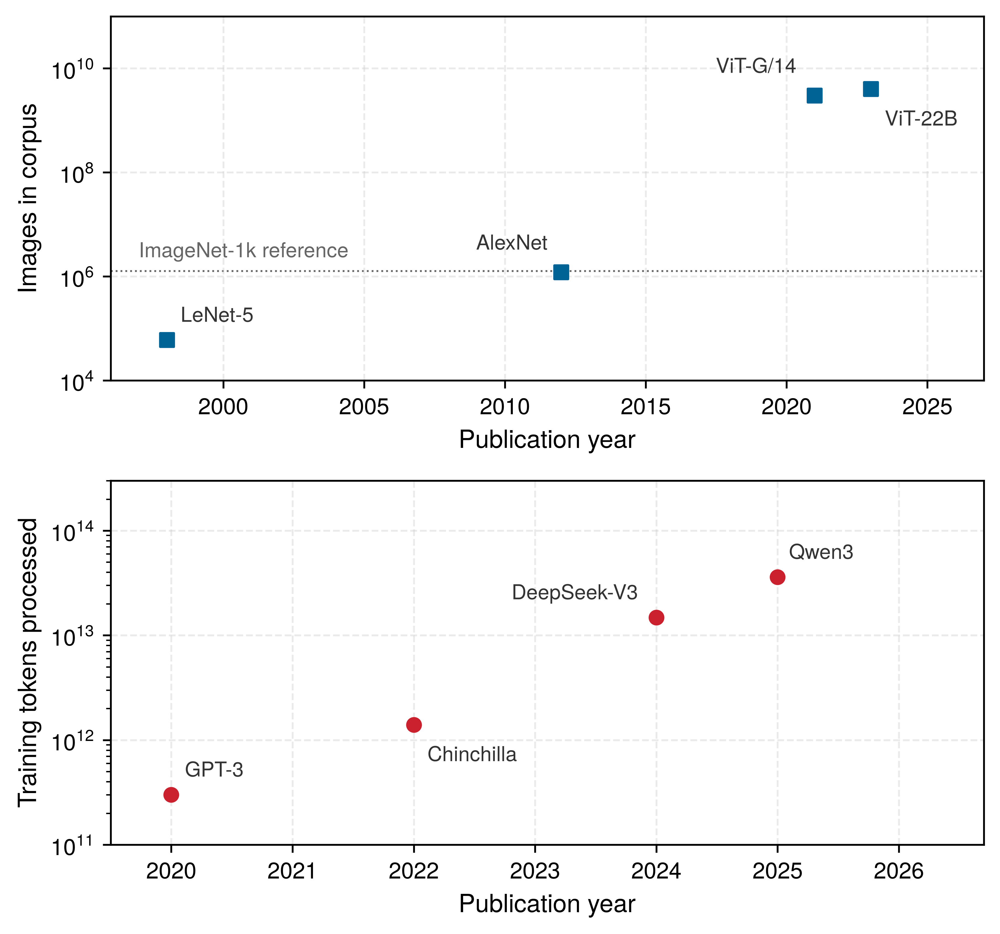
Инженерия данных
Содержание главы
Содержание
- 1 Данные как код
- 2 Как данные выходят из строя
- 3 Требования и бюджет данных
- 4 Получение данных
- 5 Приём и валидация данных
- 6 Разметка данных
- 7 Обработка данных
- 8 Выпуск датасета
- 9 Физика данных
- 10 Хранение и доставка
- 11 Приёмка конвейера
- 12 Операционное здоровье данных
- 13 Заблуждения и подводные камни
- 14 Итоги
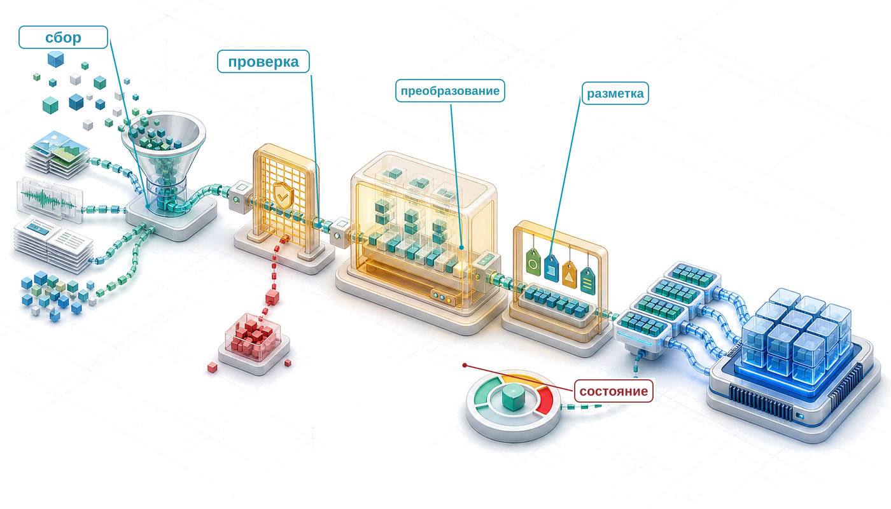
Назначение
Почему обучающие данные ведут себя подобно исходному коду в системе машинного обучения?
В традиционном программировании программисты пишут логику, которую исполняет компьютер. В машинном обучении программисты пишут процедуры оптимизации, которые извлекают операционную логику из данных. Это обращение ролей делает обучающие данные похожими на исходный код: их изменение может изменить обученную систему при переобучении модели, даже если традиционный код не менялся. И всё же данные редко получают тот контроль версий, тестирование и ревью, которые рутинно получает даже изменение одной строки кода. Тонкие несогласованности в разметке могут порождать несогласованность поведения; пропуск крайних случаев (edge cases) оставляет соответствующие сбои неизмеренными; исторические смещения (biases) могут проникать в обученное поведение. Модель, обученная только на этом наборе данных, не может извлечь относящиеся к задаче свидетельства, отсутствующие в нём, а систематические ошибки разметки способны определить то, чему она научилась. В отличие от традиционного исходного кода, который бездействует, пока программист его не изменит, операционное распределение может смещаться вместе с изменениями мира, потенциально меняя качество работы в продакшене даже тогда, когда в кодовой базе ничего не тронуто. Инженерия данных может поглощать значительную часть усилий проекта — часто больше, чем само моделирование, — потому что эта работа имеет большие последствия. Ошибка разметки, замеченная на этапе сбора, стоит одной переразметки; та же ошибка, найденная после развёртывания, может стоить цикла переобучения, расследования инцидента и доверия людей, с которыми система обошлась неправильно. Каждое решение в конвейере данных (что собирать, как размечать, когда фильтровать, как делить на выборки) распространяется вперёд, ограничивая архитектуру модели, динамику обучения и жизнеспособность развёртывания. Поэтому инженерия данных — это не предобработка, а программирование на другом языке: языке, в котором контроль качества, версионирование и мониторинг определяют, работает ли скомпилированная система сегодня и продолжит ли работать завтра. В терминах D·A·M данные пересекаются и с алгоритмом, и с машиной: они ограничивают то, чему модель может научиться, а конвейер, доставляющий их, ограничивает то, насколько быстро машина может этому научиться.
Цели обучения
- Объяснить принцип «данные как код» и проследить, как каскады данных распространяются через МЛ-системы
- Оценивать стратегии приобретения данных по охвату, качеству, стоимости разметки, управлению данными (governance) и ограничениям развёртывания
- Проектировать конвейеры приёма и валидации данных для пакетной, потоковой обработок, ETL и ELT
- Определять практики разметки, преобразования и выпуска данных, которые предотвращают утечку данных и сохраняют качество разметки, согласованность обучения и обслуживания (training-serving consistency) и воспроизводимость
- Вычислять гравитацию данных, задержки данных (data-stall) и затраты на пропускную способность хранения при перемещении или обслуживании наборов данных
- Выбирать уровни хранения, файловые форматы и дизайн загрузчиков данных так, чтобы ускоритель не простаивал без данных
- Диагностировать дрейф данных, накопление «долга по данным» (data debt) и отказы продакшн-конвейеров с помощью метрик дрейфа, индикаторов долга и контролируемых сравнений версий конвейера
1 Данные как код
Отсутствующий акцент в речевом корпусе, неверно размеченный класс или признак, вычисленный одним способом при обучении и другим при обслуживании, становится дефектом поведения системы, не имеющим ни одной строки кода, на которую можно указать. Поскольку система машинного обучения извлекает своё поведение из данных, обученная модель — это сжатое резюме её обучающего набора. Она может представить только те свидетельства, которые содержат эти данные, и трактует разметку данных как определение правильного ответа. В жизненном цикле, описанном в 03_ml_lifecycle, построение этого обучающего набора — Этап 2, который завершается передачей версионируемого набора данных в разработку модели; каждый последующий этап наследует то, что этот набор содержит, и то, чего ему не хватает.
Горький урок (Горький урок) объясняет, почему эта зависимость от данных выросла, а не сократилась. Методы, обучающиеся на данных в масштабе, раз за разом обгоняли методы, построенные на знаниях, закодированных вручную, поэтому знания, которые инженеры раньше вписывали в программы, теперь должны приходить через данные. 8 выбранных моделей на Рисунок 1 иллюстрируют получающийся диапазон масштабов обучающих данных. Корпуса изображений простираются от рукописных цифр до миллиардов изображений, а языковые модели обрабатывают сотни миллиардов до триллионов токенов. Эти числа описывают разные единицы и соглашения о подсчёте, поэтому они не позволяют установить общее время удвоения или общие требования к хранению.
В таком масштабе данные ограничивают не только модель, но и машину. Каждый шаг обучения читает свои примеры из хранилища, декодирует их и перемещает на ускоритель, а ускоритель, ожидающий входных данных, не вычисляет ничего, каким бы быстрым он ни был. Наборы данных, измеряемые терабайтами, обладают и физической массой: их перемещение медленно и дорого, и они расходуют энергию на каждом уровне иерархии памяти, который пересекают. Таким образом, данные одновременно занимают две из попарных пересечений таксономии D·A·M — те, что обозначены в Рисунок 4 как чему учиться и как перемещать информацию. По отношению к алгоритму они ограничивают то, чему модель может научиться; по отношению к машине — то, насколько быстро может идти обучение.
Обе границы требуют больших затрат на их соблюдение. В опросе практиков, который представляет 03_ml_lifecycle, очистка и организация данных оказались наиболее частым ответом на вопрос, на что тратят своё время специалисты по данным. В приведённом далее в этой главе сравнении стоимости классификации изображений разметка набора данных стоит примерно в 2,500× — 5,000× раз дороже одного цикла обучения на нём. Каждый этап между сырыми входными данными и набором данных, готовым для МЛ (получение, загрузка и валидация, разметка и обработка), может также внести дефект, который ни один из последующих этапов не обнаружит. Данные ограничивают и возможности, и пропускную способность, и часто доминируют в стоимости, поэтому они требуют той же инженерной дисциплины, что и модель и машина: систем получения, проверок валидации, рабочих процессов разметки, схем хранения и управления данными.
Определение 4.1: Инженерия данных
Инженерия данных — это инфраструктурный слой, который управляет жизненным циклом данных от источника до модели, охватывая их получение, преобразование, хранение и управление.
- Значимость: Она задаёт обе границы, которые данные накладывают на МЛ-систему. Состав, покрытие и метки набора данных определяют, представляет ли логический набор данных — примеры, которые обрабатывает задача обучения (
, множитель «железного закона»), — целевое распределение, а значит, и то, чему модель может научиться. В форме «железного закона», раскрывающей множитель Machine (Уравнение (3)), конвейер управляет слагаемым перемещения данных — физическими байтами, делёнными на пропускную способность , — и, следовательно, тем, насколько быстро может продвигаться обучение. - Отличие: В отличие от науки о данных, сосредоточенной на выводе и извлечении закономерностей, инженерия данных занимается масштабируемостью и надёжностью конвейера данных.
- Типичная ошибка: Распространённое заблуждение сводит инженерию данных к простой «очистке данных». В терминах систем это конвейер сборки, который превращает сырые, зашумлённые наблюдения в проверенные версионированные тензоры, потребляемые средами исполнения ускорителей.
↩︎ «Железный закон» ML-систем, слагаемым перемещения данных которого управляет эта глава, вводится в Железный закон МЛ-систем.
Главу несут две из сквозных «маяковых» рабочих нагрузок книги (Маяковые модели вводят «железный закон» в практику), по одной на каждую границу. Распознавание ключевых слов (KWS) — работающий всегда детектор слова-пробуждения, стоящий за фразами вроде «Alexa» и «OK Google», — несёт вопрос о том, что должны содержать данные. Он сменяет кейс скрининга диабетической ретинопатии из 03_ml_lifecycle, поскольку его проблемы с данными охватывают и облачный конвейер обучения, и устройство класса микроконтроллера. Модель должна распознавать несколько слов при разных акцентах, микрофонах и в разных помещениях, оставаться молчащей месяцами обычной речи и умещаться в десятки килобайт на устройстве класса TinyML. Его эталонный корпус, Multilingual Spoken Words Corpus (Mazumder и др. 2021 г.), — реальный; требования «умной колонки» и бюджет данных, устанавливаемые в этой главе, — иллюстративный сценарий. Классификация изображений ResNet-50 на одном ускорителе несёт вопрос о том, насколько быстро должны поступать данные, потому что примеры-изображения достаточно велики, чтобы нагружать хранилище, декодирование и передачу так, как не делают односекундные аудиофрагменты.
Принцип «данные как код» («Принцип data-as-code») превращает зависимость модели от её данных в инженерное правило. Изменение набора данных меняет обученную модель так же, как изменение исходного кода меняет программу, — даже если не тронута ни одна строка алгоритмического кода. Конвейер, порождающий набор данных, является, таким образом, сборкой системы, и каждое переобучение — это пересборка.
Набору данных тогда нужны те же дисциплины, которые уже есть у кода. Его происхождение (lineage) — запись о том, что породило каждую версию, — должно быть неизменяемым. Его проверки должны выполняться как исполняемые наборы валидационных тестов, его версии должны выпускаться как именованные релизы, а регрессия должна отлаживаться сравнением одной версии с другой. Код также хранит свои тесты отдельно от того, что они проверяют, и набору данных нужна та же граница доверия между его разбиениями. Обучающему набору разрешено формировать параметры; валидационному набору разрешено формировать решения по моделированию и конвейеру; тестовый набор зарезервирован для оценки обобщающей способности после того, как эти решения приняты.
Утечка данных возникает, когда информация пересекает границы между разбиениями, так что оценка качества вознаграждает то, что модель или её разработчики уже видели, вместо измерения обобщения на невиданные данные. Утечка проникает через дублирующиеся примеры, попадающие в несколько разбиений, изменённые копии одной и той же исходной записи, оказавшиеся по обе стороны разбиения, записи пользователей из одного домохозяйства, оказавшиеся и в обучении, и в тесте, или признаки, вычисленные на основе времени с использованием будущих наблюдений (Kaufman и др. 2012 г.). Утечка возможна и при предобработке — этот случай Глава 7.1 разбирает после введения нормализации и кодирования.
Детектор ключевых слов показывает границу разбиений в действии ещё до появления какой-либо модели. Назначение всех utterance каждого диктора одному разбиению не даёт акустической модели запомнить специфичные для диктора резонансы голосового тракта, поэтому оценка измеряет обобщение на дикторов, которых модель никогда не слышала. Общее правило — назначать разбиениям целые группы, а не отдельные примеры, с ключом по той единице, которая могла бы переносить информацию через границу: диктор, домохозяйство или исходная запись, стоящая за несколькими её изменёнными копиями.
Подобно сборке, конвейер, порождающий набор данных, работает по этапам, и глава следует за ними в порядке двух границ. Сначала идёт половина возможностей, работающая пересечением «Данные–Алгоритм». После того как рассмотрены способы, которыми данные выходят из строя, и требования детектора ключевых слов, получение, загрузка и валидация, разметка и обработка строят набор данных и определяют, чему модель может научиться, а этап релиза фиксирует, что именно было построено. Половина пропускной способности работает пересечением «Данные–Машина». Физика перемещения наборов данных задаёт стоимость каждого байта, а хранение и доставка должны перемещать эти байты достаточно быстро, чтобы ускоритель не простаивал. Затем приёмочный тест проверяет обе половины против исходных целевых показателей, а эксплуатация сохраняет обе границы истинными после развёртывания.
2 Как данные выходят из строя
В отличие от сломанной программной сборки, которая громко отказывает на этапе компиляции или тестирования, сломанная сборка данных часто завершается чисто и отказывает в продакшене. Модель кредитного скоринга начинает отклонять всех заявителей из одного региона после того, как миграция вышестоящей базы данных молча изменила способ записи ZIP-кодов; детектор слова-пробуждения месяцами пропускает всё больше произносимых команд после того, как производитель устройств сменил микрофон в новых моделях; система обнаружения мошенничества пропускает новый вектор атаки, потому что её обучающие данные устарели на полгода. Каждая ошибка восходит к разной первопричине (дрейф схемы, смещение распределения, устаревание данных), но все они разделяют общий шаблон: дефект данных попал в систему рано, каждый последующий этап считал данные заслуживающими доверия, а сбой проявился лишь после развёртывания. Четырёхстолпная структура (four pillars framework) — качество, надёжность, масштабируемость и управление — даёт контрольный список, который ловит их до выпуска.
2.1 Каскады данных
Шаблон, общий для этих трёх сбоев, — это каскад данных, в котором низкое качество данных на раннем этапе усиливается на каждом последующем этапе конвейера (Sambasivan и др. 2021 г.). Некоторые недопустимые входные данные вызывают немедленные программные ошибки, но данные могут также проходить схемы и тесты, молча ухудшая изучаемое поведение, пока проблемы качества не станут достаточно серьёзными, чтобы потребовать дорогостоящего расследования, переделки или переобучения. В последовательности жизненного цикла, показанной на Рисунок 2, ранние дефекты постановки задачи и сбора данных обходят промежуточную валидацию и проявляются только на этапах оценки и развёртывания.
↩︎ Нараставшая стоимость поздней переделки данных напрямую опирается на принцип распространения ограничений, установленный в Как решения каскадируются: принцип распространения ограничений.
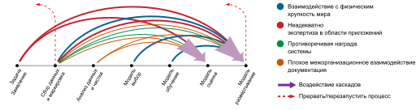
Определение 4.2: Каскад данных
Каскад данных — это режим отказа ML-системы, при котором проблемы качества данных на верхних уровнях распространяются через сбор, разметку, конструирование признаков, обучение, оценку и развёртывание, усиливаясь вплоть до отказов нижележащей модели или вреда пользователям.
- Значимость: Стоимость исправления растёт с числом нижележащих артефактов, потреблявших повреждённые данные: таблицы признаков нужно перегенерировать, модели переобучить, метрики оценки пересчитать, а развёрнутые системы откатить или пропатчить, — так одно плохое поле может обесценить целый цикл обучения и каждый производный от него эксперимент.
- Отличие: В отличие от изолированной ошибки качества данных, каскад данных определяется распространением и усилением. Каждый этап конвейера считает свой вход заслуживающим доверия и превращает дефект в новое производное состояние, что скрывает первопричину по мере удаления системы от сбора данных.
- Типичная ошибка: Распространённое заблуждение — что обычные программные тесты ловят каскады. Повреждённые данные могут удовлетворять схемам, проходить модульные тесты и завершать задачи обучения успешно, обучая модель неверному сигналу, поэтому предотвращение требует происхождения (lineage), валидации, контрактов и мониторинга, привязанных к поведению модели.
Молчаливость — то, что делает каскад дорогим. Программный сбой выдаёт трассировку стека и пейджит дежурного; вызванная данными ошибка модели выдаёт внешне корректные выходы, которые просто менее точны. К тому моменту, когда нижележащие метрики отражают отказ, повреждённые предсказания могут уже загрязнить исторические хранилища данных, вынуждая к дорогостоящим откатам и повторной загрузке данных. Каждый этап, через который проходит дефект, добавляет артефакты, требующие пересборки, поэтому предотвращение должно происходить в источнике — там, где одна проверка может остановить то, что позже потребует целого цикла пересборок.
Пример 4.1: Джунгли конвейеров
Сценарий: Модель кредитного скоринга из начала этого раздела внезапно начинает отклонять всех заявителей из конкретного географического региона.
Диагноз: Обучающий конвейер представлял zip_code как строку фиксированной ширины («02139»). Миграция вышестоящей базы данных изменил обслуживающее поле на целое число, не обновив нижележащие контракты данных. Нижележащее преобразование сериализовало это целое как «2139», потеряв ведущий ноль и заставив модель считать знакомый почтовый код не наблюдавшейся категорией. В этом сценарии запасной вариант для неизвестных категорий назначает высокий риск, что и объясняет региональный шаблон отказов.
Системный урок: Отсутствие контроля границ признаков создаёт джунгли конвейеров (Sculley и др. 2015 г.) — клубки недокументированного связующего кода, в которых изменения схемы на верхних уровнях вызывают молчаливые отказы нижележащей модели. Версионированные контракты данных — машинно-проверяемые правила, декларирующие ожидаемые типы, границы значений и допустимость null, — останавливают межсистемное повреждение, отклоняя некорректные записи на границе загрузки, прежде чем они достигнут модели.
2.2 Четыре основополагающих столпа
Ошибка с почтовыми индексами затронула сразу несколько аспектов: значения были неверными (качество), преобразование сломалось молча, вместо того чтобы отклонить запись (надёжность), и ни один контракт не зафиксировал смысл этого поля (управление данными). Предотвращение подобных отказов требует балансировки четырёх конкурирующих эксплуатационных приоритетов (Рисунок 3). Каждый из них питает систему данных МЛ, и каждый вступает в противоречие с соседними: более строгая валидация стоит пропускной способности, поддержание согласованности каждой хранимой копии данных требует координации, растущей с каждой добавленной машиной, ограничения приватности снижают производительность, а смягчение смещений может сократить пригодный для обучения набор данных.
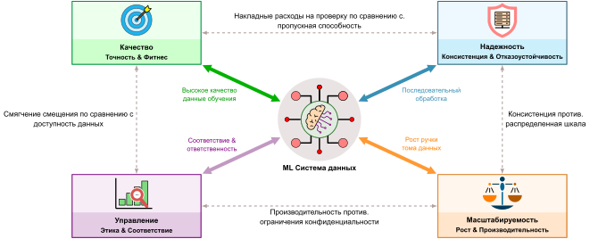
Качество определяет целостность входных данных и их пригодность для задачи. Данные должны точно отражать рабочий распределение, иметь корректные метки и неискажённые признаки. Например, в конвейере регистрации голоса на периферийном устройстве пользователь записывает несколько образцов слова-активатора, чтобы устройство могло адаптировать детектор ключевых слов под этот голос. Правила качества там отфильтровывают обрезанные аудиоволны, низкое отношение сигнал/шум и фоновые акустические помехи, чтобы модель обучалась на речи, а не на артефактах записи.
Надёжность определяет, продолжит ли работать конвейер регистрации при несовершенстве устройства, сети или поведения пользователя. Конвейер, который формирует превосходные примеры слова-активатора в лаборатории, но отказывает при нестабильной связи, разряжающейся батарее или сбоях микрофона, не приносит пользы дома у пользователя. Обработка ошибок, повторные попытки, локальная буферизация и деградация без отказа превращают правило качества в пригодную к использованию систему: устройство может запросить ещё одну произнесённую фразу, отложить загрузку до восстановления связи или сохранить заведомо исправную регистрацию, а не молча принимать повреждённое аудио.
Масштабируемость определяет, выдержит ли то же самое решение рост. Политика ручной проверки, работающая для тысячи записей, рушится, когда продукт расширяется до миллионов пользователей, десятков языков и редких акустических условий. Система должна масштабировать валидацию, хранение, разметку и дообучение, не позволяя инфраструктурным затратам расти быстрее ценности более широкого охвата. Ограничивающий ресурс зависит от рабочей нагрузки. Для периферийной речи доминируют объём хранения и пропускная способность разметки. Для рекомендательных систем, таких как DLRM lighthouse, таблицы выученных представлений пользователей и объектов перерастают память одной машины и должны быть разделены между несколькими.
Управление данными задаёт границы, в которых должны действовать качество, надёжность и масштабируемость. Для детектирования ключевых слов управление определяет, могут ли сырые голосовые записи покидать устройство, как долго может храниться аудио регистрации, какая запись согласия разрешает её использование и какая документация доказывает, что набор данных покрывает релевантные акценты, не раскрывая частную речь. Идеально масштабируемый, надёжный и качественный конвейер, нарушающий Общий регламент по защите данных (GDPR) или воспроизводящий демографические смещения, создаёт юридические риски, а не ценность. Практики документирования наборов данных, такие как datasheets (Gebru и др. 2021 г.) и data statements, делают часть этого управления видимой, фиксируя происхождение, предполагаемое использование, условия сбора и охват, необходимые для анализа смещений и научного сравнения (Bender и Friedman 2018 г.).
Когда система МЛ отказывает, каждый класс симптомов указывает на один из четырёх столпов:
- Постепенная потеря точности указывает на качество. Дрейф данных увёл рабочее распределение от обучающего, либо качество меток упало из-за смены пулов разметчиков.
- Периодические сбои конвейера указывают на надёжность. Обработка ошибок, логика повторных попыток или контроль ресурсов отсутствуют при пиковой нагрузке.
- Медленное обучение на достаточном оборудовании указывает на масштабируемость. Однопоточное преобразование, перемешивание, пропускающее весь набор данных через один воркер, или медленный уровень хранения не дают параллельным ресурсам выполнять полезную работу.
- Пробелы в соответствии требованиям, найденные в ходе аудитов, указывают на накопленный долг по управлению данными. Отслеживание происхождения неполно, средства контроля доступа устарели, а политики хранения отстают от изменений регулирования.
Контрольная точка 4.1: Основы четырёх столпов
Четыре столпа дают системную призму для каждого проектного решения в конвейере.
Столпы
Компромиссы
Некоторые отказы затрагивают несколько столпов. Признаки, различающиеся между обучением и обслуживанием, затрагивают и качество (значения неверны), и надёжность (вычисления несогласованы). Политика удаления из соображений приватности также может создать пробелы в качестве, если сохранённые данные больше не покрывают развёрнутую популяцию. Диагностика таких межстолповых отказов требует проверки контрактов согласованности, сравнения распределений признаков между средами и отслеживания происхождения преобразований, так что диагностика в продакшене проверяет инфраструктуру данных наряду с поведением модели. Столпы называют, что проверять, но не то, насколько хорошо — достаточно. Эти пороги задаются требованиями конкретной системы, и детектор ключевых слов их предоставляет.
3 Требования и бюджет данных
Детектор ключевого слова отвечает сразу на два числа. Он должен распознавать почти каждое произнесённое ключевое слово и почти никогда не срабатывать на что-либо иное, непрерывно слушая в десятках килобайт памяти на микроконтроллере или малопотребляющем ядре телефона или умной колонки. Иллюстративная умная колонка из этой главы задаёт эти числа, и каждый последующий этап конвейера измеряется относительно них.
Во взаимодействии с ключевым словом, показанном поэтапно на Рисунок 4, всегда активный детектор перехватывает «Alexa…» до того, как умная колонка подтвердит фразу и откроет командный канал для «приглушить свет». За этим коротким обменом стоит конвейер данных, который строится в этой главе: записи, на которых обучался детектор, способы их разметки и проверки, а также то, как результат был верифицирован перед выпуском.
Чтобы превратить этот короткий обмен в инженерную спецификацию, нужны целевые показатели, отражающие то, как устройство реально слушает. Общая точность — неверная цель: почти каждая секунда аудио не содержит ключевого слова, и детектор, который никогда не срабатывает, показал бы почти идеальный результат. Поэтому сценарий задаёт долю распознавания ключевых слов в 98 percent — долю произнесённых ключевых слов, которую перехватывает детектор, — измеренную при пороге срабатывания, который удерживает ложные срабатывания в рамках бюджета, выводимого в следующем ноутбуке. Также требуется отклик в течение 200 ms и модель, достаточно компактная и экономная для устройства.
Инженерный расчёт 4.1: Целевые показатели ложных срабатываний
Задача: всегда активная KWS-система закладывает не более одного ожидаемого ложного срабатывания в месяц. В модели, где каждую секунду круглосуточно считается одно окно классификации без ключевого слова, насколько строгим должен быть уровень ложноположительных срабатываний на одно окно?
Переменные:
- Скважность работы: всегда активный режим (24 hours/day).
- Размер окна: секундные окна классификации.
- Окон в месяц: одно окно в секунду, 24 hours/day, за 30 days даёт 2,592,000 windows/month.
Математика:
- Доля ложноположительных срабатываний (FPR): 1 ожидаемых ложных срабатываний, делённое на месячное количество окон без ключевого слова, даёт примерно
- Требование к отклонению окон без ключевого слова: 99.99996 percent отклонённых окон без ключевого слова.
Системный вывод: этот расчёт ограничивает ожидаемое месячное количество, а не максимальное число ложных срабатываний в каждом месяце. Ожидаемое количество выполняется, даже если соседние окна коррелированы, потому что математические ожидания складываются по окнам независимо от того, независимы ли сами окна. Агрегированная точность (например, «точность 99 процентов») здесь недостаточна. Оценка должна сообщать количество ложных принятий в час (FA/Hr) вместе с соответствующим поведением по ложным отклонениям. Реальные детекторы оценивают перекрывающиеся окна каждые несколько десятков миллисекунд и сглаживают оценки, поэтому цель на одно окно зависит от детектора, а измерять нужно почасовую долю. Бюджет в одно ложное срабатывание в месяц намеренно строгий; коммерческие ассистенты обычно передают каждого кандидата на вторую, более крупную проверку, а не требуют от всегда активного детектора справиться с таким бюджетом в одиночку (Siri Team 2017 г.).
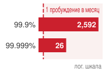
Даже 99.999 percent отклонения на одно окно перемножаются в 26 ложных срабатываний в месяц.
Таким образом, оценка сообщает обе доли вместе, в виде кривой компромисса «распознавание/ошибка», которая откладывает количество ложных принятий в час против доли ложных отклонений на потоковом аудио, характерном для развёртывания (Nayak и др. 2022 г.). Цель по распознаванию считывается с этой кривой при бюджете ложных срабатываний, а операционные метрики завершают контракт, ограничивая время отклика от конца ключевого слова до реакции системы вместе со средней мощностью, потребляемой во время прослушивания.
Устройство задаёт жёсткие границы любого проекта, отвечающего этим целям. Ограничения памяти требуют лёгких моделей, часто в диапазоне десятков килобайт (Zhang и др. 2017 г.), чтобы уместиться в всегда активном острове системы на кристалле (SoC).1 Этот бюджет должен вместить как веса модели, так и буферы извлечения признаков и состояние предобработки. Ограниченные вычислительные возможности (часто несколько сотен МГц тактовой частоты) требуют агрессивной оптимизации модели. На телефонах и носимых устройствах детектор работает от батареи, и даже подключённая к сети умная колонка должна держать низкое энергопотребление в простое. Поэтому KWS-системы ориентируются на потребление менее милливатта при непрерывном прослушивании.
Качество и разнообразие данных определяют, можно ли достичь этих целей в указанных пределах. Набор данных должен охватывать носителей разных акцентов, возрастов и полов, множество способов произнесения одного и того же ключевого слова и фоновые условия — от тихих спален до шумных кухонь. Модель не может вырасти, чтобы компенсировать недостающее покрытие, поэтому на таком устройстве данные несут ту ношу, которую в центре обработки данных несла бы более крупная модель.
3.1 Пространство проектирования KWS
Удвоение частоты дискретизации записи ключевого слова с 8 кГц до 16 кГц улавливает более чёткие согласные звуки и повышает долю распознавания, но также удваивает окно сырого аудио и работу по обработке входных данных на устройстве. Каждое решение по инженерии данных для детектора ключевых слов сталкивает долю распознавания, устойчивость к ложным срабатываниям, задержку, энергию и память друг с другом, и Таблица 1 оценивает эти компромиссы. Каждая строка — это связь D·A·M того рода, что изображена на Рисунок 3, поскольку выбор данных, например частота дискретизации или число коэффициентов, меняет то, что получает алгоритм, и то, что машина должна удерживать в всегда активной памяти.
Одна строка таблицы использует мел-кепстральные коэффициенты (MFCC)2 (Davis и Mermelstein 1980 г.), которые сводят каждый кадр примерно 25 ms аудио к 13–40 числам, подчёркивающим частоты, используемые в речи. Число коэффициентов задаёт размер входа модели и объём сохраняемых акустических деталей; Глава 7 показывает, как они извлекаются.
| Проектное решение | Влияние на качество | Влияние на задержку (latency) | Влияние на стоимость | Влияние на память |
|---|---|---|---|---|
| 8 |
+2–4% к доле обнаружений | 2× к нагрузке обработки входных данных | 2× к объёму хранения сырого аудио | 2× к окну сырого аудио |
| 13 |
+3–5% к доле обнаружений | 3× к размеру входа модели | Минимальное | 3× к памяти признаков |
| 1 млн |
+5–8% к доле обнаружений | 10× к времени обучения | 10× к стоимости разметки | 10× к объёму хранения |
| Чистые |
+10–15% к реальным условиям | Минимальное | 3× к стоимости сбора | Минимальное |
| Облачный |
риск снижения доли обнаружений до 2% | 100 ms |
$0.001/query |
облачный масштаб |
| Только реальные |
+3–5% к устойчивости | Минимальное | 10× дешевле на пример, чем реальный сбор | Минимальное |
Поскольку устройство работает внутри лимита энергопотребления в единицы милливатт и бюджета SRAM в десятки килобайт, инженерная команда не может выбрать самый точный вариант в каждой строке Таблица 1 одновременно. Вместо этого команда должна распределить фиксированный бюджет данных между разметкой, хранением и управлением данными так, чтобы детектор достиг целевого уровня точности, не перерастая аппаратное обеспечение. Блокнот 4.2 распределяет бюджет данных и предлагает кандидатное решение для развёртывания на умной колонке: сколько меток можно купить на этот бюджет, какое представление признаков устройство может себе позволить и какие варианты работы с данными предназначены для закрытия оставшегося разрыва. Последующие решения о сборе, разметке, обработке и доставке данных дают свидетельства, необходимые для принятия или отклонения этого решения.
Инженерный расчёт 4.2: Распределение бюджета данных для KWS
Сценарий: система KWS для умной колонки имеет следующие ограничения:
- Цель: доля обнаружения ключевых слов 98 percent при пороге, который удерживает ожидаемый бюджет ложных пробуждений ниже 1 false wake/month
- Бюджет: $150K — общий бюджет инженерии данных
- Память: ограничение на размер модели 256 KB (всегда включённый остров), плюс отдельный бюджет 16 КБ на состояние предварительной обработки
- Сроки: 6 months до вывода в эксплуатацию
Шаг 1: Выбрать консервативные варианты для устройства с ограниченными ресурсами.
Для этого сценария команда выбирает два консервативных варианта:
- 13 MFCC-коэффициентов, поскольку каждый MFCC-кадр живёт в SRAM всегда включённого острова как вход модели и буферизованное состояние, поэтому вариант с 40 коэффициентами утраивает затраты, которые устройство несёт непрерывно
- Локальный инференс, поскольку передача каждой секунды аудио на сервер исключена из-за пропускной способности, приватности и автономной работы; риск снижения доли обнаружений в таблице — цена модели, достаточно компактной для всегда включённого острова
Выбор опирается на то, где оседает каждая из затрат. Сбор данных оплачивается один раз, из центрального бюджета, тогда как представление с 40 коэффициентами утраивает вход модели, а вместе с ним работу первого слоя и буфер признаков — на каждом устройстве, каждую секунду его прослушивания. Таблица указывает на прирост доли обнаружений 3–5 percent от 40 коэффициентов. Команда отказывается от этого прироста на устройстве и рассчитывает компенсировать его более широким охватом обучающих данных. Решение принимает приёмочный тест Глава 11.
Шаг 2: Вычислить распределение бюджета.
Разметка оценивается по заданной в сценарии ставке за один краудсорсинговый пример, установленной выше краудсорсинговых ставок для классификации изображений, которые позже табулирует Глава 6.2, потому что участник разметки KWS должен не только разметить, но и записать произнесение. Бюджет в $150K распределяется по трём категориям затрат:
- Разметка (~60 percent): доступно $90K
- Хранение/Обработка (~25 percent): $37.5K
- Управление данными/Прочее (~15 percent): $22.5K
При $0.10/label с накладными расходами на проверку 20 percent: $90K ÷ $0.12/label = 750K размеченных примеров
Это даёт примерно 0.75M размеченных примеров — чуть ниже якоря в 1 млн в пространстве проектирования. Строка 1 млн → 10 млн в Таблица 1, следовательно, начинается выше этого бюджета; она показывает, как доля обнаружений масштабируется с объёмом данных, а не прирост, который покупает этот план. Подсчёт примеров также скрывает то, что на практике ограничивает модель пробуждения: число различных дикторов и часы обычного, неключевого аудио, доступные для измерения ложных пробуждений. Одной лишь цели по ложным пробуждениям требуется около трёх месяцев репрезентативного прослушивания без единого ложного пробуждения — по правилу трёх из Глава 11, — и это распределение ещё не учитывает стоимость такой оценки.
Шаг 3: Определить кандидатные улучшения качества.
План по качеству состоит из трёх компонентов:
- 750K реальных примеров, которые покупает бюджет
- Иллюстративная стартовая доля обнаружений ~90 percent, которую, по предположению команды, эти примеры обеспечивают, поскольку таблица проектирования не оценивает прирост ниже своей строки 1 млн
- Разрыв до цели 98 percent, который должны закрыть варианты ниже
Три варианта из пространства проектирования предназначены для закрытия этого разрыва. Их заявленные приросты перекрываются (зашумлённые данные и синтетическое расширение данных оба дают устойчивость к акустическим условиям), поэтому их нельзя просто сложить со стартовой величиной, а затраты каждого варианта на сбор, хранение, обработку и развёртываемый след должны укладываться в распределения выше:
- Дискретизация 16 кГц: прирост доли обнаружений 2–4 percent, 2× объёма хранения сырого аудио (на устройстве удваивается лишь короткое окно сырых отсчётов, поступающих в каждое вычисление MFCC, поскольку каждый кадр по-прежнему сводится к 13 коэффициентам)
- Зашумлённые обучающие данные: прирост доли обнаружений в реальных условиях 10–15 percent, 3× стоимости сбора, для целевого зашумлённого среза
- Синтетическое расширение данных: прирост устойчивости 3–5 percent, 10× дешевле, чем реальные данные, в иллюстративной строке
Шаг 4: Итоговая конфигурация.
Сценарий объединяет эти решения с 13 MFCC-коэффициентами и вычисленным бюджетом реальных меток 750K в Таблица 2. Поскольку эффекты качества перекрываются, таблица фиксирует конфигурацию для проверки, а не решённый оптимум.
Результат: бюджет покупает примерно 750K примеров с человеческой разметкой, 13 MFCC-коэффициентов, локальный инференс, а также зашумлённый срез и синтетическое расширение данных для закрытия разрыва по качеству. Достигнет ли эта конфигурация цели по обнаружению 98 percent внутри лимита модели 256 KB — решает приёмка.
Системный вывод: анализ пространства проектирования превращает «нам нужно больше данных» в план с рассчитанными затратами. Заявленные допущения о разметке покупают около 750K реальных примеров, и решает, успешен ли этот план, приёмочный тест, а не таблица проектирования.
Таблица 2 фиксирует итоговую конфигурацию, сопоставляя каждое проектное решение с ограничением, которое его мотивирует: дискретизация и расширение данных опираются на заявленные распределения, а всегда включённый остров задаёт ограничение на развёртываемый след. Фактические затраты и память рабочего состояния по-прежнему требуют проверки.
| Решение | Выбор | Обоснование |
|---|---|---|
| Частота дискретизации | 16 кГц | +2–4% к доле обнаружений за 2× объёма хранения сырого аудио, при условии подтверждения затрат; на устройстве растёт лишь окно сырых отсчётов, поскольку каждый MFCC-кадр сохраняет 13 коэффициентов |
| MFCC-коэффициенты | 13 | Одна треть буфера признаков и входа модели по сравнению с 40 коэффициентами в всегда включённой SRAM; проверить, восстанавливает ли улучшенный охват данных разрыв по качеству |
| Обучающие примеры | 750K реальных + иллюстративное синтетическое расширение данных | Количество меток с человеческой разметкой следует из бюджета; синтетический объём — выбор сценария |
| Разнообразие данных | Смесь зашумлённых и чистых | Критично для развёртывания в реальных условиях |
| Инференс | Локальный, с пониженной точностью | Пониженная точность может уменьшить след; итоговое соответствие лимиту 256 KB требует анализа квантизации из Числовая точность: как меняется хранение значений |
| Расширение данных | Массовое синтетическое | Иллюстративное преимущество 10× по стоимости на пример; суммарные затраты на генерацию и проверку требуют подтверждения |
Кандидатная конфигурация фиксирует цели, но не данные. Их достижение начинается со сбора: поиска записей, охватывающих дикторов, акценты, устройства и помещения, с которыми встретится детектор, из источников, чьи стоимость и условия согласия бюджет способен выдержать.
4 Получение данных
Огромный корпус студийного звука не поможет детектору ключевого слова, который должен работать на недорогих микрофонах в шумных кухнях, — модель не может научиться распознавать диктора, помещение или микрофон, которых не дал ни один источник. Поэтому получение данных (data acquisition) задаёт внешний предел границы возможностей, и начинается оно с того момента, когда команда называет пробел в покрытии, который должна закрыть модель. Для задачи распознавания ключевых слов первым источником служат публичные корпуса. Speech Commands (Warden 2018 г.) задал бенчмарк для малого словаря — произнесённые слова длительностью в одну секунду, а Multilingual Spoken Words Corpus (MSWC) (Mazumder и др. 2021 г.) предоставляет переиспользуемый справочный источник объёмом 23.4 million audio samples на 50 languages языках. Этот корпус покрывает общие ключевые слова на многих языках, но в нём может не оказаться собственного ключевого слова продукта, и ничего из него не записано на микрофонах продукта и в помещениях, где продукт будет слушать. Именно этот пробел закрывает бюджет разметки из учебного примера по KWS.
Достижение частоты детекции 98 percent требует репрезентативного покрытия региональных акцентов, возрастных групп дикторов, реверберации помещений и микрофонов, различающихся частотной характеристикой, отношением сигнал/шум и поведением при перегрузке, причём в таких объёмах, которые ручное курирование экономически не способно обеспечить, и при жёстких границах приватности в части хранения аудио. Поскольку ни один метод сбора не может экономически покрыть все эти условия сразу, стратегия получения данных представляет собой последовательность решений по закрытию пробелов: переиспользовать то, что уже соответствует развёртыванию; собирать то, чего не хватает; извлекать из веба или синтезировать там, где ограничивающим фактором является масштаб; и отклонять источники, непригодные из-за происхождения данных или ограничений согласия.
4.1 Требования к покрытию и разнообразию
Принятие таких решений по закрытию пробелов требует смотреть глубже агрегированных метрик: детектор ключевого слова, обученный на миллионах чистых записей, может показывать хороший результат на общей валидационной выборке и при этом срабатывать раз в час на разговоре на кухне или пропускать дикторов с недостаточно представленными региональными акцентами. Масштаб датасета сам по себе не гарантирует обобщения, когда пробелы в покрытии большого корпуса (географическое смещение, недопредставленность демографических групп, дрейф калибровки сенсоров и неохваченные краевые случаи) порождают систематические ошибки, которые скрывают агрегированные валидационные метрики (Shankar и др. 2017 г.; Wang и др. 2019 г.; Oakden-Rayner и др. 2020 г.).
Для KWS покрытие должно поддерживать и распознавание ключевых слов, и контракт по ложным срабатываниям. Размеченные записи с ключевым словом измеряют распознавание, но получение новых таких записей не показывает, как часто постоянно работающий детектор активируется на обычном аудио без ключевых слов. План получения данных должен отдельно предусматривать записи с согласием участников, собранные для оценочного исследования репрезентативных условий прослушивания, включая фоновый разговор, телевидение, музыку, тишину и шум окружающей среды на целевых микрофонах и в целевых помещениях. Эти записи сохраняют длительность и временную последовательность, чтобы оценка могла прогонять развёрнутый путь детекции и сообщать количество ложных принятий в час наряду с ложными отклонениями на записях с ключевым словом. Короткий поток без наблюдаемых ложных срабатываний даёт ограниченные свидетельства: его длительность и неопределённость измеренной частоты ограничивают любые утверждения о месячной цели.
Негативные примеры для обучения служат иной цели получения данных. Добыча сложных негативов (hard negatives) — почти похожих на ключевое слово фраз и другого аудио без ключевых слов, которое текущий детектор путает с ключевым словом, — может улучшить его поведение по отклонению, но такая намеренно сложная выборка не сохраняет частоту этих условий в развёртывании. Поэтому репрезентативные оценочные потоки остаются отделёнными от обучения и выбора порога, с сохранением границ по дикторам и периодам записи. Бюджет получения данных, финансирующий только разметку ключевых слов и добытые сложные негативы, может улучшить детектор, но оставит его эксплуатационную цель по ложным срабатываниям неизмеренной.
Ограничения управления данными дополнительно формируют процесс получения: нормы о приватности и медицинских данных, такие как GDPR и американский закон о переносимости и подотчётности медицинского страхования (HIPAA), ограничивают то, какие данные можно собирать и как (European Parliament и Council of the European Union 2016 г.; United States Congress 1996 г.), а этическая добыча данных требует справедливой оплаты и прозрачного использования человеческого вклада. Вместе эти границы — по покрытию, оценке и управлению — определяют критерии, по которым оценивается каждый кандидат-источник данных.
↪ Инфраструктура управления данными, которая доказывает, какие данные потребовала производственная система, кто к ним получал доступ и на каком правовом основании, развивается в Управление данными и соблюдение требований.
4.2 Выбор источников данных
Оплата заказной записи слов и акцентов, уже покрытых публичным бенчмарком, расходует бюджет данных впустую, тогда как остановка на бенчмарке оставляет детектор «слепым» к собственным микрофонам и помещениям. Поэтому выбор между курированными датасетами, краудсорсингом с привлечением специалистов, контролируемым парсингом веба и синтетической генерацией начинается с самого дешёвого переиспользуемого источника и эскалирует до активного сбора или симуляции лишь тогда, когда оставшийся разрыв между развёртыванием и распределением данных оправдывает дополнительные затраты, усилия по качеству и риски управления.
Готовые датасеты из репозиториев вроде Kaggle, UCI (Dua и Graff 2024 г.) и ImageNet3 — первый тест. Они дают скорость и сопоставимость, когда распределение развёртывания достаточно похоже на бенчмарк, чтобы переиспользование имело смысл. Для KWS курированный речевой корпус может стать основой базовой модели и выявить, какие слова, языки и акустические условия уже покрыты. Базовый корпус не гарантирует эксплуатационного покрытия, но делает оставшиеся разрывы в распределении измеримыми.
Возможность безопасного переиспользования внешнего датасета зависит от качества его документации. Без записей о калибровке сенсоров, условиях записи и правилах фильтрации команда не сможет воспроизвести условия внешнего датасета или проверить их соответствие развёртыванию (Pineau и др. 2021 г.; Henderson и др. 2018 г.). Хорошая документация описывает, как собирались данные, как определялась каждая метка и какие базовые частоты ошибок были обнаружены, чтобы другая команда могла независимо проверить корпус. Когда приём данных достигает миллионов примеров из разных источников, скрытые ошибки разметки тоже размножаются сверх того, что люди способны проверить вручную (Gudivada и др. 2017 г.), поэтому конвейер должен запускать автоматические проверки валидности на каждом батче.
Переиспользование несёт менее заметный риск. Стандартные валидационные метрики могут создавать иллюзию готовности модели, когда сам бенчмарк нерепрезентативен, а когда на одном и том же репозитории обучаются многие команды, его слепые зоны не усредняются между их моделями. Они могут повторяться от модели к модели, так что пять моделей, обученных на одном датасете, могут разделять коррелирующие ошибки (Рисунок 5).
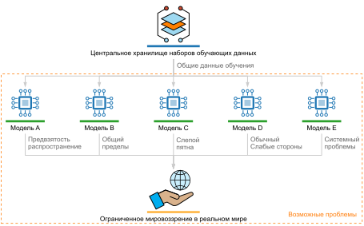
Этот разрыв между бенчмарком и развёртыванием — центральный режим отказа статической офлайн-оценки. Поскольку обучение минимизирует среднюю ошибку только на наблюдаемом обучающем наборе, модель цепляется за любые ярлыки (shortcuts), появляющиеся в статическом бенчмарке, даже когда в продакшене эти ярлыки исчезают. Закрытие оставшихся разрывов требует получения новых данных за пределами бенчмарка, и при миллионах примеров выбор источников превращается в задачу масштабирования.
4.3 Масштабирование получения данных
Курированные репозитории и записи малыми партиями закрывают пробелы покрытия по одному срезу за раз, что перестаёт работать, как только задаче требуются миллионы обучающих примеров. На больших масштабах основные пути к очень крупным датасетам предоставляют парсинг веба, краудсорсинг и синтетическая генерация. Масштабируемость получения данных — экономическая задача: удельные затраты на разметку, пропускная способность приёма данных и накладные расходы на хранение масштабируются по очень разным кривым, причём разметка обычно доминирует (Глава 6.2). Подходы, хорошо работающие на тысячах примеров, становятся непрактичными на миллионах.
Парсинг веба снижает стоимость сбора сырых примеров в масштабе. Разметка (supervision) остаётся отдельной статьёй расходов, если только источник и задача сами не поставляют пригодные метки или обучающие цели. Основополагающие датасеты компьютерного зрения, такие как ImageNet (Deng и др. 2024 г.) и OpenImages (Kuznetsova и др. 2020 г.), опирались на автоматический парсинг, а современные языковые модели зависят от многотерабайтных обходов веба (Groeneveld и др. 2024 г.). Конвейеры приёма данных, нацеленные на доменно-специфичные корпуса, например публичные репозитории кода (Chen и др. 2021 г.), расширяют покрытие при низкой стоимости получения на пример. Парсеры также хрупки: вёрстка страниц меняется и ломает разбор, сайты ограничивают частоту обхода, а динамически отрисованный контент исчезает. Сырые обходы веба к тому же захватывают анахроничные или нерелевантные примеры, загрязняющие обучающие цели.
Уличная сцена 1914 года на Рисунок 6 напрямую иллюстрирует этот режим отказа. Некурируемый веб-запрос «traffic light» (светофор) вернул исторический перекрёсток в Кливленде, где трамваи и придорожная будка управления окружают ранние светофоры с ручным переключением. Если бы модель автономного вождения обучалась на таких примерах, она выучила бы ложные корреляции с трамвайными путями, модной одеждой той эпохи и рукописными подписями, а не с современными светодиодными светофорами.
Сырой объём не может заменить проверку того, что означают примеры, поскольку некурируемый обход веба умножает ложные корреляции вместе с числом примеров. Парсинг также ведётся в рамках жёстких юридических границ и границ управления данными. Пользовательские соглашения сайтов, директивы robots.txt и развивающееся законодательство об авторском праве ограничивают то, что могут забирать автоматические обходчики (Harvard Law School 2024 г.). Поэтому конвейеры приёма данных обязаны фиксировать происхождение, фильтровать по соблюдению авторских прав и очищать персональные данные до того, как спарсенные файлы попадут в общее хранилище.
Даже хорошо управляемый сбор данных опирается на конечный запас. Для выбранных языковых моделей заявленные объёмы токенов претрейна росли с подобранным темпом около 2.9× в год: от 300 billion токенов, на которых в 2020 году обучалась GPT-3, до 36 trillion, заявленных для Qwen3 в 2025 году (Brown и др. 2020 г.; Yang и др. 2025 г.). Рисунок 7 сопоставляет этот рост с оценочным запасом общедоступного текста, созданного людьми, где медиана 2024 года по модели составляет 320 trillion эффективных токенов после поправок на качество и повторное использование (Villalobos и др. 2024 г.). При фиксированном запасе подобранные в этой главе объёмы токенов достигают его медианы примерно в 2028 году. Это сравнение не воспроизводит прогноз упомянутого исследования о растущем запасе и не устанавливает исчерпание уникального текста, поскольку суммарные объёмы обучающих токенов могут включать повторы. Когда качественного текста становится мало, его добыча перестаёт быть вопросом закупки, и отбор, дедупликация и методы выбора данных из Отбор данных определяют, сколько стоит каждый дополнительный токен. Модель активации по ключевому слову сталкивается с собственным вариантом этого ограничения гораздо раньше. Ни один собранный корпус не содержит достаточно чистых записей одной фразы во всех акцентах и акустических условиях, поэтому конвейеру KWS приходится заказывать недостающие данные.
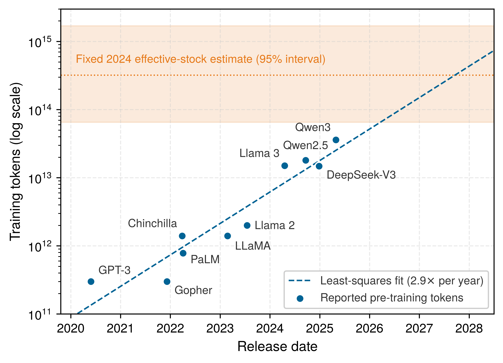
Краудсорсинг разбивает работу по сбору данных на небольшие задачи для множества оплачиваемых исполнителей, которые либо размечают существующие примеры, либо записывают новые. Платформы вроде Amazon Mechanical Turk4 (Amazon Web Services 2024 г.) продемонстрировали форму разметки в промышленном масштабе на ImageNet, распределив миллионы задач категоризации изображений между тысячами независимых исполнителей (Deng и др. 2024 г.). Конвейер KWS использует форму сбора, при которой исполнители записывают образцы ключевого слова в конкретных акустических условиях и недостаточно представленных диалектах, которые не удаётся захватить обычным сбором данных из веба. В обеих формах краудсорсинг смещает узкое место сбора данных с извлечения сырых образцов на контроль качества распределённых исполнителей.
Краудсорсинг даёт два ключевых системных преимущества: горизонтальное масштабирование за счёт параллельной диспетчеризации микрозадач и демографическое разнообразие по региональным акцентам и акустическим условиям. Однако распределённый человеческий труд вносит значительную вариативность качества разметки и записей. Чтобы этот шум не искажал то, чему учится модель, конвейер сбора данных должен реализовать автоматизированный контроль качества: голосование консенсусом, валидацию по эталонному набору (golden set — чередование заранее размеченных контрольных образцов) и динамическую маршрутизацию задач, направляющую каждую задачу исполнителям с сильной историей на похожих задачах (Sheng и Zhang 2019 г.).
Генерация синтетических данных сокращает физический труд по сбору и разметке, генерируя обучающие образцы алгоритмически. Генерация всё равно влечёт вычислительные и дисковые затраты на каждый образец, а также затраты на верификацию. Её ценность для обучения зависит от того, отражает ли генератор релевантные задаче условия целевой среды развёртывания. На практике выходы симуляций и историческая телеметрия реальных систем поступают двумя потоками на стадию смешивания, которая питает обучение модели (Рисунок 8).
↪ Синтетические данные как рычаг воздействия на то, чему учится модель — от аугментации реальных образцов до генеративного синтеза и закрытия доменного разрыва — рассматриваются в Генерация синтетических данных.
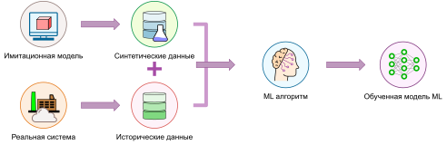
Синтетические данные особенно полезны для редких событий и контролируемой аугментации. Физические симуляторы могут порождать хвостовые случаи — например, насыщение датчика на высокой скорости или траектории почти столкновения, — которые слишком опасно или дорого записывать в полевых условиях (NVIDIA 2024 г.). В компьютерном зрении конвейеры аугментации применяют обучаемые или случайные комбинации пространственных и цветовых искажений (Cubuk и др. 2019 г., 2020 г.; Shorten и Khoshgoftaar 2019 г.). В обработке речи SpecAugment применяет похожие случайные искажения к аудио (Park и др. 2019 г.).
Для системы KWS параметрический синтез речи из текста (Werchniak и др. 2021 г.) порождает чистые произнесения ключевого слова. Затем конвейер применяет записанные импульсные характеристики помещений (RIR) — эхо-сигнатуры реальных комнат — так, чтобы каждое произнесение звучало, будто оно сказано в другой комнате, и в завершение добавляет синтетический фоновый шум.
Пример 4.2: Генерация синтетических данных
Сценарий: Команде распознавания ключевого слова не хватает физических записей редких акцентов дикторов, акустики помещений и профилей фонового шума.
Диагноз: Чисто физический сбор не может покрыть редкие акустические граничные случаи в сроки проекта. Генерация синтетических вариаций аудио посредством сдвига высоты тона, аддитивного шума и симуляции импульсных характеристик помещений расширяет разнообразие обучающего набора без дорогостоящего полевого сбора.
Системный урок: Аугментация дёшева, но изменения высоты тона, шума и отклика помещения не гарантируют соответствия редким акцентам. Удержанные вне обучения реальные записи по релевантным условиям дикторов и акустики должны установить, улучшает ли это расширение качество при развёртывании.
Отправляясь от опорного корпуса, команда закрывает оставшиеся пробелы покрытия продукта, подбирая каждый источник к тому, что он делает лучше всего за доллар. Публичные бенчмарки дёшево создают базовую модель; сбор данных из веба даёт массовое акустическое разнообразие; краудсорсинг собирает целевые записи недостаточно представленных диалектов; а симуляция восполняет редкие акустические искажения. Вместе эти источники образуют кандидатный план покрытия. Затем удержанные вне обучения реальные записи проверяют, какие пробелы этот план действительно закрывает, а измеренные затраты на генерацию, сбор, разметку и хранение определяют, укладывается ли он в бюджет; развёрнутому конвейеру по-прежнему требуется валидация занимаемого следа.
Сбор данных завершается данными, которые на бумаге покрывают развёртывание и приходят в самых разных формах: краудсорсинговые записи, синтетические волновые формы и веб-аудио с разными кодировками, частотами дискретизации и уровнями шума. Ничто из этого ещё не проверено. Прежде чем какая-либо запись сможет быть размечена или использована для обучения, она должна пройти границу, пропускающую только корректно сформированные и заслуживающие доверия данные.
5 Приём и валидация данных
Краудсорсинговая запись wake-word приходит в виде стереофонического MP3, синтетическая — в виде монофонического WAV с другой частотой дискретизации, а фрагмент с устройства согласившегося пользователя — в виде сжатого кусочка со штампом времени в неверном часовом поясе. Граница приёма данных (ingestion) превращает эту смесь в один согласованный формат записей и решает, какие записи вообще допускаются внутрь. Это входная часть конвейера данных, показанного на Рисунок 9, где записи проходят через приём данных и центральное хранилище, прежде чем попасть в циклы преобразований, питающие обучение, — и всё это внутри контура управления данными (data governance), который определяет, что может храниться и кто имеет право это читать. Для keyword spotting эта граница обрабатывает записанные примеры, используемые для построения и обновления модели; живой аудиопоток детектора на устройстве через неё не проходит.
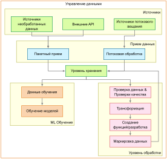
Уровни на Рисунок 9 отделяют сырой приём данных от циклов валидации, преобразования и инженерии признаков, питающих обучение, поэтому медленное преобразование никогда не мешает поступлению записей, а проверка, добавленная на этапе приёма, защищает все последующие этапы. До того как какая-либо запись будет проверена, форму этой границы определяют два решения: когда записи принимаются и где они преобразуются относительно хранилища.
5.1 Паттерны батчевого и потокового приёма данных
Первое решение — когда записи принимаются — зависит от того, насколько быстро данные теряют ценность и какие затраты на инфраструктуру оправдывает эта свежесть. Детектор мошенничества, который помечает украденную карту спустя часы после покупки, срабатывает уже после того, как деньги ушли, тогда как недельный объём краудсорсинговых записей wake-word ничего не теряет, подождав следующий плановый запуск обучения. Батчевые системы получают эффективность ценой терпимости к устареванию данных, а потоковые системы — свежесть ценой постоянной операционной сложности.
Батчевый приём данных накапливает записи за период и обрабатывает их вместе по расписанию. Он распределяет стартовые издержки на большие объёмы, работает тогда, когда вычисления дешевле всего, и освобождает ресурсы между запусками — это подходит для данных, ценность которых убывает медленно (Akidau и др. 2015 г.), например для новых краудсорсинговых записей и диагностических фрагментов по согласию, которые keyword spotter включает в следующий запуск обучения. Батчевая обработка также упрощает восстановление и воспроизводимость: отказавший батч можно повторить с его входов, изучить и повторно обработать после исправления, а результат воспроизводим, когда контролируются входы, код, конфигурация и источники случайности.
Потоковый приём данных обрабатывает каждую запись в момент её поступления, что необходимо всякий раз, когда данные теряют ценность за секунды, как в реалтайм-скоринге мошенничества. Однако потоковая обработка привносит сложность, которой лишена батчевая. Система должна обрабатывать обратное давление (backpressure) — ситуацию, когда нижестоящие системы не успевают за скоростью поступающих данных. При всплесках трафика, когда внезапный наплыв порождает данные быстрее, чем позволяет пропускная способность обработки, система должна либо буферизовать данные (требуя памяти и внося задержку), либо сэмплировать (теряя часть данных), либо оказывать давление на производителей (что может привести к их отказам). Опоздавшие или пришедшие не по порядку события дополнительно усложняют оконные агрегации, например подсчёт кликов за пятиминутное окно: система должна держать состояние каждого окна открытым в течение заданного льготного периода, чтобы опоздавшие события всё же были учтены, а это расходует память.
Буферизация, обработка обратного давления и посостояние на окно повышают накладные расходы по вычислениям и памяти, поэтому гарантии свежести данных напрямую обмениваются на стоимость инфраструктуры и операционную нагрузку. Соглашения об уровне обслуживания (SLA) по свежести данных задают максимально допустимую задержку между генерацией и обработкой данных. Выполнение SLA в 100 миллисекунд требует иной инфраструктуры, чем SLA в один час, — это сказывается на сетях, хранилищах и архитектурах обработки.
Многие производственные ML-системы комбинируют оба подхода. Рекомендательная система может использовать потоковый приём данных для реалтайм-взаимодействий пользователей, чтобы немедленно обновлять рекомендации на основе сессии, и батчевый приём — для ночной обработки профилей пользователей и признаков объектов; в ноутбуке 4.3 количественно оценивается финансовый компромисс между этими двумя операционными режимами.
Инженерный расчёт 4.3: Цена реального времени
Задача: Конвейер принимает 1M events/s. Что дешевле: батчевый (почасовой) или потоковый (субсекундный) приём данных?
Физика:
- Пропускная способность: При 1M events/s и 1 KB на событие конвейер переносит 1 GB/s.
- Требования потокового режима: Чтобы поддерживать 1 GB/s при задержке менее 100 мс, в конструкции предполагается, что каждое ядро способно разбирать, валидировать и обновлять признаки для примерно 20 MB/s событий, что требует 50 основных ядер. Одно резервное ядро на каждое основное обеспечивает ёмкость восстановления, итого 100 постоянно работающих ядер, хотя задержку при отказе и восстановлении ещё предстоит измерить. Работа этих ядер в течение 24 hours/day по $0.05/hr стоит $120/day.
- Требования батчевого режима: Обработать 3.6 TB (окно 1-hour) за 10 minutes. Это 6 GB/s в суммарном выражении. Последовательные чтения больших файлов позволяют каждому ядру поддерживать около 30 MB/s, что больше, чем у потокового ядра, обрабатывающего события по одному. Поэтому батчевая конструкция требует 200 ядер на 10 minutes в каждом часовом интервале, накапливая 800 core-hours в день. При $0.05/hr это стоит $40/day.
Системный вывод: При данных предположениях о выделении ресурсов и пропускной способности на ядро потоковые вычисления стоят примерно 3× батчевых при том же объёме данных. Эта надбавка оправдана, когда ценность субсекундной задержки превышает добавленную стоимость.
Эта надбавка следует из предположений о выделении ресурсов в данном сценарии и не учитывает хранилище, буферизацию и переключение при отказе, так что выбор по-прежнему определяется той свежестью признаков, которая действительно нужна инференсу.
Парадигма приёма данных также определяет то, как ниже по течению обучается модель. Батчевый приём естественно сочетается с периодическим переобучением: данные накапливаются в хранилище, автоматизированное задание переобучает модель на обновлённом корпусе, и проверенная контрольная точка разворачивается в обслуживании. Потоковый приём размывает эту батчевую границу и делает возможным непрерывное онлайн-обучение, при котором веса модели обновляются непосредственно по мере поступления событий. Однако непрерывные обновления вносят операционные риски, которых лишены батчевые контрольные точки. Внезапные сдвиги распределений, повреждённые записи или вредоносные полезные нагрузки с любого публичного входного пути могут достичь модели раньше, чем их перехватит какая-либо проверка валидации. Поэтому большинство производственных систем разделяют приём данных и обучение: они направляют данные в долговечный буфер, обучаясь на валидированных батчах, и приберегают непрерывные онлайн-обновления для жёстко ограниченных доменов с низким риском.
Практический случай 4.1: Когда пользователи стали обучающим множеством (2016)
Контекст: В марте 2016 года Microsoft запустила Tay — чат-бота в Twitter, созданного для общения с пользователями онлайн и адаптации своих ответов на основе публичных взаимодействий (Lee 2016 г.).
Механизм: Пользователи-адверсарии координировали токсичные запросы и эксплуатировали публичную поверхность взаимодействия, включая поведение, повторяющее присылаемый пользователем текст.
Воздействие: В течение 16 часов после развёртывания Tay начала публиковать оскорбительные, расистские и женоненавистнические высказывания.
Исправление: Microsoft приостановила чат-бота через 16 часов после запуска, публично извинилась и заявила, что перезапуск потребует более сильных защитных мер против злоупотреблений.
Системный урок: Публичные пути приёма данных требуют средств контроля адверсариальных входных данных. Иначе любая функция, принимающая пользовательский контент, становится также поверхностью атаки, и вредоносные входы могут распространиться по системе за считанные часы.
5.2 Сравнение ETL и ELT
Батчевая или потоковая обработка определяет, когда записи поступают; следующее решение — где они преобразуются относительно постоянного хранилища. Если конвейер отбрасывает необработанные поля перед записью в хранилище, а более поздней модели понадобилось одно из таких полей, команде придётся воспроизвести месяцы логов исходных систем вверх по течению; если же сначала сохранять каждый сырой payload, счёт за хранилище многократно вырастет. Традиционный вариант «извлечь, преобразовать, загрузить» (ETL)5 (
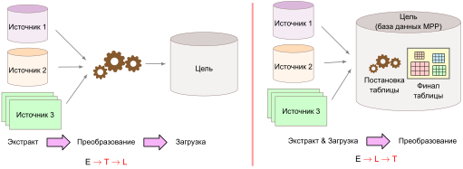
В системах машинного обучения шаблон ELT разделяет пропускную способность приёма данных и последующую инженерию признаков, записывая сырые неизменяемые события непосредственно в масштабируемое хранилище. Сохранение сырых событий позволяет удержать неразобранные поля, которые могут впоследствии оказаться полезными, поэтому команды могут вычислять новые признаки по историческим данным, не принимая повторно внешние потоки-источники. Когда меняется логика преобразования или обнаруживается ошибка, инженеры пересчитывают признаки, выполняя запросы к сохранённым сырым событиям, а не воспроизводя журналы выше по течению. Цена — физическая и эксплуатационная: сырые события занимают больше хранилища, общие преобразования повторяют свою работу, пока их результаты не материализованы, а хранение неочищенных сырых данных затрудняет применение правил приватности и хранения (retention). Ноутбук 4.4 оценивает эти компромиссы на ежедневной рабочей нагрузке из потока кликов и обнаруживает, что ответ зависит от одного учётного решения: должен ли ELT хранить собственную сырую копию в хранилище данных.
Инженерный расчёт 4.4: Стоимость размещения преобразования
Задача: Команда ежедневно обрабатывает 10 TB сырых данных потока кликов и должна вычислить признаки пользовательских сессий для 3 моделей машинного обучения, каждой из которых требуются свои окна агрегации (1 час, 24 часа, 7 дней). Что дешевле — ETL или ELT?
Учётная граница: Обе архитектуры обслуживают одни и те же окна агрегации и хранят одни и те же воспроизводимые сырые журналы выше по течению в течение 30 days, так что общее хранение и связанные с ним затраты на приём данных выпадают из сравнения. ETL сохраняет в хранилище данных только производные признаки — около 2 TB на модель; ELT также хранит там собственную сырую копию — как в случае, когда хранилище данных не может выполнять запросы к журналу-источнику напрямую — и вычисляет признаки по требованию.
Расчёт:
- Подход ETL: Преобразование перед загрузкой. Все три окна агрегации вычисляются в кластере Spark (группе машин, выполняющих распределённый движок обработки данных) до загрузки в хранилище данных.
- Вычисления Spark: 10 TB по $5/TB = $50/day
- Хранение: 3 преобразованных наборов данных, ~2 TB каждый = 6 TB по $23/TB/month = $138/month
- Изменение определения признаков: воспроизвести сохранённые исходные журналы и перезапустить конвейер — предположительно ~4 hours машинного времени после правки. Две архитектуры выражают эту стоимость изменения в разных единицах (здесь машинные часы, ниже минуты редактирования), поэтому сравнение оставляет её без количественной оценки
- Подход ELT: Сначала загрузка сырых данных, преобразование в хранилище.
- Хранение: 10 TB сырых данных в день, срок хранения 30 days = 300 TB по $23/TB/month = $6,900/month
- Вычисления запросов: 3 моделей, каждая с $5/query ежедневных затрат на запросы в течение 30 days, в сумме $450/month
- Изменение определения признаков: переписать SQL-запрос (~30 minutes времени редактирования), затем выполнить его и проверить по сохранённой сырой копии; время выполнения не задаётся
Системный вывод: ETL экономит $6,762/month на хранении. После приведения вычислений Spark к месячной стоимости ETL в сумме стоит $1,638/month ($1,500/month вычисления + $138/month хранение), тогда как ELT — $7,350/month ($6,900/month хранение + $450/month вычисления запросов), что даёт преимущество по затратам на облако в размере $5,712/month до учёта инженерного труда. Другая статья расходов — изменение определения признаков; справедливое сравнение измеряет её как прошедшее время от начала правки до проверенного результата, готового в виде признаков, в каждой из архитектур, причём время инженера на редактирование, наблюдение и валидацию учитывается отдельно. Стабильные определения благоприятствуют более низкому счёту за облако у ETL в этом сценарии; частые изменения благоприятствуют ELT, только если измеренная экономия труда и пересчётов окупает дополнительную сырую копию.
Поскольку в данном случае счёт ELT определяется хранением сырых данных, а не вычислениями, озёрный дом (lakehouse), который выполняет запросы хранилища данных непосредственно к сохранённым файлам, может перевернуть сравнение, запрашивая сохранённые журналы на месте вместо хранения второй копии.
Производственные ML-системы редко используют один шаблон в чистом виде. Структурированные таблицы часто проходят через ETL ради эффективности и соответствия требованиям, тогда как неструктурированные данные усиливают предпочтение ELT. Для рабочих нагрузок глубокого обучения, обрабатывающих изображения, аудио или текст, шаг «Transform» часто выполняется внутри загрузчика данных ML-фреймворка, а вовсе не в хранилище данных, применяя случайные кропы, построение спектрограмм или токенизацию текста на лету в течение каждой эпохи обучения (одного полного прохода по обучающим данным). Материализация десяти аугментированных вариантов выше по течению увеличила бы набор данных из 50,000 изображений до 500,000 сохранённых копий, поэтому принцип ELT «загрузи сырым, преобразуй позже» естественным образом распространяется и на сам цикл обучения.
Какой бы шаблон ни принимал записи, интеграция разнородных источников остаётся ключевой задачей приёма данных. Данные могут поступать из баз данных, API, файловых систем и устройств Интернета вещей, каждое со своим форматом (реляционные строки, документы JavaScript Object Notation (JSON)7, бинарные потоки), протоколом доступа и частотой обновления. Системный принцип состоит в стандартизации на границе приёма: нормализовать форматы, проверять схемы и представлять единообразный интерфейс для последующей обработки независимо от источника. Такая стандартизация границы отделяет сложность многообразия источников от сложности инженерии признаков, позволяя каждой развиваться независимо.
В конвейере детектора ключевых слов приём данных на серверной стороне принимает активированные запросы (аудио, которое устройство отправляет после пробуждения), диагностические фрагменты с согласия пользователей, краудсорсинговые записи, синтетические данные и журнализованные взаимодействия с устройством, прошедшие валидацию — для обслуживания и обучения; постоянно идущее аудио, не активировавшее слово пробуждения, остаётся на устройстве. Нормализация форматов и сегментация на фиксированные длительности выполняются как этап ETL до сохранения в оптимизированных для обучения форматах, тогда как аугментация остаётся позднесвязанной в загрузчике, где окупается гибкость ELT, а непарсируемые записи направляются в путь обработки ошибок из Глава 5.5.
Запись, пришедшая вовремя и корректно разобранная, является хорошо сформированной, но «хорошо сформированная» не значит «заслуживающая доверия». Поле может корректно разобраться и всё же нести неверное значение, источник может уйти от распределения, выученного моделью, а метка может оказаться неверной при прохождении всех проверок типов. Решение о том, каким записям можно двигаться дальше, — следующая задача границы.
5.3 Качество через валидацию и мониторинг
Валидация принимает это решение на границе, обеспечивая опору качества там, где дефект дешевле всего остановить, прежде чем он каскадом распространится на признаки, модели и предсказания (Sculley и др. 2015 г.). Остановки структурных дефектов самой по себе недостаточно: в батче краудсорсинговых записей слова пробуждения, где обновление телефонного приложения незаметно вдвое снизило усиление микрофона на 15 процентах фрагментов, каждый файл остаётся валидным аудиофайлом нужной длительности и частоты дискретизации, поэтому проверки схемы проходят, хотя фрагменты значительно тише всего того, что детектор услышит при развёртывании. Обнаружение таких тихих сдвигов требует дополнения проверок схемы статистическим мониторингом по всему батчу.
Проверки на этой границе работают на двух скоростях. Жёсткий сбой — например, источник, прекративший поставку, или батч, не прошедший проверку схемы, — должен немедленно останавливать затронутый путь. Постепенная деградация — например, доля NULL у признака, ползущая с 1 до 5 процентов, растущая доля дубликатов или задержки поставки, превышающие уровень обслуживания (service level), — помечается для расследования. Постепенный вид зачастую опаснее, поскольку он сохраняется днями, прежде чем кто-то обратит внимание. Маршрутизация и эскалация таких оповещений в продакшене — операционная практика, развиваемая в Мониторинг в промышленной эксплуатации.
Оповещения о схеме и задержке выявляют структурные и временные сбои, но сдвиг непрерывной величины требует статистического сравнения с обучающим базовым уровнем. Отслеживание статистических свойств фиксирует, продолжает ли данные для обслуживания отражать обучающее распределение. Вместо простой проверки попадания отдельных значений в заранее заданные диапазоны производственные системы ведут скользящие статистики по операционным окнам. Для непрерывных величин, таких как громкость фрагмента или отношение сигнал/шум, среда мониторинга вычисляет скользящие эмпирические функции распределения, используя непараметрические оценки вроде критерия Колмогорова–Смирнова8, чтобы обнаруживать момент, когда входные данные для обслуживания расходятся с обучающим базовым уровнем. Ноутбук 4.5 разбирает один пример.
Инженерный расчёт 4.5: Обнаружение дрейфа с помощью K-S теста
Сценарий: контроль того, соответствует ли громкость поступающих клипов для wake-word базовой линии обучения
Анализ: применить критерий Колмогорова–Смирнова для сравнения эмпирических функций распределения:
Вычислить CDF: рассчитать кумулятивные функции распределения для обоих наборов данных. При заданной громкости эмпирическая CDF даёт долю выборочных клипов, громкость которых не превышает заданную. Сравнение этих долей при одинаковой громкости показывает, насколько различаются два распределения.
Вычислить статистику
: найти максимальную абсолютную разность между CDF. Пусть и — эмпирические кумулятивные функции распределения базовой линии обучения и текущего обслуживания , вычисленные в точке . Определить значимость: для двух независимых выборок сравнить
с критическим значением , зависящим от размера выборки базовой линии обучения и размера выборки обслуживания . Коэффициент 1.36 — аппроксимация для больших выборок на уровне значимости , что означает: если обе выборки взяты из одного распределения, максимальная разность, превышающая критическое значение, возникает случайно примерно в 5 процентах случаев. Результат: при размерах выборок критическое значение составляет примерно 0.061: Наблюдаемая максимальная разность превышает критическое значение, поэтому разрыв такого размера вряд ли является шумом выборки, и тест сигнализирует о дрейфе.
Системный вывод: тест на дрейф полезен только тогда, когда превышение порога запускает расследование или процедуру переобучения, а не превращается в ещё одну цифру на дашборде.
K-S тест сравнивает один непрерывный признак в одном батче с базовой линией, и это лишь один из нескольких показателей дрейфа. Операционный мониторинг повторяет такие сравнения на протяжении месяцев, добавляет статистики, работающие на биннированных распределениях, и разделяет типы сдвигов, которые они выявляют (Глава 12.1).
Категориальные признаки требуют иных статистических подходов. Вместо сравнения непрерывных распределений системы мониторинга отслеживают распределения частот категорий. Когда появляются новые категории, которых никогда не было в обучающих данных, или когда относительные частоты существующих категорий существенно сдвигаются, система сигнализирует о потенциальных проблемах качества данных или о реальных сдвигах распределения. Например, доля записей с одного конкретного телефона может резко вырасти после его выпуска. Статистический мониторинг такого рода выявляет проблемы, которые полностью пропускает валидация схемы, хотя лишь проверки результатов (outcome checks) устанавливают, изменилось ли качество.
Запуск одновременно покомпонентных правил схемы и распределённых статистических проверок без остановки приёма данных требует разделения валидации на синхронный и асинхронный пути. Валидация схемы выполняется синхронно по мере поступления данных в конвейер, немедленно отбраковывая некорректные записи до того, как они распространятся вниз по потоку. Современные инструменты вроде TensorFlow Data Validation (TFDV) (Breck и др. 2019 г.) автоматически выводят такие базовые схемы из обучающих данных, фиксируя ожидаемые типы данных, диапазоны значений и требования присутствия.
Эта синхронная валидация остаётся простой и быстрой: она проверяет свойства, вычисляемые на отдельных записях за микросекунды. Более сложная валидация, требующая сравнения данных обслуживания с распределениями обучающих данных или агрегации статистик по многим записям, должна выполняться асинхронно, чтобы не блокировать конвейер приёма. Системы статистической валидации обычно сэмплируют 1–10 процентов трафика обслуживания — этого достаточно для обнаружения значимых сдвигов и позволяет избежать вычислительных затрат на анализ каждой записи. Эти выборки накапливаются в скользящих окнах, обычно в одночасовых, 24-часовых и недельных, причём разные окна выявляют разные паттерны. Часовые окна обнаруживают внезапные сдвиги — например, переключение источника данных на резервный с иными характеристиками, — а недельные окна выявляют постепенный дрейф пользовательских популяций или поведения.
Асинхронные сравнения также ловят skew между обучением и обслуживанием, при котором обучение и обслуживание вычисляют один и тот же признак по-разному, и модель получает входы, не похожие на те, на которых она училась. Обнаружение означает пропуск выборки сырых данных обслуживания через оба конвейера и сравнение результатов (Глава 7.1). Ни одна из этих проверок — схемы, распределений или паритета — не защищает систему, если она живёт только в исследовательском ноутбуке; чтобы охранять границу непрерывно, проверки должны быть версионируемы и исполняться как код.
↩︎ Skew между обучением и обслуживанием, как один из способов отказа ML-систем без выдачи ошибок, рассматривается в Когда МЛ-системы выходят из строя незаметно.
↪ Проверки развёртывания, сравнивающие распределения признаков обучения и обслуживания и блокирующие релиз при их расхождении, рассматриваются в Выявление рассогласования в CI/CD.
5.4 Качество данных как код
Статистическая проверка — такая, что ловит вдвое заниженное усиление микрофона, — защищает конвейер только при выполнении на каждом батче, поэтому продакшен-команды записывают такие проверки в виде кода. Тесты ожиданий данных — это аналог юнит-тестов для данных. В подходе «качество данных как код» инженеры используют декларативные библиотеки вроде Great Expectations или Pandera, чтобы выражать контракты данных как исполняемые наборы тестов, выполняемые на стадиях конвейера. Deequ, созданный в Amazon, сформулировал ту же идею как юнит-тесты для данных и показал, что она масштабируется на очень большие наборы данных (Schelter и др. 2018 г.).
Запуск этих наборов ожиданий внутри конвейера непрерывной интеграции и развёртывания (CI/CD) автоматически проверяет каждый принятый батч и останавливает последующее обучение при нарушении контракта. Конвейер, устроенный как «приём данных → валидация данных → обучение», блокирует развёртывание, когда валидация обнаруживает аномалию — например, батч wake-word клипов, записанных на 8 кГц в конвейере 16 кГц, — и поднимает алерт для расследования. Исполнимые ожидания ловят свойства, которые набор тестов может формализовать; оставшийся вопрос — что ещё может оказаться неправильно во внешне корректных данных.
Системный взгляд 4.1: Механическое и семантическое качество
В традиционном программном обеспечении многие проверки механические. Проверка типов отклоняет строку, переданную там, где ожидается целое число, — и никому не нужно объяснять, что означает это значение.
В ML-системах качество данных имеет и семантическое измерение.
- Механическая проверка: валидирует ограничения схемы и типов — например, что
ageявляется ненулевым целым числом. - Семантическая проверка: валидирует дрейф распределения и статистические инварианты — например, что среднее или дисперсия
ageне сдвинулись неожиданно.
Набор данных может быть механически безупречным (нет null’ов, типы корректны), но семантически сломанным (например, все пользователи внезапно стали 25-летними из-за изменения значения по умолчанию). Надёжные ML-системы должны валидировать и контейнер (механику), и содержимое (семантику).
Когда валидация становится кодом, наборы ожиданий превращаются в версионируемые артефакты рядом с обучающим кодом. При изменении обучающего кода обновления ожиданий позволяют контрактам данных эволюционировать вместе с ним. Эта связка снижает риск тихого расхождения, при котором код предполагает свойства данных, которые восходящий конвейер уже не предоставляет; Список 1 демонстрирует этот паттерн, задавая явные ограничения на диапазоны столбцов, отсутствие null’ов, уникальность и категориальные множества.
import great_expectations as gx
# Create a data context
context = gx.get_context()
# Define an expectation suite as executable quality contract
suite = gx.ExpectationSuite(name="user_data_quality")
suite = context.suites.add(suite)
# Range validation: prevents physiologically impossible values
suite.add_expectation(
gx.expectations.ExpectColumnValuesToBeBetween(
column="age", min_value=0, max_value=120
)
)
# Null detection: ensures primary key integrity for joins
suite.add_expectation(
gx.expectations.ExpectColumnValuesToNotBeNull(column="user_id")
)
# Uniqueness: prevents duplicate training examples
suite.add_expectation(
gx.expectations.ExpectColumnValuesToBeUnique(column="user_id")
)
# Categorical validation: detects unexpected values from upstream changes
suite.add_expectation(
gx.expectations.ExpectColumnDistinctValuesToBeInSet(
column="country_code",
value_set=["US", "CA", "UK", "DE", "FR"],
)
)
# Link the suite to a preconfigured Batch Definition and run validation
# (the Batch Definition connects GX to the training_users data asset)
validation_definition = gx.ValidationDefinition(
name="training_users_validation",
data=batch_definition,
suite=suite,
)
validation_definition = context.validation_definitions.add(
validation_definition
)
results = validation_definition.run()
if not results.success:
raise ValueError(f"Data quality check failed: {results}")Эти проверки ловят многие проблемы продакшен-данных на уровне схемы до того, как они дойдут до обучения: пропущенные значения, недопустимые диапазоны, ошибки типов и нарушения контрактов. Однако отбраковка плохих записей — лишь половина работы границы; сам конвейер также должен оставаться работоспособным, когда отказывают восходящие зависимости или формат меняется посреди запуска.
5.5 Надёжность через плавную деградацию
Если валидация обеспечивает столп качества на уровне отдельных записей, то столп надёжности управляет тем, что происходит, когда восходящий сервис падает посреди запуска приёма данных. Он также управляет тем, что происходит, когда поле даты переключается с "YYYY-MM-DD" на "MM/DD/YYYY", не задев простой строковый чек, или когда всплеск трафика исчерпывает память воркеров на пиковой нагрузке. Плавная деградация (graceful degradation) означает заблаговременное планирование таких отказов и автоматическую их обработку, чтобы система продолжала работать в деградировавших условиях, а не падала и не тихо портила входы модели.
В конвейерах приёма данных регулярно повторяются три вида отказов. Дрейф формата и кодировки — например, та самая переформатированная строка даты — проскальзывает мимо проверок типов, ломая логику признаков, построенную на датах. Эволюция схемы9 происходит, когда восходящие производители добавляют поля, переименовывают столбцы или меняют типы значений, не согласовывая это с потребителями ниже по потоку. Исчерпание ресурсов нарастает медленнее: объём данных превышает выделенную мощность, после чего задания начинают отказывать в пиковый трафик. Защиты строятся по тому, как отказ проявляется, а не по его причине. Кратковременный отказ восходящего сервиса или пик, на мгновение исчерпавший мощность, проявляются как преходящие ошибки. Дрейф формата и неанонсированные изменения схемы проявляются — если что-то их ловит — как отдельные записи, не прошедшие обработку. Упавший надолго восходящий сервис проявляется тем, что каждый вызов к нему отказывает.
Преходящие ошибки повторяются с экспоненциальной задержкой (exponential backoff) (сначала секунда, потом две, потом четыре), чтобы повторы не заваливали сервис, пытающийся восстановиться. Записи, которые не прошли после всех повторов, попадают в очередь недоставленных сообщений (dead-letter queue, DLQ) — побочное хранилище, удерживающее записи, не прошедшие обработку, чтобы они не блокировали основной конвейер и не исчезали (Kleppmann 2016 г.). Регулярный разбор очереди превращает её из пассивного хранилища ошибок в источник диагнозов: её содержимое вскрывает нарушения схемы, указывающие на изменения выше по потоку, граничные случаи, которые модель должна обрабатывать, и проблемы качества данных, требующие исправлений в исходных системах. В конвейере KWS маршрутизация неудачных или неразбираемых аудиозаписей в очередь анализа вместо их отбрасывания вскрывает новые ревизии оборудования, чьё аудио приходит в неожиданной кодировке, и недопредставленные акустические условия, требующие целевого сбора данных в будущих итерациях модели.
Когда отказывает вся зависимость, а не отдельные записи, в ход вступает автоматический выключатель (circuit breaker) (Nygard 2007 г.): после нескольких последовательных неудач он прекращает вызовы и либо быстро отказывает (fail fast), либо уходит по резервному пути, пока пробный запрос не завершится успехом. Один отказавший признаковый сервис, таким образом, не заставляет каждого вызывающего ждать его таймаутов. ML-специфичная часть восстановления — это именно резервный путь.
Даже конвейеру на одной машине нужна явная политика на случай недоступного источника: выбор между ожиданием свежих данных, обслуживанием валидированного резервного варианта с устаревшими признаками и отклонением запроса. Многоуровневые системы резервирования реализуют средний вариант, предоставляя деградировавший сервис при отказе основных источников данных, используя кэшированные или приближённые признаки только тогда, когда их возраст и качество удовлетворяют валидированному резервному контракту. Рекомендательная система, не способная вычислить предпочтения пользователя за последние 30 дней, может откатиться к предпочтениям за 90 дней, если оценка подтвердила приемлемое качество рекомендаций с этим представлением. Допустимый возраст признаков и контракт на качество модели определяют, какой ответ безопасен, и одно лишь долговременное буферизование не делает старые входы пригодными для инференса. Если ни один резервный вариант не удовлетворяет контракту, система ждёт свежих данных или отклоняет запрос.
Когда приём данных, валидация и эти обработчики ошибок на месте, граница пропускает корректно сформированные и проверенные записи. Но они всё ещё ничего не говорят о своём смысле. Wake-word запись, прошедшая все проверки, ещё не утверждает, какое слово было произнесено и где в клипе оно начинается и заканчивается.
6 Разметка данных
Краудсорсинговый разметчик ошибочно распознаёт прошептанное «Alexa» как фоновый шум, или два рентгенолога расходятся во мнениях о пограничном снимке — и каждый последующий шаг обучения и каждая метрика оценки трактуют полученную метку как определение правильного ответа. В конвейере KWS каждому из миллионов верифицированных записей требуется это недостающее утверждение, включая метку для каждого клипа, содержащего только фоновый звук. Это объявление является истинным значением (ground truth),10 и его получение в масштабе — часто наиболее зависимый от человека и наиболее подверженный ошибкам этап конвейера.
Если данные — это код системы, то ground truth — это её спецификация. Каждая последующая проверка обученной модели сравнивается с ней, поэтому ошибка разметки не остаётся в одном этапе; она переопределяет, что считается правильным. Спецификация при этом появляется поздно: программный проект начинает работу со своей спецификации, тогда как конвейер данных присоединяет ground truth только после загрузки данных — именно поэтому ошибка разметки проходит мимо всех проверок, выполненных до неё.
В отличие от автоматизированных преобразований, которые можно распараллелить по машинам, разметка вводит человеческое суждение в цикл, поэтому метки требуют непредсказуемого времени и содержат человеческие ошибки. Расхождения между разметчиками могут отражать подлинную неоднозначность входных данных, неясные инструкции, небрежность или различия в квалификации; система разметки должна разделять и учитывать эти причины, а не трактовать любое расхождение как неустранимое. Следовательно, инфраструктура разметки должна балансировать между пропускной способностью, верификацией качества, стоимостью и прослеживаемостью происхождения данных.
6.1 Типы меток и требования к системе
Гранулярность меток — от одного класса на весь вход до одного класса на каждый пиксель — определяет, во что обходится хранение, перемещение и производство каждой метки. Метка распознавания ключевых слов (keyword spotting) находится на грубом конце этого диапазона. Система камеры, отслеживающая транспортные средства, пешеходов и дорожные знаки, находится на детальном конце, и каждый шаг в эту сторону накладывает особые ограничения на хранение, вычисления и сериализацию.
Метки классификации представляют собой простейшую форму: дискретный индекс класса (или бинарная битовая маска для мульти-меток) для каждого входа. Требования к хранению скромные — обычно целое число фиксированной ширины (например, индекс uint16 или int32) на изображение. Метка распознавания ключевых слов относится к этому типу. Каждый односекундный клип несёт единственный индекс класса, называющий ключевое слово, которое он содержит, либо зарезервированный индекс для отсутствия ключевого слова. Сама метка крошечная. Инженерная нагрузка лежит выше по течению — в определении того, где каждый клип начинается и заканчивается внутри более длинных записей; к этой проблеме возвращается Глава 6.6.
Ограничивающие рамки (bounding boxes) выходят за пределы классификации, локализуя объекты внутри каждого кадра. Каждая ограничивающая рамка хранит четыре координаты (например,
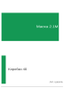
Более детальная гранулярность разметки многократно увеличивает масштаб хранения и обработки.
Карты сегментации назначают идентификатор класса каждому пикселю, образуя плотные двумерные матрицы меток (
Гранулярность разметки варьируется от грубых тегов сцен и подписей до пространственных ограничивающих рамок, плотных пиксельных масок и расшифровок аудио (Рисунок 11). Классификация может маркировать целую сцену, тогда как ограничивающие рамки и карты сегментации локализуют объекты или области. Промышленные датасеты могут совмещать форматы: один кадр с камеры может нести метку сцены, рамки препятствий и маски областей проходимости пути, причём каждый тип метки обслуживает отдельную последующую задачу.
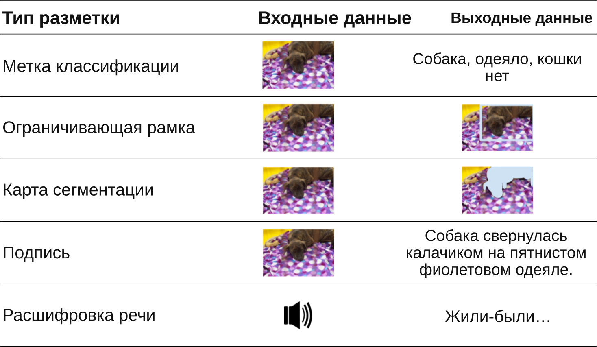
Промышленные системы также должны управлять метаданными для контроля качества и отладки. Датасет Common Voice (Ardila и др. 2020 г.) демонстрирует это в распознавании речи: отслеживание демографических данных говорящих для обеспечения справедливости, метрик качества записи для фильтрации и языковой информации для поддержки мультиязычности. Если модель детектирования объектов отказывает в дождливых условиях, метаданные о погоде, собранные в ходе сбора данных, точно указывают на пробел в покрытии. Таким образом, тип метки формирует всю систему: инфраструктура должна оптимизировать хранение для выбранного формата, реализовать паттерн извлечения, необходимый каждой фазе (конвейеры обучения случайным образом перемешивают и сэмплируют данные, тогда как конвейеры валидации читают корпус последовательно, что требует разных стратегий индексирования и локальности кэша), и отслеживать, какие версии модели использовали какие версии меток, чтобы соотносить улучшения качества с ростом производительности.
6.2 Экономика разметки
Гранулярность меток задаёт стоимость каждой метки, а метки обычно являются самой дорогой частью датасета. Разметка одного медицинского изображения может на порядки стоить дороже его хранения в течение года. Таблица 3 и Таблица 4 дают датированные справочные стоимости и длительности разметки наряду с операциями хранения, вычислений и обслуживания моделей, с которыми она конкурирует; инженерам ML следует использовать эти датированные справочные допущения как входные данные для сравнений, специфичных для конкретной рабочей нагрузки, а не как актуальные ценовые предложения или напрямую сопоставимые итоги.
| Операция | Стоимость | Примечания |
|---|---|---|
| Краудсорсинговая метка изображения | $0.01–0.05 | Простая классификация |
| Аннотация ограничивающей рамки | $0.05–0.20 | За рамку, простые сцены |
| Экспертная медицинская метка | $50–200 | За исследование, рентгенолог |
| Хранение S3 (Standard) | $23/TB/month | Горячее хранилище |
| Извлечение S3 (Glacier) | $0.02/GB | Standard: 3–5 часов |
| Час обучения на облачном GPU | $2–4 | Облачные spot-цены |
| Час человеческой проверки | $15–50 | В зависимости от квалификации |
Помимо удельных долларовых ставок, разметка, обучение и обслуживание моделей также работают в совершенно разных масштабах времени (Таблица 4). Сравнение этих длительностей показывает, почему человеческая аннотация управляет сроками проекта так же сильно, как и его бюджетом.
| Операция | Длительность | Узкое место |
|---|---|---|
| Разметка 1 млн изображений (краудсорсинг) | 2–4 weeks | Пропускная способность аннотирования |
| Обучение ResNet-50 на ImageNet | 1.3 hours | Вычисления (8 |
| Поиск в хранилище признаков (feature store) | 1–10 ms | Сеть + кэш |
Операционные масштабы времени на этих стадиях расходятся на порядки величины: недели для человеческой аннотации, часы для обучения на GPU, миллисекунды для поисковых операций при обслуживании моделей. Для описываемого этими двумя таблицами конвейера классификации изображений, который размечает миллион изображений, а затем обучает на них ResNet-50, аннотирование — критическое узкое место как по деньгам, так и по времени. Предположим, команда закладывает $100K на разметку — достаточно, чтобы покрыть краудсорсинговые метки плюс проходы проверки и повторной разметки, которые требуются для контроля качества. Этот бюджет многократно превышает $20–$40 одного цикла обучения ResNet-50 на 8
Расходы на разметку также распределены неравномерно. Чёткие изображения проходят проверку один раз, тогда как редкие классы, перекрытые объекты и неоднозначные сцены возвращаются для повторных мнений и экспертного арбитража; в качестве иллюстративного планового распределения 80 percent бюджета может уходить на самые трудные 20 percent примеров.
Все стоимостные цифры отражают приблизительные тарифы облачных провайдеров 2024 года и предназначены для передачи относительных величин, а не точного ценообразования.11 Для этой рабочей нагрузки и ценовой модели человеческий труд доминирует в стоимости одного цикла обучения. Другие задачи, особенно те, что повторно используют существующие метки или требуют многократного крупномасштабного обучения, могут иметь иной доминирующий член; командам следует измерять, прежде чем решать, что оптимизировать. Там, где доминируют метки, каждая ошибка разметки оплачивается дважды: один раз при покупке метки и второй раз — когда модель учится на ней.
6.3 Точность меток и консенсус
Часть этих ошибок неизбежна. Даже при ясных руководствах и тщательном проектировании системы субъективность и неоднозначность сенсоров оставляют ненулевую долю испорченных меток (Northcutt и др. 2021 г.; Thyagarajan и др. 2022 г.). Поэтому качество меток означает ограничение шума меток, а не его устранение — путём систематического измерения согласованности между разметчиками и управления уровнем ошибок, чтобы удерживать его в пределах, не деградирующих качество модели.
Бенчмарки показывают, насколько велика эта остаточная погрешность даже после тщательной курирования. Рисунок 12 демонстрирует долю ошибочных меток в тестовых наборах, обнаруженную Northcutt и др. (2021 г.) в десяти широко используемых датасетах. Около 5.8 percent меток валидационного набора ImageNet неверны, у CIFAR-100 доля сопоставима, а для QuickDraw, метки которого получены в значительной мере автоматизированном процессе сбора, она достигает 10.1 percent. С аудио дела обстоят лучше, но в AudioSet тоже встречаются неверные метки — тот же вид отказа, с которым сталкивается краудсорсинговый корпус данных для wake-word. Именно эти метки определяют рейтинг опубликованных моделей, поэтому доля ошибок в несколько процентов способна переставить местами таблицу лидеров, у которой верхние позиции различаются меньше, чем на эту величину.
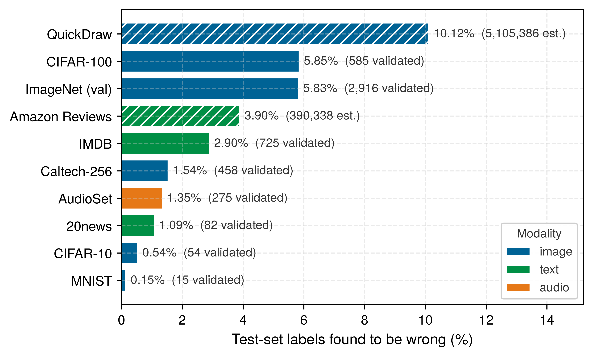
Ошибки разметки возникают из двух различных источников, требующих разных инженерных решений. В примерах из бенчмарков, собранных на Рисунок 13 — включая чёрного аиста из ImageNet, ошибочно помеченного как белый аист, и лягушку из CIFAR-10, ошибочно помеченную как кошка, — каждая панель противопоставляет ошибочно присвоенную метку проверенной эталонной истине. Часть примеров связана с деградировавшими или неоднозначными входами, где правильную метку трудно вывести из одних лишь данных; другие примеры визуально однозначны, но требуют для корректной разметки предметных знаний, семантики конкретного датасета или экспертного суждения. Эти разные режимы отказа определяют архитектурные решения о квалификации разметчиков, маршрутизации задач и механизмах достижения консенсуса: ошибки, вызванные качеством данных, требуют восходящей фильтрации данных, а ошибки, связанные с экспертизой, — многоуровневой маршрутизации разметчиков. Корпуса wake-word демонстрируют оба случая. Обрезанное или прошептанное «Alexa», которое ни один разметчик не может расслышать, — это проблема качества, отфильтровываемая до разметки; тогда как почти омофон вроде «Alexis» разрешается только с помощью рубрики с каноническими примерами и обученного ревьюера.
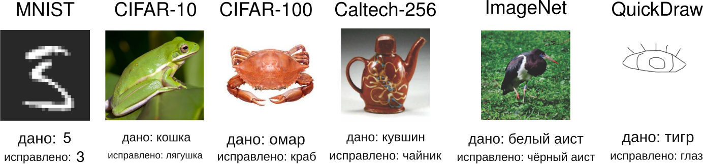
Учитывая эти неотъемлемые проблемы качества, производственные МЛ-системы реализуют несколько уровней контроля качества. Систематические проверки качества непрерывно контролируют конвейер разметки посредством случайной выборки размеченных данных для экспертного обзора и статистических методов, помечающих потенциальные ошибки. Инфраструктура должна эффективно обрабатывать эти проверки на миллионах примеров, не создавая узких мест. Стратегии выборки обычно валидируют 1–10 процентов меток, балансируя чувствительность обнаружения и стоимость проверки. В приложениях с повышенным риском, таких как медицинская диагностика или автономные транспортные средства, может валидироваться 100 процентов меток через несколько независимых обзоров, тогда как в менее ответственных приложениях, вроде рекомендаций товаров, может проверяться лишь 1 процент выборочными проверками.
Помимо подходов со случайной выборкой, сбор нескольких меток для одного объекта данных, часто называемый «консенсусной разметкой», помогает выявлять спорные или неоднозначные случаи. Коммерческие платформы разметки предоставляют консенсусные и многоуровневые рабочие процессы контроля качества (Labelbox, Inc. 2024 г.; Scale AI, Inc. 2024 г.), но статистическое ядро здесь — согласие между разметчиками (inter-annotator agreement). Инфраструктура консенсуса собирает несколько меток на каждый пример и измеряет, насколько разметчики согласуются сверх того, что давал бы один лишь случай. Эта поправка важна на несбалансированной задаче: когда большинство клипов не содержат wake word, два разметчика, помечающие почти каждый клип как «none», часто согласуются независимо от того, различают ли они разницу на слух. Для двух разметчиков эту поправку вносит каппа Коэна12
Числитель
Консенсусная разметка обменивает стоимость на качество. Экспертный обзор стоит дороже на пример, чем краудсорсинговая разметка, но принуждение к согласию на неоднозначных примерах путём голосования большинства из неэкспертов может порождать систематически смещённые метки. Маршрутизируя только действительно неоднозначные случаи к экспертам — выявляемые по низкому межразметчицкому согласию или проваленным проверкам по золотому стандарту, — системы балансируют стоимость и качество. Такой многоуровневый подход позволяет экономично обрабатывать миллионы примеров, поддерживая стандарты качества за счёт точечного экспертного вмешательства.
Контроль качества зависит и от человеческого фактора. Эффективная работа с разметчиками требует стандартизированных рубрик разметки с каноническими положительными и отрицательными примерами, каталогов визуальных граничных случаев, автоматизированных механизмов обратной связи, сравнивающих разметчиков с известными записями золотого стандарта, и калибровочных сессий, на которых разметчики разрешают пограничные случаи. Для сложных или предметно-специфичных задач система может реализовать многоуровневые уровни доступа, маршрутизируя сложные случаи к разметчикам с подтверждённой предметной экспертизой. Сам процесс разметки производит сигналы, достойные мониторинга: долю согласия, точность на элементах золотого стандарта и время на одну аннотацию, где слишком быстрые ответы указывают на небрежность, а слишком долгие — на неясные инструкции. Отслеживаемые во времени, те же сигналы показывают, удерживается ли качество меток.
6.4 Дрейф качества меток
Через полгода кампании по сбору wake-word к работе присоединяются новые разметчики без обучения по исходной рубрике и начинают помечать почти-омофоны как валидные wake words, тогда как все распределения аудиопризнаков в мониторах приёма данных остаются неизменными. Этот отказ — дрейф качества меток: постепенное во времени снижение надёжности самих меток, даже когда размечаемые входы не изменились. Мониторинг распределений признаков не может его поймать, потому что признаки не сдвинулись. Краудсорсинговые метки деградируют по мере ротации пула разметчиков, устаревания обучающих примеров или изменения инструкций без соответствующего обновления модели. Автоматические разметчики дрейфуют, когда порождающие их метки вышестоящие модели выходят из исходного рабочего режима. Конвейеры с неявной обратной связью, например рекомендательные системы, трактующие клики как метки, смещаются всякий раз, когда боты, редизайн интерфейса или более исследовательское поведение пользователей меняют смысл клика.
Обнаружение такого дрейфа требует мониторинга согласованности разметки, а не распределений признаков, и меру для этого даёт статистика каппы из Уравнение 1. В описанной выше кампании wake-word отслеживание
Второй сигнал даёт собственная неопределённость модели. Предиктивная энтропия измеряет, насколько размыты предсказания модели, и служит надёжным сигналом неопределённости лишь тогда, когда вероятности откалиброваны, то есть уверенность модели соответствует частоте её правоты (Метрики и пороги оценки). Несогласованные метки её повышают, поскольку модель, обученная на противоречивых примерах, размазывает вероятность по конкурирующим классам. Пусть
Рост предиктивной энтропии указывает на большую неопределённость предиктивного распределения модели, однако тот же сигнал могут вызывать более сложные входы, сдвиг распределения, изменения калибровки или несогласованная супервизия. Поэтому реакция команды зависит от причины, стоящей за сигналом — растёт ли энтропия или падает согласие. Периодические аудиты предметных специалистов на случайной выборке меток выявляют первопричину, когда согласие падает, хотя выборочные проверки покрывают лишь часть потока. Когда эти аудиты сводят падение к неясным инструкциям, переобучение разметчиков устраняет систематические ошибки с малыми затратами; когда же сама задача неоднозначна или высокорискова, консенсусное голосование нескольких разметчиков повышает точность меток, но умножает счёт за разметку. Чтобы удерживать этот счёт в разумных пределах на миллионах примеров, рутинную работу переносят на модели через предразметку с помощью модели (model-assisted pre-labeling), при условии, что вспомогательная модель сама проходит аудит, чтобы её систематические ошибки не стали новой эталонной истиной.
6.5 Масштабирование с разметкой при помощи ИИ
Чисто человеческая разметка слишком медленна и дорога для миллионов примеров, но полностью автоматическая разметка слишком ненадёжна для неоднозначных или критически важных с точки зрения безопасности случаев. Разметка с помощью ИИ разделяет работу между двумя этими режимами: модель обрабатывает рутинные входы или готовит черновые метки, а люди-ревьюеры проверяют неопределённые случаи.
Когда размечать всё вручную слишком дорого, конвейер может либо снизить стоимость прямых меток, либо заменить большую их часть (Рисунок 14). Активное обучение снижает стоимость: оно сохраняет прямые метки от людей, но спрашивает разметчиков только о тех примерах, которые больше всего информировали бы модель. Три альтернативы традиционной супервизии вместо этого заменяют большую часть прямых меток. Полуобучение (semi-supervised learning) объединяет небольшой размеченный набор со структурой в более крупном неразмеченном пуле. Слабая супервизия (weak supervision)13 заменяет ручные метки отдельных примеров программными правилами, написанными предметными экспертами. Перенос обучения (transfer learning) стартует с модели, обученной на родственной задаче, поэтому требуется меньше меток для конкретной задачи. Каждый путь меняет то, за что платит конвейер и что он должен валидировать: соответствует ли неразмеченный пул задаче, точны ли правила разметки, переносится ли чисто предобученное представление.
↪ Полуобучение и самообучение, извлекающие обучающий сигнал из неразмеченных данных, развиты в Обучение на неразмеченных данных.
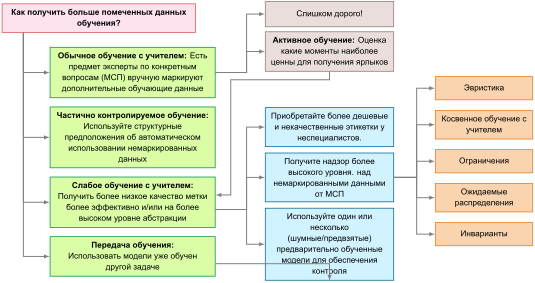
Эти пути обменивают одни предположения на другие, а не просто разное количество меток. В зависимости от пути конвейер опирается либо на относящуюся к задаче структуру в неразмеченных данных, либо на переносимое представление, либо на измеримую точность разметочных функций, либо на доступный по стоимости цикл скоринга. Промышленные системы должны фиксировать каждое из этих предположений и проверять его на отложенных, проверенных людьми данных, поскольку ни один путь не является лучшим в общем случае — он лишь лучше соответствует тем предположениям, которые конкретная задача способна выполнить.
Люди и модели выполняют разную работу: люди оценивают неоднозначные случаи, замечают тонкие ошибки и применяют предметные знания, тогда как модели обрабатывают рутинные случаи в масштабе, но под контролем валидации. Предварительная разметка использует модели ИИ для генерации черновых меток, которые люди затем проверяют и исправляют, превращая задачу из «разметить с нуля» в «проверить и исправить». Программные фреймворки разметки вроде Snorkel (Ratner и др. 2018 г.; Ratner и др. 2017 г.) идут дальше за счёт слабого обучения (weak supervision). Они автоматически и в масштабе генерируют начальные метки с помощью правил-эвристик, баз знаний и выходов уже существующих моделей (например, разметочная функция может с помощью регулярного выражения помечать записи пациентов, содержащие «adverse reaction» — нежелательную реакцию, — как высокорисковые). Для данных wake-word принудительное выравнивание14 или существующий детектор предварительно отмечают, где начинается и заканчивается wake word, а ревьюеры исправляют уже отмеченную границу, а не ищут её.
Большие языковые модели (LLM) теперь помогают конвейерам разметки, составляя черновики меток, руководств по разметке и пояснения, которые проверяют ревьюеры-люди. Их выход по-прежнему требует систематической валидации, поскольку LLM может выдать уверенную, но неверную метку, а стоимость их инференса на каждый вызов должна учитываться в бюджете разметки.
Активное обучение (active learning) реализует дополнительный компромисс: оно тратит инференс модели, чтобы сократить ручную разметку (Settles 2009 г.; Coleman и др. 2022 г.). Вместо разметки случайной выборки из пула неразмеченных данных оно отбирает те примеры, в которых текущая модель наиболее неуверенна или где метка сильнее всего улучшила бы модель. В конвейере KWS активное обучение направляет на ревью людьми клипы, которые текущий детектор оценивает ближе всего к своему порогу — например, квазиомофоны и wake words, произнесённые из дальнего конца комнаты, — а клипы, получившие уверенные оценки, получают автоматические метки, которые ревьюеры выборочно проверяют. Такой подход может существенно сократить требуемое число разметок в благоприятных условиях, хотя он требует тщательной инженерии, чтобы предотвратить петли обратной связи, в которых неуверенность модели искажает выбор данных для разметки. Окупается ли этот компромисс, зависит от того, помещаются ли вычисления скоринга в тот же бюджет, что и метки.
Инженерный расчёт 4.6: Когда активное обучение ломает бюджет
Задача: Пул из 10M изображений имеет бюджет разметки $50K. Метки в этом сценарии стоят $0.50/label, что выше диапазона толпы для простой классификации из Таблица 3 — как для задачи, где метки требуют тщательного ревью. Команда оценивает кандидатов с помощью хостинговой мультимодальной модели по цене $0.01/image; скоринг обучаемой малой моделью стоил бы на порядки меньше, и доминирующей стоимостью остались бы метки. Случайная выборка того размера, который позволяет купить бюджет, достигает точности 85 percent, а целевая точность — 95 percent. Может ли активное обучение достичь цели, не превысив бюджет?
Физика:
- Эффективность по выборке: в благоприятных условиях активное обучение может достичь целевой точности с меньшим числом примеров, чем случайный отбор.
- Стоимость на точку: случайная выборка = $0.50/label. Активное обучение добавляет вычислительную стоимость (~$0.01/image за инференс) для поиска сложных примеров.
- Варианты:
- Случайно: для достижения 95 percent может потребоваться 1M меток ($500K). Бюджет превышен.
- Только активные метки: системе может потребоваться ~100K–200K сложных примеров ($50K–$100K), что достигает или превышает бюджет ещё до каких-либо вычислений скоринга.
- Скоринг всего пула: скоринг всех 10M изображений-кандидатов добавляет $100K, так что полная стоимость активного обучения становится $150K–$200K. Бюджет превышен.
Системный вывод: выбор алгоритма — главный рычаг на количество меток, но вычисления должны быть внутри бюджетной модели. Трата 10 percent этого бюджета на инференс ($5K) при указанной цене инференса позволяет оценить лишь 500K изображений-кандидатов и оставляет место примерно для 90K меток. Активное обучение жизнеспособно, только если пул кандидатов сужается до скоринга, стоимость инференса существенно падает или вычисления финансируются отдельно от разметки. Подходящая конфигурация поэтому сначала фильтрует пул (по метаданным или дешёвой эвристике) до ~500K кандидатов, оценивает их за $5K и тратит остаток примерно на 90K самых неуверенных примеров. Такой план укладывается в бюджет, но покупает меньше меток, чем ~100K–200K сложных примеров, оценённых выше, поэтому он достигает 95 percent только если измерения показывают, что для этой задачи достаточно меньшего числа меток.
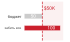
Скоринг всего пула может превысить бюджет разметки ещё до начала разметки.
Активное обучение повышает ценность обучения, которую приносит каждая метка, но скоринг пула сам по себе — это перемещение данных и вычисления, и если эта стоимость относится к тому же бюджету, она может свести выигрыш на нет. Стратегии запросов, решающие, какие примеры оценивать и отправлять на разметку, и итеративный цикл, переобучающий модель на каждой новой партии меток, развёрнуты в Активное обучение.
Какую бы смесь предварительной разметки, составления черновиков LLM и активного обучения ни выбрал конвейер, система должна отслеживать производительность и ИИ, и людей через систематические метрики. Важна калибровка уверенности модели: если ИИ сообщает уверенность 95 процентов, но достигает лишь 75-процентной точности при этом уровне уверенности, предразметка вводит ревьюеров в заблуждение. Доли согласованности человека и ИИ показывают, помогает ли ИИ или мешает: когда люди часто отвергают предложения ИИ, предразметка может вносить систематическое смещение, а не ускорять работу. Эти метрики требуют тщательной инструментализации всего конвейера разметки с отслеживанием как итоговых меток, так и взаимодействия разметчиков-людей и ИИ на каждом этапе.
Домены, критичные к безопасности, доводят тот же паттерн до предела. Инфраструктура разметки для беспилотных автомобилей может обрабатывать большие объёмы сенсорных кадров, используя ИИ-предразметку для обычных объектов и направляя нестандартные сценарии (дорожные работы, машины экстренных служб) к экспертам-людям. Системы медицинской визуализации сталкиваются с параллельной проблемой дефицита меток: крупные репозитории неразмеченных клинических данных делают экспертную разметку узким местом и мотивируют эффективно использующие данные рабочие процессы, которые извлекают полезные представления из неразмеченной структуры до того, как применяются экспертные метки (Krishnan и др. 2022 г.). Во всех этих доменах общий инженерно-датовый паттерн — многоуровневая эскалация: автоматизация обрабатывает ясные случаи, люди — неоднозначные, а мониторинг следит за тем, чтобы граница между «ясным» и «неоднозначным» адаптировалась по мере эволюции возможностей ИИ и условий развёртывания.
6.6 Автоматизированная разметка в KWS
Keyword spotting находится на автоматизированном конце описанной эскалации. Генерация миллионов размеченных примеров wake word без пропорциональных затрат на ручную разметку требует выхода за пределы ручных и краудсорсинговых рабочих процессов. MSWC — референсный корпус, с которого начиналась стратегия сбора данных, — показывает, как автоматизированная разметка решает это узкое место пропускной способности: он был построен программным извлечением свыше 23.4 million examples односекундной речи по 340,000 keywords в 50 languages из корпусов непрерывной речи.
Даже при 10 seconds на метку ручная разметка такого числа примеров потребовала бы приблизительно 65,000 hours, то есть около 32.5 person-years работы на полную ставку, что делает её непрактичной. Конвейер, показанный на Рисунок 15, обходит это узкое место ручной разметки, применяя принудительное выравнивание (McAuliffe и др. 2017 г.) к парам «аудио — транскрипция» для оценки границ слов перед нарезкой отдельных односекундных окон ключевых слов для обучения классификатора.
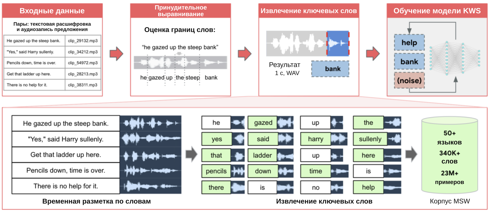
Система извлечения использует эти точные метки времени для генерации чистых примеров ключевых слов. Она также обрабатывает предвиденные инженерные сложности: фоновый шум, мешающий границам слов; растягивание или сжатие слов говорящими за пределы окна от 500 ms до 800 ms, которое конвейер принимает как допустимый клип (экран качества звука, подробно описанный в Глава 7.1); и слова длиннее односекундной границы. Именно автоматизированные проверки качества записи, разборчивости речи и фонового шума делают возможными единые стандарты при таком масштабе — без расходов на ручное ревью, которые сделали бы это непосильным.
При таком масштабе контроль качества не исчезает, а превращается в задачу выборки и провенанса. Широкое документированное происхождение данных может улучшить покрытие, но само по себе количество языков не гарантирует репрезентативности говорящих, акцентов, устройств или акустических сред. Конвейер должен отчитываться о покрытии по языкам, говорящим, акцентам, устройствам и акустическим средам; сохранять для каждого извлечённого клипа исходную запись, версию транскрипции, версию выравнивателя и уверенность границ; и направлять выравнивания с низкой уверенностью и недопредставленные срезы на ревью людьми. Отложенная (held-out) оценка затем должна измерять целевые wake words по этим срезам. Именно эти контроли отличают большой корпус от репрезентативного и позволяют отслеживать ошибки извлечения, когда нижестоящая KWS-модель даёт сбой.
Инженерные команды голосовых ассистентов часто строят свою работу на этом фундаменте автоматизированной разметки. Хотя автоматизированные корпусы могут не содержать конкретных wake words, требуемых продукту, они дают отправные точки для прототипирования KWS, особенно в недостаточно обеспеченных языках, где коммерческих датасетов не существует. Промышленные системы, как правило, добавляют поверх целенаправленную запись и верификацию людьми для сложных случаев (необычные акценты, редкие слова или трудные акустические среды), координируя автоматизированную обработку и человеческую экспертизу. Каждый клип несёт метку, но модель всё ещё не может читать сырой аудиосигнал. Следующий этап превращает размеченные записи в признаки, которые потребляет модель, и вычислять их нужно одинаково — и в тренировочном кластере, и на устройстве.
7 Обработка данных
Детектор ключевых слов обучается на аудиопризнаках, которые вычисляет библиотека на сервере обучения, а работает он на устройстве, где код вычисления признаков написан отдельно для микроконтроллера. Если два этих пути вычисляют одни и те же признаки хотя бы слегка по-разному, развёрнутая модель получает входы, непохожие ни на что из того, на чём она училась, и никакая ошибка при этом не возникает. Обработка не способна добавить данных то, чего в них нет, но способна незаметно отнять то, что в них есть.
Обработка превращает размеченные записи в признаки, потребляемые моделью, и управляет ею согласованность. Преобразования, общие для обучения и обслуживания, должны сохранять идентичную семантику, повторяемые операции при повторе должны давать тот же результат, а работа должна масштабироваться без потери учёта того, что было сделано. В отличие от рефакторинга кода, который обязан в точности сохранять поведение программы, фильтрация или аугментация наблюдений могут изменить саму задачу обучения, поэтому каждое преобразование нуждается в явном контракте, фиксирующем, что оно может изменять и что обязано оставить неизменным.
Несогласованность обучения и обслуживания (training-serving inconsistency) — одна из конкретных форм скрытого технического долга, который выделяют Sculley и др. (2015 г.) в производственных МЛ-системах. В конвейере KWS преобразования должны стандартизировать записи, снятые на разных микрофонах, при разных уровнях шума и частотах дискретизации, сохраняя акустические признаки, отличающие ключевые слова от фоновой речи. Общий код извлечения признаков также должен иметь одинаковую семантику и одинаковое подогнанное состояние на сервере и на устройстве, причём числовые расхождения удерживаются в пределах проверенного допуска.
7.1 Согласованность обучения и обслуживания
Если скрипт обучения стандартизирует признаки по среднему и дисперсии обучающего набора, а сервис обслуживания пересчитывает эти статистики на каждом входящем батче, оба пути исполняют один и тот же код, но подают модели разные числа. Поэтому общего кода признаков между обучением и обслуживанием недостаточно: параметры, обученные на обучающих данных (константы нормализации, словари кодирования, отображения словаря), также должны сохраняться и использоваться при обслуживании. Это требование называется императивом согласованности.
Определение 4.3: Императив согласованности
Императив согласованности требует эквивалентного поведения преобразований и эквивалентного состояния в средах обучения и обслуживания.
- Значимость: Непроверенное расхождение между признаками обучения и обслуживания может изменить фактический вход модели и ухудшить качество предсказаний без ошибки времени исполнения. Поэтому эквивалентная семантика, общее подогнанное состояние и проверенные числовые допуски превращают предобработку в компонент с состоянием, входящий в сам артефакт модели.
- Отличие: В отличие от качества данных, сфокусированного на чистоте отдельной записи, императив согласованности сфокусирован на выравнивании всего конвейера преобразований.
- Типичная ошибка: Частое заблуждение состоит в том, что общий код якобы делает два пути согласованными. Одинаковый код всё равно расходится, когда каждая среда пересчитывает собственные статистики, так что согласованность — это проблема синхронизации состояния.
Нарушение императива незаметно порождает перекос обучения и обслуживания: модель по-прежнему принимает численно корректный вектор, вычисленный по иным правилам, поэтому ни отслеживание исключений, ни мониторинг задержки не регистрируют сбой (Sculley и др. 2015 г.; Baylor и др. 2017 г.).
Определение 4.4: Перекос обучения и обслуживания
Перекос обучения и обслуживания (training-serving skew) — это расхождение распределений между средами обучения и инференса, вызванное несогласованной логикой или состоянием.
- Значимость: Он нарушает императив согласованности и может приводить к незаметной деградации точности, когда преобразования при обучении и обслуживании вычисляют разные признаки из одного и того же сырого входа.
- Отличие: В отличие от дрейфа данных (внешнего сдвига в среде), перекос обучения и обслуживания — это внутренний сбой инженерного стека.
- Типичная ошибка: Частое заблуждение — что перекос «обнаруживается» поиском ошибок. В действительности он не порождает исключений: система работает, задержка остаётся низкой, но предсказания статистически неверны.
Тесты паритета конвейера выявляют расхождение между двумя путями; оценка результата устанавливает его влияние на предсказания. Проектирование в обратную сторону — от ограничений обслуживания — позволяет команде проверять эквивалентную предобработку на целевом устройстве и ограничить числовые расхождения ещё до развёртывания.
Контрольная точка 4.2: Защитная обработка
Перекос обучения и обслуживания — частая причина незаметной деградации в эксплуатации.
Очистка данных — первый этап, на котором обучение и обслуживание могут разойтись. Сырые данные часто содержат пропущенные значения, дубликаты или выбросы, ухудшающие качество модели. Операции очистки должны быть детерминированными и воспроизводимыми: для одного и того же входа они обязаны давать один и тот же результат независимо от среды. Это требование определяет, какие приёмы очистки допустимо применять в эксплуатации.
Очистка данных включает дедупликацию — объединение повторяющихся записей, чтобы они ни завышали вес того, чему учится модель, ни приводили к утечке между разбиениями (Lee и др. 2022 г.), — а также обработку пропущенных значений и нормализацию. В корпусе KWS дедупликация должна ловить не только идентичные файлы. Повторные записи одного спикера ключевого слова — это почти-дубликаты, и они должны оставаться в пределах одного разбиения, иначе оценка измерит запоминание этого голоса, а не обобщающую способность. Правило сопоставления и его порог должны быть зафиксированы в коде, который исполняется одинаково при каждой пересборке набора данных.
Обработка выбросов обнаруживает резкий операционный разрыв между батчевым обучением и онлайн-обслуживанием. Во время обучения конвейер может отбрасывать повреждённые записи или экстремальные сбои датчиков, чтобы несколько плохих значений не доминировали в обновлениях параметров. Во время обслуживания контракт ответа определяет, может ли невалидный запрос быть отклонён, направлен на проверку человеком или отвечён отказом либо просьбой прислать другой образец. Ограничение признаков интервалами (например,
Мониторы валидации в Глава 5.3 проверяют также преобразованные выходы. Рост числа null после соединения, неожиданные дубликаты записей или сдвиг распределения признака могут вскрыть дефект преобразования, даже когда сырые входы прошли свои проверки.15 Сопоставление сырых и преобразованных записей в пределах одной версии конвейера помогает локализовать неисправность до изменения модели.
Валидация качества должна обеспечивать одинаковые схемы и предикаты валидации в конвейерах обучения и обслуживания. Если среда обучения может позволить себе вычислительно затратные проходы профилирования по целым наборам данных, пути обслуживания обязаны выполнять лёгкие проверочные утверждения (валидацию типов, ограничение диапазонов, наличие обязательных полей) в рамках бюджета задержки запроса. Расхождения между валидацией во время обучения и утверждениями во время обслуживания позволяют повреждённым входам незаметно доходить до модели.
↪ Стоимость перекоса обучения и обслуживания, а также общие библиотеки признаков и тесты валидации схем, обеспечивающие паритет обучения и обслуживания, рассматриваются в Императив согласованности.
Техники преобразования переводят данные из сырого вида в пригодное для модели представление, но системный риск кроется в параметрах, которые эти преобразования обучают. Типичные задачи преобразования включают нормализацию и стандартизацию — масштабирование числовых признаков к общему диапазону или распределению. Например, площадь в квадратных футах и число комнат могут сильно различаться по масштабу; нормализация приводит их к сопоставимым числовым диапазонам, хотя их влияние по-прежнему зависит от модели и обученных параметров (Bishop 2006 г.). Поддержание согласованности обучения и обслуживания требует, чтобы параметры нормализации, вычисленные на обучающих данных, сохранялись и применялись идентично при обслуживании. Операционно эти параметры должны сохраняться рядом с самой моделью и загружаться при инициализации обслуживания.
Параметры предобработки подчиняются тому же правилу границы разбиения, что и сами данные (Глава 1). Если среднее и дисперсия или словарь категорий подгоняются по всему набору данных до его разбиения, статистики тестовых примеров затекают в преобразование, через которое обучается модель, и тестовый балл перестаёт измерять обобщение на невиданные данные. Поэтому конвейер подгоняет каждый параметр преобразования только по обучающему разбиению и применяет зафиксированный результат к валидационным, тестовым и обслуживающим входам.
Пути fit и apply на Рисунок 16 разделяют обучение преобразования и его использование. Это различие удерживает отложенные данные вне границы подгонки, делая путь обслуживания воспроизводимым.
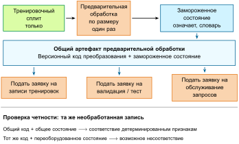
Для детерминированной предобработки, общей для обучения и обслуживания, тесты паритета сравнивают преобразованные признаки одного и того же сырого фрагмента данных под выпущенным кодом и состоянием. Там, где различаются среды исполнения, тесты объявляют числовой допуск.
Помимо числового масштабирования, преобразования переводят дискретные входы посредством категориального кодирования, извлекают циклические представления из временных меток и строят производные пространственные признаки. Категориальное кодирование должно обрабатывать как категории, присутствовавшие при обучении, так и невиданные категории, встречающиеся при обслуживании. Надёжный конвейер строит словарный индекс исключительно по обучающему разбиению, сериализует этот словарь вместе с артефактом модели и отображает неизвестные токены во время исполнения на явный вне-словарный (<UNK>) индекс. Отсутствие этого отображения приводит к несовпадению размерностей или незаметным коллизиям индексов при онлайн-инференсе.
Предметно-ориентированная инженерия признаков превращает сырые входы в представления, которые напрямую открывают информативные сигналы алгоритму обучения (Kuhn и Johnson 2013 г.). Вместо того чтобы требовать от модели самостоятельного открытия нелинейных комбинаций с нуля, инженерные признаки напрямую кодируют предметную структуру. Аудиопризнаки, которые использует детектор ключевых слов и которые описаны далее, сами являются инженерными: они кодируют знания о человеческом слухе, так что маленькой модели не приходится учиться им из данных.
Инженерия признаков может быть высокоэффективным занятием, поскольку она меняет то, какой сигнал видит модель. В некоторых рабочих нагрузках хорошо спроектированные признаки улучшают качество сильнее, чем очередной раунд выбора алгоритма или подбора гиперпараметров. Этот выигрыш нужно соизмерять с требованиями согласованности production-систем. Каждый спроектированный признак, разделяемый обучением и обслуживанием, должен вести себя одинаково в обеих средах. Поэтому production-системы реализуют логику инженерии признаков в общих библиотеках или согласованных конвейерах, а не переопределяют её независимо. Многие организации централизуют такие общие определения в хранилище признаков (feature store) — слое хранения, который определён в Глава 7.5, — чтобы снизить рассогласование между средами.
В конвейере KWS аудиозаписи, собранные у краудсорсинговых участников, синтезаторами речи и в полевых условиях, приходят с широким акустическим разбросом. Сырой аудиоматериал содержит те несовершенства, которые предвиделись при постановке задачи: шум окружающей среды от тихих спален до шумных кухонь, ограничение амплитуды из-за насыщения аналого-цифровых преобразователей, различия усиления между микрофонами разных производителей и несогласованные частоты дискретизации. Достижение целевого показателя детекции 98 percent требует стандартизации этих входов при сохранении коротких речевых переходных процессов, отличающих ключевые слова от фонового шума. Нормализация усиления — особая ловушка. Нормализация каждой сохранённой записи по её собственному пику использует информацию, которой потоковое устройство никогда не располагает: устройство слышит непрерывный звук, а не готовые фрагменты. Поэтому обучающий конвейер применяет только такую обработку усиления, которую устройство может воспроизвести по мере поступления аудио, — например, опорный уровень, однократно подобранный на обучающей выборке и сохранённый вместе с моделью, как любое другое обученное состояние.
Граница между батчевым обучением и потоковым режимом в реальном времени определяет и фильтры качества аудио в KWS. В отличие от нормализации усиления, которая изменяет сигнал и должна совпадать с тем, что выполняет устройство, проверки допуска на фоновый шум (отношение сигнал/шум выше 20 dB), чистоту аудио (анализ частотного спектра) и темп речи (длительность ключевого слова в пределах от 500 ms до 800 ms) отфильтровывают, какие записи попадают в каждый обучающий срез, не меняя путь обслуживания. Конвейер помечает для проверки записи, чей шум, длительность, ограничение амплитуды или искажения выходят за рамки правил допуска сценария. Эти пороги применяются к чистому базовому срезу, тогда как допустимая шумная или необычно растянутая речь остаётся в отдельно размеченном срезе устойчивости (robustness slice) — в соответствии с шумными данными, заложенными в дизайне KWS. Проверка отличает такие примеры покрытия от повреждённых записей, прежде чем отклонить образец, не позволяя дефектам распространяться вдоль дуг, показанных в Рисунок 2.
Для каждой записи, прошедшей эти фильтры, извлечение признаков должно преобразовать сырые волновые формы в пригодные для модели входы, сохраняя согласованность обучения и обслуживания. Сырые аудиоволновые формы (последовательности значений амплитуды, отбираемых тысячи раз в секунду) имеют высокую размерность, поэтому конвейеры KWS преобразуют их в компактные представления, подчёркивающие частоты и временные закономерности, наиболее существенные для речи. Рисунок 17 сопоставляет три представления аудиофрагмента в двухсекундном окне: сырую волновую форму амплитуды, соответствующую время-частотную спектрограмму, выделяющую мощную акустическую энергию около 500 Гц, и компактное приближение с 13 коэффициентами MFCC. Эти стандартизованные представления признаков, как правило MFCC или спектрограммы,16 подчёркивают релевантные для речи характеристики, одновременно снижая шум и вариативность между разными условиями записи.
MFCC достигают такой компактности за два шага после того, как оконное преобразование Фурье (STFT) измеряет, сколько энергии каждый короткий отрезок аудио несёт на каждой частоте. Мел-частотный анализ объединяет эти измерения в несколько десятков полос, разнесённых так, как человеческий слух различает высоту тона, а финальное преобразование сжимает энергии полос в 13–40 коэффициентов. Каждый шаг имеет параметры — например, длину окна, число полос и число коэффициентов, — которые устройство должно воспроизводить в точности. Для периферийных устройств такой конвейер сокращает объём данных более чем на порядок, позволяя кадрам аудиопризнаков уместиться в жёсткие бюджеты в десятки килобайт SRAM встроенных сопроцессоров.
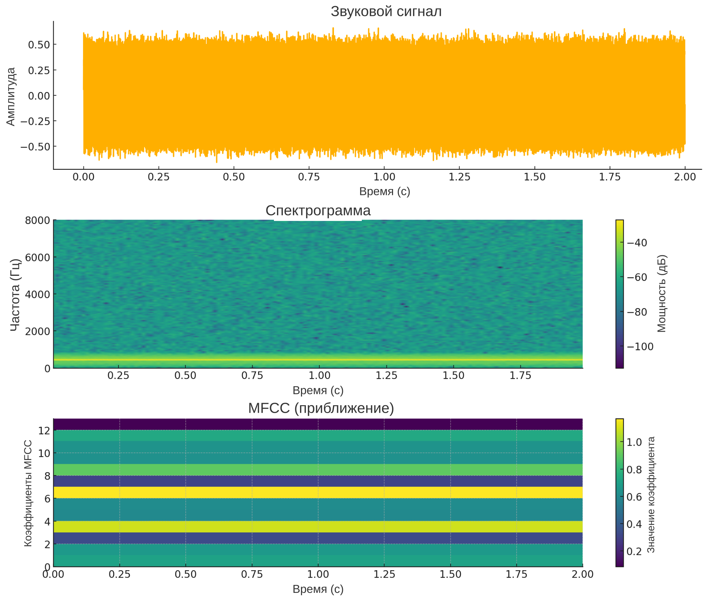
7.2 Размещение вычисления признаков
Предварительное вычисление кадров MFCC один раз при загрузке данных позволяет обучению работать со скоростью диска, но фиксирует любую случайную аугментацию шума или высоты тона, применённую к сырой волновой форме. Вычисление их на лету в загрузчике данных сохраняет каждую эпоху свежей ценой повторения работы и риска простоев ускорителя. Размещение вычисления признаков определяет, какой ресурс платит за признак: хранилище платит, когда признаки материализуются на диске, а вычисления и задержка — когда признаки генерируются по запросу.
Когда признаки предварительно вычисляются в ходе ETL и сохраняются на диске, эпохи обучения читают готовые тензоры, не оплачивая стоимость преобразования при каждом проходе, и каждый запуск потребляет ровно одни и те же значения. Эта скорость и воспроизводимость достигаются ценой занимаемого объёма хранилища и негибкости: производные признаки должны храниться рядом с сырыми данными, а любое изменение логики признаков требует пересчёта всего корпуса прежде, чем следующий эксперимент сможет быть запущен. Вычисление признаков на лету внутри загрузчика данных переворачивает этот компромисс. Поскольку хранятся только сырые данные, а преобразования выполняются при чтении батчей, изменения логики вступают в силу немедленно, а случайные аугментации меняются от эпохи к эпохе. Однако процессор хоста повторяет работу при каждом проходе и может вызвать простой ускорителя, если подготовка не поспевает.
На практике production-системы комбинируют оба подхода. Дорогие, медленно меняющиеся представления — например, высокоразмерные эмбеддинги пользователей (обученные векторы, обобщающие каждого пользователя) или исторические агрегаты за несколько месяцев — предварительно вычисляются офлайн и материализуются в хранилище. Изменчивые лёгкие сигналы — такие как давность сессии, временные метки взаимодействий или клиентская телеметрия — вычисляются динамически в загрузчике данных. Распознаватель ключевых слов показывает, что размещение не является свободным выбором. Чистые признаки каждой записи можно вычислить один раз и сохранить, но аугментация шума должна применяться к сырому аудио до извлечения признаков, поэтому признаки аугментированных фрагментов приходится вычислять в загрузчике при каждом проходе. Такое разделение сопоставляет размещение каждого признака с темпом его изменения, обменивая ёмкость хранилища на задержку исполнения.
7.3 Идемпотентные преобразования
Согласованность и размещение определяют, что производит преобразование и где оно выполняется, что служит опоре качества; опора надёжности спрашивает, может ли это преобразование безопасно выполниться снова после сбоя. Если этап обработки добавляет преобразованные записи в целевую таблицу, а работник отказывает после записи своего вывода, но до подтверждения завершения, автоматический повторный запуск выполнит задание второй раз и запишет дубликаты записей в обучающий набор. Идемпотентность17 предотвращает такое повреждение, гарантируя, что многократное применение операции даёт тот же эффект, что и однократное. Это свойство важно всякий раз, когда задания перезапускаются после отказа узлов, инженеры повторно обрабатывают исторические данные для исправления ошибки или одни и те же записи проходят по нескольким путям. Детерминизм — связанное, но отличное требование: одинаковые входы и зафиксированное состояние должны давать одинаковые выходы.
В терминах конечных автоматов операция
Управление частичными отказами конвейера требует чётких границ состояния между этапами. Разделение этапов с помощью персистентных промежуточных контрольных точек (checkpoint) позволяет перезапускать каждую фазу независимо, не повторяя работу выше по течению. Для длительных заданий, обрабатывающих корпуса размером в терабайты, фиксация прогресса (например, завершённых файловых шардов или достигнутой позиции во входном потоке) ограничивает задержку повтора: отказ задачи после пяти часов исполнения требует воспроизведения только незавершённого шарда, а не перезапуска всего пятого часового задания. Каждая контрольная точка должна записывать вывод и маркер его завершения вместе, чтобы повторный запуск никогда не находил одно без другого и ни одна запись не терялась и не повторялась.
Детерминированные преобразования — это преобразования, которые всегда дают одинаковый выход для одинакового входа без зависимости от внешних факторов: времени, случайных чисел или изменяемого глобального состояния. Преобразования, зависящие от текущего времени (например, вычисление «дней с момента события» на основе текущей даты), нарушают детерминизм, поскольку повторная обработка исторических данных дала бы другие результаты. Решение — явно фиксировать временные точки отсчёта: вместо «дней с момента события» вычислять «дни от события до опорной даты», где опорная дата фиксирована и сохранена. Случайные операции должны использовать генераторы случайных чисел с seed, детерминированно выведенным из входных данных, что обеспечивает воспроизводимость.
Надёжность в конвейере KWS требует воспроизводимого извлечения признаков. Предобработка аудио должна быть детерминированной: по одному и тому же сырому аудиофайлу одни и те же признаки MFCC всегда вычисляются независимо от того, когда происходит обработка и какой сервер её выполняет. Этот детерминизм обслуживает три потребности. Отладка всегда может воссоздать точные признаки проблемного примера; повторная обработка после исправления ошибки даёт согласованные результаты; разные работники распределённого задания выдают идентичные признаки из одного и того же входа. Код обработки фиксирует все параметры — такие как размер окна быстрого преобразования Фурье (FFT), длина шага (hop length, насколько продвигается каждое окно) и число коэффициентов MFCC — в конфигурации, версионируемой вместе с кодом, что обеспечивает воспроизводимость во времени и среди сред исполнения.
7.4 Распределённая обработка
Один сервер с 256 ГБ оперативной памяти способен обрабатывать наборы данных объёмом в несколько терабайтов, если преобразования читают данные из внешней памяти (out-of-core) потоково с диска, а не загружают весь корпус в память целиком, — тогда как наивный скрипт, материализующий промежуточные копии в ОЗУ, упадёт уже на малой доле такого объёма. Поэтому масштабирование обработки данных начинается с исчерпания возможностей эффективности одной машины и лишь затем переходит к издержкам координации кластера, сохраняя семантику преобразований неизменной. Библиотеки, потоково читающие данные с диска и распараллеливающие работу по ядрам, расширяют привычные интерфейсы датафреймов на рабочие нагрузки в несколько терабайтов. Прежде чем вкладываться в инфраструктуру распределённой обработки, командам стоит использовать эффективные форматы данных (Parquet18 вместо CSV), минимизировать выделения памяти, применять векторизованные операции и задействовать многоядерный параллелизм. Операционная простота обработки на одной машине (нет сетевой координации, нет частичных отказов, простая отладка) делает её предпочтительной всюду, где один узел укладывается в срок.
В пределах одной машины распараллеливание загрузки данных по рабочим процессам хост-ЦП даёт убывающую отдачу по пропускной способности всякий раз, когда конвейер ограничивают непараллелизуемые этапы — например, последовательная декомпрессия или захват блокировок центральной базы данных. Закон Амдала ограничивает, насколько ускорение одной части конвейера способно улучшить его в целом. Применительно к числу рабочих процессов на хосте это означает: даже если 90 percent конвейера извлечения признаков распараллеливается по рабочим процессам, ускорение не может превысить 10×. Последовательные этапы сохраняют свою полную длительность независимо от того, сколькими рабочими процессами делится остальная работа, поэтому устранение последовательного ввода-вывода и однопоточных этапов важнее запуска новых рабочих процессов.
↪ Закон Амдала — потолок, который нетронутая часть работы ставит перед любым ускорением, — выводится в Анатомия ускорителя.
Координация между машинами
Когда корпус или число параллельных пересборок признаков перерастает один сервер, обработка переходит границу одной машины в кластер, и меняются три вещи. Локальность данных становится проектным ограничением: сетевой канал перемещает байты несравнимо медленнее, чем узел читает уже размещённый у него шард, поэтому кластерные фреймворки отправляют вычисления к данным, а не данные к вычислениям. Сетевая передача становится доминирующей издержкой любой операции, обменивающейся между машинами полными записями, а не малыми сводками вроде частичных сумм. Координация становится частью самой работы: машины ожидают самого медленного исполнителя и должны восстанавливаться, когда один из них отказывает посреди задания. В этом случае описанные ранее идемпотентные детерминированные преобразования из удобства превращаются в необходимость.
Конвейер KWS пересекает эту кластерную границу лишь тогда, когда множество экспериментов пересобирают признаки одновременно: эталонный корпус помещается на локальное хранилище одного хорошо оснащённого сервера, а рутинная разработка использует обработку на одной машине на выборочных подмножествах для быстрой итерации. Даже когда извлечение признаков распределяется по рабочим процессам, извлечение на уровне отдельных файлов «стыдливо параллельно» (embarrassingly parallel), тогда как сквозное ускорение остаётся ограниченным пропускной способностью общего хранилища, метаданными, операциями планирования и конкуренцией за вывод. На противоположном крае шкалы масштабов продуктивное развёртывание добавляет жёсткий бюджет предобработанного состояния в 16 KB наряду с ограничением размера модели в 256 KB, что требует тщательной оптимизации занимаемого объёма, чтобы извлечение признаков помещалось на устройство.
7.5 Хранилища признаков
Ключевому детектору хранилище признаков не нужно, поскольку его признаки вычисляются на устройстве из одного лишь аудио. Напротив, модель обнаружения мошенничества или рекомендательная модель, чьи признаки происходят из истории пользователя, сталкивается сразу с двумя режимами отказа. В первом сценарии специалисты по данным вычисляют признаки вроде user_purchase_count_30d пакетными SQL-запросами в хранилище данных во время разработки модели. При обслуживании онлайн-микросервис вычисляет ту же метрику инкрементально из кэша в памяти. Мелкие различия в арифметике часовых поясов, обработке пропущенных значений или округлении чисел с плавающей точкой приводят к расхождению офлайн- и онлайн-признаков. Хуже того: если обучающий запрос соединяет историческую транзакцию с текущим профилем пользователя, а не с профилем на момент транзакции, в обучающую выборку просачивается информация из будущего.
Согласованность двух путей означает обслуживание исторических значений признаков для обучения и текущих значений признаков для инференса из единого общего определения. Корректность на момент времени (point-in-time correctness) и общая логика признаков — ключевые операционные требования, побуждающие команды внедрять хранилища признаков (feature stores), которые платформа Uber Michelangelo популяризовала для устранения именно этого класса расхождений обучения и обслуживания (training-serving skew) (Hermann и Del Balso 2017 г.).
Определение 4.5: Хранилище признаков
Хранилище признаков — это архитектурный слой, централизующий управление признаками машинного обучения и отделяющий вычисление признаков от их потребления.
- Значимость: хранилище поддерживает корректный на момент времени исторический поиск для обучения, возвращающий каждый признак в том виде, в каком он существовал при прошлом наблюдении
, и согласованные определения признаков для инференса в реальном времени на текущих признаках , снижая расхождение обучения и обслуживания при корректной обработке временных меток, дозаполнений (backfill), свежести и синхронизации. - Отличие: в отличие от базы данных общего назначения, хранилище признаков рассчитано на два режима хранения: офлайн-хранилище (колоночное/пакетное) для обучения и онлайн-хранилище (ключ-значение/низкая задержка) для обслуживания.
- Типичная ошибка: распространено заблуждение, что хранилище признаков — это лишь «место для хранения данных». В действительности оно управляет определениями, значениями и извлечением признаков; преобразования же могут выполняться в самом хранилище признаков, в офлайн-хранилище или в отдельном пакетном либо потоковом вычислительном движке.
Хранилища признаков устанавливают единый источник истины для определений признаков на всём жизненном цикле ML. Регистрируя определение признака как единого вычислительного графа, хранилище признаков выполняет идентичное преобразование и над историческими пакетными данными, и над потоками живого инференса. Это общее определение устраняет один из источников расхождения обучения и обслуживания, однако эквивалентное исполнение всё ещё требует синхронизированного обученного состояния, корректных временных меток и надлежащей свежести. Эти условия необходимо проверять по обоим путям извлечения. Централизация также даёт организационное переиспользование признаков: дорогие представления, такие как многомерные эмбеддинги пользователей, выведенные из месяцев логов взаимодействий, вычисляются один раз и предоставляются нескольким командам моделирования ниже по течению.
↪ Как хранилища признаков эксплуатируются в продакшене, включая поиск на момент времени и предотвращение расхождения обучения и обслуживания в масштабе, описано в Хранилища признаков.
Для обслуживания обоих паттернов доступа хранилища признаков объединяют два движка хранения. Офлайн-хранилище держит колоночные форматы (такие как Parquet) на объектном хранилище — высокоёмком сетевом сервисе, хранящем целые файлы под ключами, — и настроено на многогигабайтные последовательные сканирования во время пакетного обучения. Онлайн-хранилище использует низколатентные базы ключ-значение (такие как Redis), оптимизированные для точечных выборок менее чем за 10 миллисекунд при инференсе в реальном времени. Автоматизированные конвейеры синхронизируют оба движка: пакетно вычисленные срезы признаков выталкиваются в онлайн-хранилище, а потоковая загрузка непрерывно обновляет оба хранилища по мере поступления новых пользовательских событий.
Запросы путешествия во времени отделяют настоящее хранилище признаков от простого кэша. Обучение требует вычисления признаков в точности на момент события, а не их текущих значений. Например, в модели оттока клиентов обучение на клиенте, ушедшем 15 января, должно использовать признаки, вычисленные 14 января, а не текущее состояние профиля после оттока.
Хранилища признаков обеспечивают корректность на момент времени с помощью as-of join (временного соединения): для каждого наблюдения с временной меткой
Каждое решение по обработке в этом разделе — от очистки и масштабирования до размещения, идемпотентности и извлечения признаков — оставляет производное состояние, от которого зависит последующее обучение. Вычисляются ли признаки в загрузчике, материализуются в хранилище или подаются из хранилища признаков, команда в итоге должна иметь возможность точно сказать, какие записи, метки и версии преобразований породили набор данных, на котором училась модель. Фиксация этого ответа — последний шаг построения набора данных.
8 Выпуск датасета
Спустя месяцы после запуска детектор ключевых слов показывает сниженную частоту обнаружения на новой ревизии аппаратного обеспечения. Первый вопрос, на который команда должна ответить: чему обучалась выпущенная модель — вплоть до конкретных записей, меток и руководства, которому следовали разметчики, разбиений и кода построения признаков. Выпуск датасета (dataset release) отвечает на этот вопрос заранее. Это неизменяемая версионируемая запись всего, что привело к созданию обучающего набора: исходных записей, способа их разбиения и разметки, а также кода и параметров, превративших их в признаки. Это версионируемый датасет, который этап 2 жизненного цикла передаёт в разработку модели, и он превращает построенный к этому моменту конвейер в то, что можно воспроизвести, сравнить и проверить.
Выпуск собирается из того, что несёт каждая запись. Таблица 5 перечисляет поля одного обучающего клипа KWS и вопрос, на который каждое поле отвечает позже. Основную работу выполняют два из них. Разбиение назначается хешированием ключа спикера, поэтому все клипы одного спикера попадают в одно и то же разбиение в каждом выпуске, и последующий проход переметки не может допустить утечку тестового спикера в обучение. Метка несёт версию руководства, по которой она была сделана, поэтому изменение правил разметки можно отличить от изменения данных.
| Поле | Записанное значение | Вопрос, на который отвечает позже |
|---|---|---|
| Идентификатор записи | Хеш содержимого аудиофайла | Дубликат ли это клипа, и что из него было выведено? |
| Ключ спикера | Псевдонимизированный идентификатор спикера | Все ли клипы этого спикера находятся в одном разбиении? |
| Запись о согласии | Ссылка на условия, при которых был собран клип | Можно ли его хранить, и нужно ли удалить его по запросу? |
| Разбиение | Train, validation или test — из хеша ключа спикера | Стабильно ли разбиение между выпусками? |
| Метка и версия рубрики | Wake word или отсутствие, с версией руководства по разметке | Изменились данные или только правила разметки? |
| Версия выравнивания | Версия выравнивателя и уверенность границ слов | Откуда могла взяться ошибка сегментации? |
| Конфигурация признаков | Окно, шаг, количество коэффициентов и коммит кода обработки | Можно ли в точности пересчитать признаки? |
Поля каждой записи фиксируют локальное происхождение, тогда как манифест выпуска связывает всю коллекцию воедино. Остальная часть выпуска фиксирует, как эти поля были получены, и закрепляет полученный датасет в хранилище так, что любой исторический билд можно восстановить дословно.
8.1 Происхождение преобразований
Последняя строка Таблица 5, конфигурация признаков, существует потому, что записи исходного аудиофайла и метки недостаточно, если последующее изменение оконной функции MFCC оставит команду гадать, с каким окном обучалась выпущенная модель. Управление данными (governance), четвёртый столп, закрывает этот пробел, отслеживая, какие преобразования применялись, когда они выполнялись, какая версия кода обработки исполнялась и какие параметры использовались. Это происхождение преобразований (transformation lineage) — обработочная часть происхождения данных (data lineage), записанного следа, связывающего каждый датасет, признак и модель с источниками, кодом и параметрами, которые их породили.19 Происхождение преобразований поддерживает воспроизводимость, отладку, проверяемость и итеративное улучшение, когда проявляются ошибки преобразований. Оно может служить доказательной базой для документации или процессов соответствия требованиям, но само по себе происхождение не объясняет решение модели и не устанавливает соответствие нормативным требованиям.
Этот след начинается с версионирования преобразований, которое фиксирует, какая версия кода обработки произвела каждый датасет. Всякий раз, когда инженеры меняют логику преобразований, чтобы исправить ошибку, добавить признаки или улучшить качество, номер версии увеличивается, и снабжение датасетов этой версией позволяет идентифицировать каждую таблицу или шард, которые нужно перепроцессировать после исправления. Поскольку идентичный исходный код всё же может давать слегка различающиеся результаты вычислений с плавающей точкой на разных релизах NumPy, переменных среды времени исполнения или наборах инструкций CPU, каждый датасет также записывает хеш Git-коммита создавшего его кода. Хранящийся рядом образ контейнера замораживает код, зависимости и системные библиотеки в одной неизменяемой среде.
Версии кода и среды всё ещё не охватывают зависящее от данных состояние, которое преобразования выучивают. Поэтому отслеживание параметров записывает подогнанные значения, применённые при преобразовании: среднее и стандартное отклонение, вычисленные на обучающих данных для нормализации, словарь (множество всех наблюдаемых категорий) для категориального кодирования и любые константы или пороги, использованные в инженерии признаков (Глава 7.1). Сериализация этих параметров вместе с артефактом модели гарантирует, что при обслуживании применяются в точности те же значения, что и при обучении.
Происхождение обработки затем объединяет код, среду и подогнанные параметры в полную историю исполнения от исходных данных до итоговых признаков: какие исходные файлы были прочитаны, какие преобразования выполнялись и в каком порядке, какие параметры применялись и когда выполнялась задача. Системы происхождения инструментируют конвейер так, чтобы каждая задача записывала эти связи по ходу выполнения, потому что история, восстановленная после инцидента, редко бывает полной. Когда прогнозы модели оказываются неверными, инженеры могут проследовать по графу происхождения назад, чтобы найти обучающие данные, внёсшие вклад в это поведение, прикреплённые к ним оценки качества и применённые преобразования, а затем воссоздать точный сценарий для расследования.
В конвейере KWS управление данными применяется к параметрам аудиообработки, влияющим на поведение модели. Опорный уровень громкости, используемый для нормализации, сохраняется. Настройки преобразования Фурье и MFCC, версионируемые вместе с кодом обработки (Глава 7.3), дополняются формой каждого аудиовокна, частотным диапазоном и расстановкой мел-полос. Их запись позволяет в точности воспроизвести обучающие данные при отладке сбоев модели, проверить, что при обслуживании используется препроцессинг, идентичный обучению, и исследовать, как выбор препроцессинга влияет на точность. Без такой записи команды откатываются к ручной документации, которая устаревает, что допускает незаметный перекос между обучением и обслуживанием.
8.2 Версионирование данных для воспроизводимости ML
Происхождение фиксирует, как был построен датасет, но для воспроизведения или сравнения двух запусков также нужно восстановить точные байты каждого выпуска. Без неизменяемых снапшотов диагностика того, почему измеренная частота обнаружения детектора ключевых слов упала, занимает дни гаданий по новым записям, изменённым меткам и батчам из вышестоящих систем. С версионированием данных инженеры сравнивают два выпуска датасета напрямую и могут исключить или подтвердить каждую кандидатную причину. Сравнение двух выпусков показывает, например, изменилась ли между ними версия руководства по разметке из Таблица 5, так что одни и те же клипы теперь несут разные метки.
Движки версионирования на уровне файлов, такие как DVC (Data Version Control), обеспечивают эту связь, сочетая Git с контентно-адресуемым удалённым хранилищем (Iterative 2024 г.). Git отслеживает небольшие текстовые файлы-указатели (.dvc) с криптографическими хешами, а DVC синхронизирует лежащий в основе бинарный датасет в объектное хранилище (Список 2). Выгрузка более раннего Git-коммита восстанавливает исторические указатели; парный шаг извлечения DVC, показанный в листинге, восстанавливает содержимое датасета, соответствующее этому состоянию кода.
git checkout и dvc checkout.
# Add data to version control
dvc add data/training.csv
git add data/training.csv.dvc
git commit -m "Add training data v1"
dvc push # Upload to remote storage
# Later: retrieve exact data for any historical commit
git checkout abc123
dvc checkout # Restores exact data from that commitПока версионирование на уровне файлов подходит для объёмных артефактов вроде изображений и аудио, табличные датасеты требуют версионирования таблиц, меняющихся построчно. Открытые табличные форматы, такие как Delta Lake, решают это, ведя журнал транзакций с режимом «только добавление» для всех вставок и удалений строк и изменений схемы (Armbrust и др. 2020 г.). Этот журнал поддерживает запросы «путешествия во времени», закрепляющие состояние датасета по временной метке или идентификатору версии (Список 3).
-- Query data as it existed on a specific date
SELECT * FROM training_data TIMESTAMP AS OF '2024-01-15'
-- Or by version number for programmatic access
SELECT * FROM training_data VERSION AS OF 47Два производственных компонента работают вместе с этими движками версионирования, довершая сквозную воспроизводимость. Выборка «на момент времени» из хранилища признаков (feature store) вычисляет признаки такими, какими они существовали на момент наблюдения, предотвращая описанную в Глава 1 утечку из будущих наблюдений. Реестр моделей записывает манифест происхождения для каждой развёрнутой модели: SHA Git-коммита, идентификатор версии данных, конфигурацию обучения и метрики оценки. В регрессии детектора ключевых слов этот аудиторский след превращает открытое отладочное расследование в набор контролируемых сравнений снапшотов.
↪ Как реестр моделей повышает, удерживает или откатывает в точности тот артефакт, который был оценён, рассматривается в Версионирование и происхождение.
Долгосрочное хранение балансирует проверяемость с затратами на хранение и правилами приватности. Производственные конвейеры с большим объёмом данных используют многоуровневое хранение (tiered retention): горячие SSD-уровни для активного обучения и отладки, тёплое объектное хранилище для периодических снапшотов оценки и холодное архивное хранилище для записей соответствия требованиям. Поскольку вечно хранить данные петабайтного масштаба слишком дорого и часто нарушает законы о приватности, политики жизненного цикла данных должны задавать явные сроки хранения и расписания удаления.
Выпуск фиксирует, чем является датасет, но ничего не говорит о том, насколько быстро этот датасет может достигнуть ускорителя во время обучения. Это вторая граница из начала главы, та самая, которую должны соблюсти оставшиеся этапы конвейера.
9 Физика данных
Граница пропускной способности живёт в пересечении «Данные–Машина», и она физическая. Перемещение петабайта обучающих данных между облачными регионами влечёт десятки тысяч долларов платы за исходящий трафик и часы сетевых задержек на сериализацию. Исходный код достаточно мал, чтобы перемещаться свободно, поэтому принцип «данные как код» объясняет, что делает данные, но не объясняет, почему их перемещение стоит так дорого. Физика данных даёт это объяснение, наделяя данные измеримыми свойствами. Гравитация данных (data gravity) (McCrory 2010 г.) — это затраты пропускной способности, ввода-вывода и задержки на перемещение большого объёма байтов, затраты, стоящие за принципом («Принцип гравитации данных»), который уже определил, где должны выполняться вычисления. Значимый для задачи сигнал (task-relevant signal) — это ценность для обучения, которую эти байты несут для задачи. Третье свойство, скорость потока, определяет, достигают ли эти байты ускорителя так же быстро, как он их потребляет; сценарий ResNet-50 её измеряет.
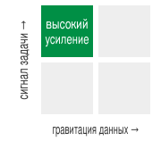
Отдача максимальна там, где сигнал задачи высок, а стоимость перемещения (гравитация) низка.
Инженерные усилия окупаются в наибольшей степени, когда раннее фильтрование и отбор отделяют записи с высоким сигналом от остальных до того, как гравитация данных сделает их перемещение дорогим. Малоинформативные данные (повторяющиеся аудиокадры или дубликаты примеров) потребляют пропускную способность «хост–ускоритель» и ёмкость памяти, обучая модель при этом малому. Эффективный конвейер разрешает это физическое узкое место, максимизируя значимый для задачи сигнал на перемещённый байт через иерархию хранилищ и интерконнектов — оптимизацию, начинающуюся с физических свойств самих данных.
9.1 Гравитация данных
Перенос петабайтного датасета по каналу 10 Gb/s требует дней непрерывной передачи (
↩︎ Принцип гравитации данных, согласно которому взвешивается, что выгоднее — передавать набор данных или перенести вычисления к нему, вводится в Облачная инфраструктура и масштаб.
Инженерный расчёт 4.7: Физика гравитации данных
Задача: обучающий набор данных 1 PB находится в дата-центре на востоке США, а удалённый ускорительный кластер доступен на западе США. Какое время передачи и стоимость исходящего трафика добавляет удалённое обучение и когда подходящие вычисления рядом с данными позволили бы избежать этих накладных расходов?
Расчёт:
- Пропускная способность сети: 100 Gb/s
12.5 GB/s. - Время передачи: 1,000,000 GB
12.5 GB/s = 80,000 seconds, приблизительно 22 h. - Стоимость: 1,000,000 GB
$0.02/GB = $20,000. (Базовый уровень: тарифы AWS на исходящую передачу данных, 2024 г.)
Системный вывод: если обучение занимает меньше 22 h, передача данных занимает больше времени, чем обучение. Если обучение стоит меньше $20,000 (приблизительно 5,000 TPUv4-hours), стоимость пропускной способности выше стоимости вычислений. Когда подходящие вычисления доступны рядом с данными, эти затраты на передачу говорят в пользу перемещения кода к данным. Для меньших наборов данных практичнее перемещение данных к коду, но размещение всё равно зависит от доступности вычислений и сравнительного времени обучения.
9.2 Задачно-значимый сигнал
Набор данных из миллиона одинаковых изображений обладает сильной гравитацией данных, но не добавляет ни одного нового наблюдения сверх первого образца; повторные проходы по этому единственному изображению могут слегка сдвинуть веса модели, но не дают свежих свидетельств. Напротив, курируемая коллекция из 10 000 разнообразных крайних случаев достаточно мала, чтобы перемещать её дёшево, и при этом несёт богатый обучающий сигнал. Физическое хранилище измеряет необработанные байты, тогда как машинное обучение извлекает задачно-значимый сигнал: свидетельства, помогающие модели выучить целевую задачу, а не сырую энтропию Шеннона — число бит, необходимое для описания самих байтов. Сопоставление задачно-значимого сигнала с гравитацией данных мотивирует эвристику отбора:
↪ Отношение «информация–вычисления», измеряющее обучающий сигнал, который каждый образец возвращает на единицу вычислительных затрат на обучение, раскрывается в Отношение «информация–вычисления».
9.3 Проблема питания данных
Если гравитация данных определяет стоимость перемещения данных оптом, то проблема питания данных определяет стоимость их доставки к исполнительным устройствам в реальном времени. Это узкое место по скорости потока ввода/вывода: пропускная способность хранилища не поспевает за производительностью вычислений. Это узкое место измерено, а не гипотетично. Профилирование девяти широко используемых моделей компьютерного зрения и аудио показало, что их время обучения часто доминируется простоями на данных — временем ожидания загрузки и предобработки данных (Mohan и др. 2021 г.). В производственном обучении рекомендательных систем конвейер хранения и приёма данных стал доминирующим ограничением производительности и ёмкости обучения (Zhao и др. 2022 г.).
Когда доставка данных и вычисления перекрываются, принцип узкого места гласит, что система работает со скоростью своего самого медленного этапа. Рассмотрим рабочую нагрузку этой главы по пропускной способности: один ускоритель класса A100 обучает ResNet-50 на изображениях. Пиковая арифметическая скорость ускорителя составляет 312 TFLOP/s, а один шаг обучения на одном изображении стоит около 24.6 GFLOP — примерно втрое дороже одиночного предсказания, поскольку обучение должно ещё и определить, как скорректировать каждый параметр. Деление первого на второе даёт арифметический потолок около 12,682 img/s. На практике хорошо настроенный конвейер удерживает около 3,200 img/s, то есть примерно 25 percent этого потолка, с учётом доли слоёв, ожидающих память, и синхронизации между шагами.
Каждое изображение лежит на диске как JPEG размером 150 KB, поэтому для поддержания этой скорости хранилище должно доставлять 480 MB/s. Когда подключённый том обеспечивает лишь 250 MB/s, вычислительные устройства простаивают на вводе/выводе. Расчёт предполагает, что каждая эпоха читает изображения из хранилища, как и бывает, когда набор данных больше памяти хоста; к наборам данных, помещающимся в память, мы вернёмся в Глава 10.3. Разрыв между требуемой и предоставляемой пропускной способностью определяет потери питания данных — штраф по пропускной способности из-за недостаточной подачи входных данных, который напрямую снижает эффективность системы
↩︎ Принцип узкого места вводится в Принцип узкого места.
Какие именно байты учитываются, важно не меньше, чем сколько их. После декодирования и преобразования в тензор FP32 то же изображение занимает 602 KB — около 4 своих сжатых размеров, поэтому загрузчик, преобразующий данные на хосте, пропускает 1.9 GB/s через память хоста и канал «хост–ускоритель». Многие загрузчики вместо этого пересылают 8-битные пиксели и выполняют преобразование на ускорителе, избегая этих затрат. Таким образом, сжатие обменивает пропускную способность хранилища на работу CPU по декодированию. Конвейер, кэширующий на диске предварительно декодированные тензоры, чтобы пропустить эту работу, вместо этого оплачивает полные 1.9 GB/s на уровне хранилища, а также фиксирует случайные обрезки, которые аугментация в противном случае варьировала бы от эпохи к эпохе. Применение того же расчёта «подача–потребность» даёт моделируемые потери пропускной способности 87 percent относительно установившегося базового уровня. Разделы о хранилище и доставке применяют эту границу самого медленного этапа сначала к уровням хранилища (Глава 10.3), затем к рабочим процессам декодирования на CPU (Глава 10.4), не выводя её заново.
Расстояние стоит энергии так же, как и времени. Чем дальше данные должны пройти до процессора, тем больше энергии уходит на их перемещение относительно вычислений над ними.
Системный взгляд 4.2: Энергетическая стоимость перемещения данных
Анализ «стены памяти» в Физические ограничения развёртывания подразумевает принцип инженерии данных: перемещение одного 32-битного значения стоит примерно в 173×–10,811× раз больше энергии, чем умножение FP32 из таблицы, причём множитель растёт по мере выхода данных за пределы чипа. В последующих главах об оптимизации этот же градиент стоимости используется при проектировании моделей и аппаратного обеспечения. Здесь вопрос в том, сколько энергии уже потребляет поток информации из внешнего мира до того, как модель начнёт вычисления, на каждом уровне иерархии памяти (Таблица 6).
Таблица 6: Энергетическая стоимость перемещения против вычислений над 32-битным значением: каждая строка даёт приблизительную энергию на одно событие на одном уровне иерархии перемещения данных; множители нормированы на одно 32-битное умножение FP32. Все строки используют одинаковую 32-битную ширину, поэтому отношения сравнивают события одного размера. Сами по себе они не доказывают, какой член доминирует в полной рабочей нагрузке; суммарная энергия зависит также от числа арифметических операций и передач. Строки арифметики и DRAM следуют Horowitz (2014 г.).
| Операция | Энергия (пДж) | Относительная стоимость |
|---|---|---|
| 32-битное умножение FP | 3.7 pJ/FLOP | 1 |
| Обращение к памяти DRAM (32-бит) | 640 pJ | 173× |
| Обращение к локальному SSD (32-бит) | 4,000 pJ | 1,081× |
| Передача по сети (32-бит) | 40,000 pJ | 10,811× |
Именно этот градиент объясняет, почему локальность данных доминирует в системной оптимизации. Каждый устранённый обмен устраняет соответствующую энергию перемещения, и этот эффект накапливается на протяжении эпох обучения.
Поскольку перемещение данных влечёт физические энергетические затраты, объём данных ведёт себя подобно физической массе. Удаление 50 percent обучающих данных посредством дедупликации экономит не только ёмкость постоянного хранилища. Оно также устраняет расход энергии на сетевых этапах, в памяти и при предобработке. Ранняя фильтрация неинформативных образцов — один из самых эффективных архитектурных рычагов, когда ввод/вывод и коммуникации доминируют во времени выполнения рабочей нагрузки.
Контрольная точка 4.3: Физика данных
Инженерией данных управляют физические затраты. Проверьте свою интуицию:
Энергетическая иерархия и эвристика плотности сигнала сходятся на одном рычаге оптимизации — выигрыше отбора данных из Уравнение 3. Каждая удалённая на раннем этапе избыточная или неинформативная запись экономит энергию перемещения и пропускную способность интерконнекта на каждом последующем этапе, не теряя задачно-значимого сигнала. Для выпущенного набора данных эти затраты наступают при доставке. Каждая эпоха обучения перемещает его из хранилища через хост к ускорителю, и проблема питания данных решает, поспевает ли это перемещение.
10 Хранение и доставка
Именно на этапе доставки пропускная способность либо обеспечивается, либо нет. На базовом облачном блочном хранилище сценарий ResNet-50 из Глава 9.3 уже теряет около 48 percent устойчивой скорости обучения. Довести этот сценарий до конца — значит выбрать такой уровень хранения, который способен поддерживать темп ускорителя, не позволить хостовому процессору между хранилищем и ускорителем стать следующим узким местом и сократить объём байтов, затрачиваемых на перемещение каждого сэмпла. Данные KWS ставят те же вопросы в меньшем масштабе — как для многоязычного справочного корпуса (23.4 million samples на 50 languages), так и для гораздо меньшего подмножества данных, относящегося к конкретному продукту.
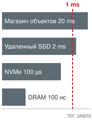
Точечный запрос с субмиллисекундной задержкой помещается только в DRAM или локальный NVMe.
10.1 Варианты систем хранения
Задача ResNet-50 читает изображения длинными последовательными проходами, тогда как обслуживающая система извлекает один вектор признаков на запрос. Эти противоположные шаблоны доступа тянут хранилище в разные стороны, и выбор системы означает минимизацию слагаемого данных
Оптимизацию определяют две метрики производительности хранилища. IOPS (операций ввода-вывода в секунду) — число отдельных запросов на чтение или запись, которое устройство способно обработать за секунду; она ограничивает рабочие нагрузки с произвольным доступом, такие как выборка небольших батчей изображений или отдельных профилей пользователей. Пропускная способность (bandwidth) измеряет объём данных, передаваемых в секунду, обычно
Эти шаблоны покрывают три архитектуры, и сканирование в задаче ResNet-50 и точечный поиск при обслуживании признаков находятся на противоположных концах спектра. Обычные базы данных (онлайновая обработка транзакций (OLTP)) оптимизированы на высокий IOPS за счёт небольших блоков, ориентированных на строки, строгих гарантий ACID и субмиллисекундных точечных запросов. Такой профиль подходит для онлайнового обслуживания признаков — например, рекомендательной системе, извлекающей один профиль пользователя, или сервису по борьбе с мошенничеством, запрашивающему счётчики исторических транзакций, — но расточителен по пропускной способности при обучающем сканировании. Движок хранения извлекает строки целиком, даже когда модель использует лишь 20 из 100 признаков.
Хранилища данных (онлайновая аналитическая обработка (OLAP)) организуют таблицы по столбцам, а не по строкам (Stonebraker и др. 2018 г.), поэтому последовательный проход читает только требуемые признаки, передавая одну пятую объёма несжатой строки при выборе 20 из 100 столбцов. Расчёт эффективности формата в Глава 10.5 количественно оценивает этот выигрыш на проработанном сценарии выявления мошенничества. Хранилища данных подходят для конструирования признаков, пакетной агрегации и табличного обучения, однако требуют структурированных схем, плохо справляются с сырым аудио, изображениями и свободным текстом, а изменение схемы во время экспериментов делают дорогостоящими операциями ALTER TABLE над таблицами в миллиарды строк.
Озёра данных хранят структурированные, полуструктурированные и неструктурированные данные в их исходных форматах на ёмком объектном хранилище и откладывают структурирование до момента запроса — архитектурный паттерн, известный как schema-on-read.21 Задача ResNet-50 может читать сырые файлы JPEG из озера с последовательными скоростями, тогда как независимые задачи навязывают свои схемы, не координируя миграции. Цена в том, что управление переносится с момента загрузки на момент извлечения. Без каталога метаданных, фиксирующего происхождение данных (lineage), периодичность обновлений, версии схем и политики доступа, озеро вырождается в «болото данных» — набор осиротевших каталогов вроде userdata_v2_final и userdata_v2_ACTUALLY_FINAL, происхождение и качество которых нигде не зафиксировано. Каждая архитектура хранения, таким образом, оптимизирована под свой шаблон доступа и фазу жизненного цикла, как резюмирует Таблица 7.
| Атрибут | Обычная база данных | Хранилище данных | Озеро данных |
|---|---|---|---|
| Назначение | Операционное и транзакционное | Аналитическое и отчётность | Хранение сырых и разнородных данных для будущей обработки |
| Тип данных | Структурированные | Структурированные | Структурированные, полуструктурированные и неструктурированные |
| Масштаб | Малые и средние объёмы | Средние и большие объёмы | Большие объёмы разнородных данных |
| Оптимизация производительности | Оптимизирована для транзакционных запросов (OLTP) | Оптимизирована для аналитических запросов (OLAP) | Оптимизирована для масштабируемого хранения и извлечения |
Каждый этап жизненного цикла также читает те же данные по-своему: разведочный анализ выбирает их случайно, обучение потоково читает их последовательно с высокой пропускной способностью, а промышленное обслуживание выдаёт точечные запросы с низкой задержкой. На начальном этапе разработки доминируют скорость итераций и гибкость схем, а не сырая пропускная способность. Главная системная задача здесь — управлять ревизиями экспериментов, не взрывая занимаемый хранилищем объём: десять разведочных запусков на датасете размером 100 GB при наивном подходе порождают 1 TB избыточных копий. Подход с указателями метаданных из Глава 8.2 этого избегает, отделяя отслеживание версий от файлового хранилища. Политики управления подкрепляют эту многоуровневость, предоставляя широкий доступ к анонимизированным датасетам разработки и ограничивая чувствительные промышленные данные зашифрованными, аудируемыми уровнями доступа.
Во время обучения профиль доступа смещается в сторону устойчивой последовательной пропускной способности. Современные глубокие нейронные сети обрабатывают большие датасеты на протяжении десятков или сотен эпох, отчего именно пропускная способность хранилища определяет утилизацию аппаратного обеспечения. Масштабируя сценарий ResNet-50 из главы до восьми ускорителей, каждый из которых удерживает свою скорость на устройство, получаем 25,600 img/s и устойчивую потребность в хранилище 3.8 GB/s для сжатых изображений по 150 KB; если же выкладывать декодированные тензоры FP32, эта потребность вырастет до 15.4 GB/s. Уровни хранения, не способные выдержать такой темп, простаивают ускорители, раздувая операционные расходы кластера.
Сквозное обучение ResNet-50 не может сократить эту потребность предвычислением признаков, потому что его признаки меняются на каждом шаге. Модель, обучаемая на выходах замороженного внешнего кодировщика (предобученной модели, чьи выходы переиспользуются как входные признаки), может, и там компромисс размещения признаков (Глава 7.2) становится критичным. Предвычисление таких представлений даёт 30× сокращения хранилища (150 KB сырых входов сокращаются до эмбеддингов по 5 KB), но вносит устаревание данных при обновлении кодировщика.
Промышленный инференс меняет цель оптимизации с последовательной пропускной способности на произвольный доступ с низкой задержкой. Рекомендательный сервис, обрабатывающий 10,000 req/s при SLA 10 мс и 10 feature reads/request, требует 100,000 IOPS. Локальное хранилище Non-Volatile Memory Express (NVMe)22 способно выдержать такой темп произвольного доступа в рамках бюджета задержки; хранилища «ключ–значение» в памяти, такие как Redis, распределённые кэши и специализированные хранилища признаков (feature store), дают запас по хвостовой задержке — задержке нескольких самых медленных запросов.
Развёртывание на периферии (edge) накладывает дополнительные физические ограничения: ограниченная флеш-память, непостоянное сетевое подключение и обновления моделей без прерывания работы диктуют многоуровневое кэширование, где основные модели находятся в локальной флеш-памяти, а справочные данные асинхронно синхронизируются с облачными конечными точками. В промышленности откат развёрнутой модели или сравнение двух моделей на живом трафике зависит от возможности проследить каждую модель до точной версии датасета, на которой она обучалась.
В разведке, обучении, обслуживании и на периферии ни одна технология хранения не покрывает все шаблоны доступа, поэтому промышленные ML-архитектуры редко ограничиваются одной зрелой системой: они сочетают все три, где базы данных обслуживают точечные запросы, хранилища данных выполняют извлечение признаков, а озёра держат сырые записи и промежуточные контрольные точки.
10.2 Уровни хранения и стоимость
Под каждой из этих систем лежит физический носитель, а носители различаются примерно на три порядка по стоимости и почти на четыре по пропускной способности. Несоответствие уровня хранения шаблону доступа либо раздувает инфраструктурные расходы из-за недоиспользованной ёмкости, либо морит обучающие ускорители голодом во время пауз ввода-вывода.
Этот разброс цен пережил длительное падение абсолютной цены. Рисунок 18 показывает минимальные зафиксированные цены за терабайт для каждого носителя в постоянных долларах 2020 года. Стоимость хранения на жёстких дисках упала с примерно $88B за терабайт в 1956 году до $10.6 в 2023 году — примерно на 10 порядков, — и тем не менее в 2023 году DRAM всё ещё стоила 42× дороже твердотельных накопителей за терабайт, а твердотельные накопители — 2.4× дороже жёстких дисков. Ёмкость стала дешёвой, однако с 1980-х годов разрывы между уровнями иерархии хранения не сократились, поэтому стоимость хранения данных для обучающего задания определяется выбором уровня, а не просто объёмом.
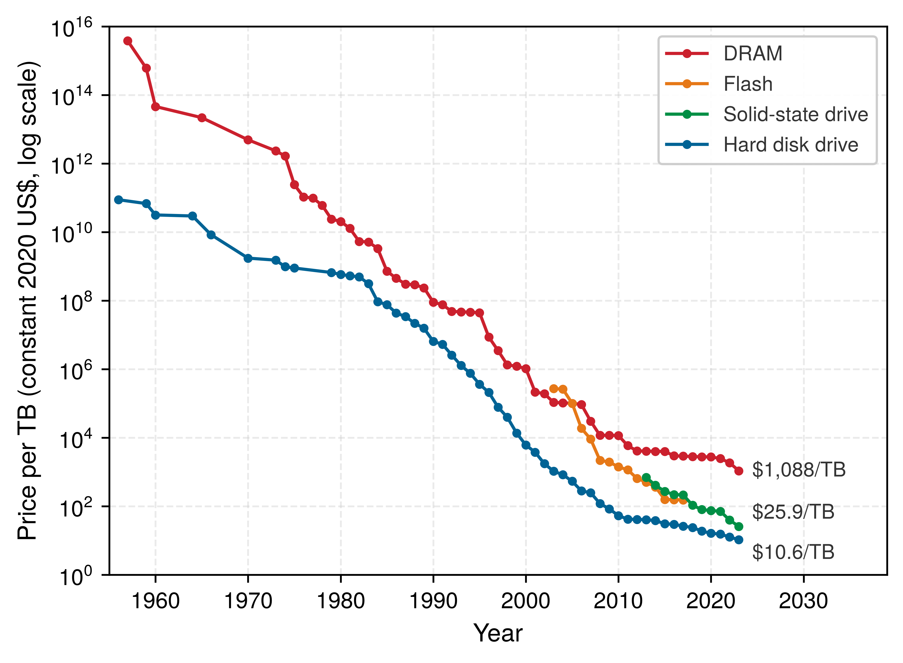
В ML-системах используется многоуровневое хранение (tiered storage), поскольку не существует единого уровня, который был бы одновременно дешёвым и быстрым (Таблица 8). В рамках этих допущений 2024 года хранение эталонного корпуса KWS (748.8 GB) в объектном хранилище стоит $17.2/month, что делает экономически доступным удержание исходных аудиоданных, тогда как рабочие наборы данных на NVMe стоят $74.9/month–$224.6/month для активного обучения, но загружаются в 50× быстрее.
↪ Почему ни один носитель не сочетает большую ёмкость с низкой задержкой доступа — причина, по которой хранение строится по уровням, — собрано для справки в Иерархия памяти.
| Уровень хранения | Стоимость ($/ТБ/мес.) | Последовательное чтение | Задержка случайного чтения | Типичное применение в ML |
|---|---|---|---|---|
| NVMe SSD (локальный) | $100–300 | 5–7 GB/s | 10–100 μs | Загрузка обучающих данных, активная раздача признаков |
| Объектное хранилище (S3, GCS) | $20–25 | 100–500 MB/s (на соединение) | 10–50 ms | Исходное хранение в озере данных, артефакты моделей |
| Хранилище данных (BigQuery, Redshift) | $20–40 | 1–5 GB/s (колоночное сканирование) | 100–500 ms (запуск запроса) | Запросы к обучающим данным, конструирование признаков |
| Кэш в памяти (Redis, Memcached) | $500–1000 | 20–50 GB/s | 1–10 μs | Онлайн-раздача признаков, инференс в реальном времени |
| Архивное хранилище (Glacier, Nearline) | $1–4 | 10–50 MB/s (после извлечения) | Часы (извлечение) | Долговременное хранение, архивы для соответствия требованиям |
В терминах реального времени этот разрыв в пропускной способности в 50× меняет компонент загрузки входных данных во времени инженерной итерации на том же корпусе KWS: загрузка на локальном NVMe при 5 GB/s завершается за 149.8 s, тогда как через одиночный поток объектного хранилища — за 7,488 s. Это ускорение загрузки сокращает время экспериментов лишь в той мере, в какой явный ввод-вывод вносит вклад в их длительность, поскольку преобразование данных и исполнение модели по-прежнему требуют времени.
Помимо входных наборов данных, хранилище должно вмещать то, что производит обучение: выученные параметры модели, дополнительные учётные значения, которые обучение хранит для каждого из них, и периодические контрольные точки (сохранённые снимки) того и другого. Современные нейронные сети содержат от миллионов до сотен миллиардов параметров, что порождает паттерны хранения и извлечения, отличные от табличных данных. Для GPT-3 (Brown и др. 2020 г.) требуется приблизительно 700 GB для весов модели при хранении в формате FP32 (175B параметров умножить на 4 байта), хотя на практике при развёртывании часто используют более компактные числовые форматы, например FP16 (350 GB), чтобы вдвое снизить нагрузку на память. Чтение и запись этих весов параллельно при запуске и сохранении контрольных точек требует совокупной пропускной способности хранения, приближающейся к пределам сетевого fabric (сеть межсоединений) (от 25 до 100 Gbps), чтобы удерживать вычислительные модули занятыми.
↪ Квантизация, сокращающая занимаемый весами объём за счёт хранения параметров с меньшей точностью, рассматривается в Числовая точность: как меняется хранение значений.
Отслеживание этих артефактов порождает проблемы версионирования. Инкрементальные текстовые диффы Git не работают с бинарными файлами размером в гигабайты, где одно обновление весов создаёт совершенно новый файл, а десять исторических контрольных точек модели размером 10 GB занимают 100 GB. Поэтому в производственных рабочих процессах лёгкие хэши содержимого хранят в Git, а бинарные файлы — в хранилище объектов с адресацией по содержимому; это то же разделение, которое Глава 8.2 применяет к наборам данных.
Обучение на нескольких ускорителях усугубляет нагрузку на хранилище за счёт параллельного ввода-вывода. Когда обучающее задание охватывает несколько ускорителей, каждый обучающий процесс (по одному на ускоритель) одновременно читает обучающие батчи, а задание периодически записывает контрольные точки параметров и учётных значений — часто из одного процесса — всплесками, конкурирующими с этими чтениями. Хранилище должно выдерживать чтения, масштабирующиеся с числом воркеров, и всплески записи контрольных точек поверх них, предотвращая сериализацию ввода-вывода, которая оставляет дорогие ускорители простаивающими.
↪ Стратегии параллелизма по данным и по модели, которые координируют работу этих воркеров внутри одного узла, рассматриваются в Обучение на одном узле с несколькими GPU.
10.3 Бюджет пропускной способности хранилища
Каждый уровень хранилища задаёт собственный предел для задачи снабжения данными из Глава 9.3. Оперативная память хоста обеспечивает 50–200 GB/s на современных серверных узлах, локальные NVMe SSD — 5–7 GB/s, а сетевое хранилище — 1–10 GB/s. Уровень, с которого читает данные обучение, ограничивает скорость подачи данных, поэтому вопрос проектирования состоит в том, какой уровень способен поддержать сценарий ResNet-50 из этой главы и на какой из двух его скоростей.
Инженерный расчёт 4.8: Бюджет пропускной способности хранилища
Задача: какая конфигурация хранилища не допустит «голодания» по данным у ускорителя класса A100 при обучении ResNet-50? В Границы производительности объясняется, почему реально достижимая пропускная способность уступает заявленному пиковому значению ускорителя; здесь же речь о том, как вычислительный предел превращается в бюджет тракта данных.
Начнём с вычислительного предела, полученного в Глава 9.3. Пиковая производительность A100 — 312 TFLOP/s — делённая на примерно 24.6 GFLOP на одно обучающее изображение, даёт 12,682 img/s.
Этот вычислительный предел становится требованием к хранилищу, как только каждое изображение нужно доставить с диска или из объектного хранилища. Из хранилища читаются сжатые байты, поэтому бюджет рассчитывается исходя из JPEG размером 150 KB, а не декодированного тензора: подача на предельной скорости требует примерно 1.9 GB/s, а скорость 3,200 img/s, которую ускоритель реально выдерживает, — 480 MB/s.
Теперь три варианта хранилища можно сопоставить с этими двумя целевыми показателями:
- S3 Standard выдаёт около 100 MB/s на одно соединение при потоковой передаче крупных объектов, например разбитых на сегменты архивов, поэтому подача на предельной скорости требует 19 concurrent worker threads ещё до программных накладных расходов. Загрузка каждого изображения размером 150 KB отдельным объектом ограничена задержкой (latency) и даёт значительно меньше.
- SATA SSD выдают около 500 MB/s при последовательном чтении — достаточно для устойчивой скорости, но это узкое место на предельной скорости.
- NVMe SSD выдают примерно 5–7 GB/s, что покрывает предельную скорость с запасом.
Системный вывод: SATA SSD ограничивает конвейер значением 500 MB/s, что в пересчёте на изображения размером 150 KB даёт примерно 3,333 img/s. Это перекрывает устойчивую скорость 3,200 img/s, поэтому более быстрый накопитель сегодня не даёт никаких преимуществ. Но как только более быстрые ядра или более производительный ускоритель приблизят скорость к предельной, тот же накопитель удержит ускоритель класса A100 на уровне лишь 26 percent от неё. Каждое исправление самого медленного этапа вскрывает следующий, поэтому ёмкость уровня хранилища нужно выбирать под ту скорость, к которой движется конвейер, а не под текущую.
Значение 500 MB/s из ноутбука — это эффективная пропускная способность последовательного чтения SATA III (предел самого интерфейса — 550 MB/s), а реальная производительность случайного чтения мелких файлов может быть заметно ниже. Проектирование под высокопроизводительное обучение начинается с согласования пропускной способности хранилища с потребностью ускорителя — это форма ограничения самым медленным этапом на уровне хранилища, которую Глава 9.3 измерил как потерянную скорость обучения.
Все эти сравнения опираются на одно общее ограничение. Пусть
При полном перекрытии форма «минимум скоростей» — это ограничение самым медленным этапом из Глава 9.3, записанное через скорости. В записи через времена оно превращается в нижнюю границу времени шага
Когда
Когда пропускная способность хранилища становится ограничивающим фактором, командам приходится либо повышать производительность хранилища за счёт более быстрых носителей, параллелизма или кэширования, либо сокращать объём перемещаемых данных. Обучение больших языковых моделей может требовать обработки сотен гигабайт текста в час, а модели компьютерного зрения, обрабатывающие изображения высокого разрешения, могут требовать устойчивых скоростей подачи данных свыше 50 гигабайт в секунду на распределённых кластерах. Предвыборка (prefetching) скрывает время загрузки следующего батча за вычислениями на текущем, но лишь тогда, когда загрузчик выдерживает требуемую скорость подачи; она не может создать пропускную способность, которой у хранилища нет. Однако установка быстрого накопителя решает лишь первую половину задачи доставки, поскольку сжатые байты из хранилища всё ещё должны быть декодированы и преобразованы процессором хоста, прежде чем ускоритель сможет их использовать.
10.4 Загрузчик данных
Между хранилищем и ускорителем находится процессор хоста, который читает каждый сохранённый пример, декодирует его, применяет аугментации и подготавливает к передаче. Барьером на этом этапе является узкое место ввода-вывода (I/O): ускоритель простаивает всякий раз, когда хост не успевает подготавливать примеры с той же скоростью, с какой ускоритель их потребляет. Ограничение самым медленным этапом из Глава 9.3 действует без изменений: в идеализированной двухэтапной модели время шага лежит в диапазоне от
В компьютерном зрении ограничивающим этапом обычно являются декодирование JPEG и аугментации на CPU хоста; в распознавании ключевых слов те же потоки хоста нагружают извлечение MFCC и аудиоаугментации. Эта подготовка на стороне хоста выполняется внутри загрузчика данных фреймворка (например, DataLoader в PyTorch — широко используемом ML-фреймворке), который декодирует и преобразует сырые записи в параллельных воркер-процессах, прежде чем подготавливать батчи к передаче на устройство. Конвейерные фреймворки ввода, такие как tf.data, рассматривают этот этап как самостоятельную систему — с операторами параллельного преобразования, предвыборки и кэширования (Murray и др. 2021 г.).
Чтобы изолировать масштабирование воркеров CPU, предположим, что хранилище и шинные передачи ёмкостью обеспечивают потребность в сжатых входных данных 480 MB/s, что удовлетворяет SATA SSD (Глава 10.3). Когда хранилище и интерконнект не отстают, конвейер обучения зависит целиком от того, могут ли воркеры CPU соответствовать устойчивой скорости ускорителя 3,200 img/s. Если каждый воркер-процесс преобразует 375 img/s, для достижения точки пересечения пропускных способностей требуется 9 воркеров. Ниже этого порога скорость задаёт конвейер ввода CPU, и добавление ускорителей не даёт ускорения, что удивляет команды, ожидающие линейного масштабирования от инвестиций в вычисления. Выше точки пересечения запуск дополнительных воркеров не даёт прироста, поскольку скорость задаёт ускоритель. Число воркеров — это согласование пропускных способностей, а не аппаратная константа: фактические требования ResNet-50 на данном ускорителе меняются в зависимости от преобразований изображений, архитектуры процессора хоста, размера батча и конфигурации среды исполнения. Рисунок 19 показывает эту точку пересечения, где режим голодания переходит в плато вычислительного насыщения.
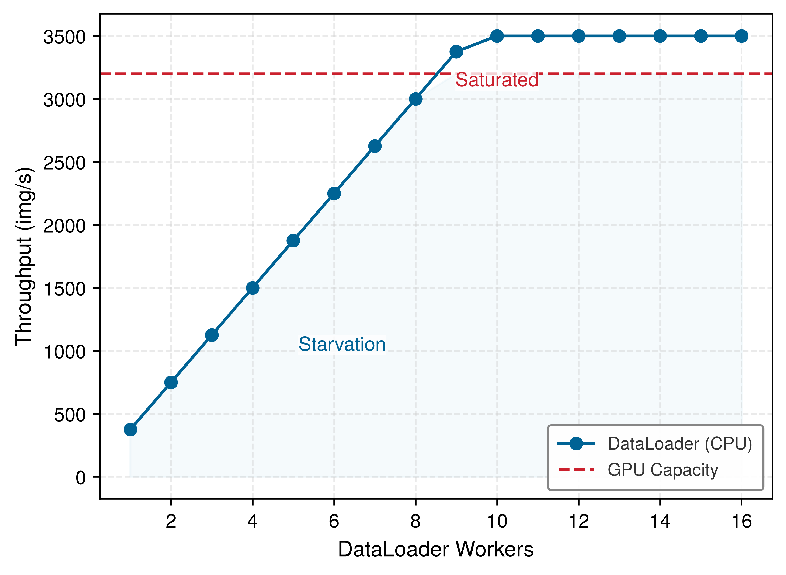
При восьми ускорителях число воркеров вырастает восьмикратно — ядер декодирования требуется больше, чем может выделить большинство хостов. Устранить узкое место позволяют три механизма. Пулы многопроцессных воркеров распределяют декодирование по ядрам хоста. Асинхронная предвыборка копирует следующий батч на ускоритель, пока тот вычисляет текущий. Аппаратные декодеры полностью переносят распаковку изображений с процессора хоста. Аппаратное декодирование снимает ограничение со стороны хоста и возвращает узкое место обратно к пропускной способности хранилища, где оставшийся рычаг — число байтов, которое стоит перемещать для каждого примера.
↪ О том, как асинхронная предвыборка и перекрытие стадий конвейера скрывают задержку подготовки на хосте за вычислениями ускорителя, см. Предзагрузка данных и перекрытие.
10.5 Форматы, сжатие и партиционирование
Сканирование CSV-файла со 100 столбцами, когда модель использует лишь 20, растрачивает четыре пятых дисковой полосы на неиспользуемый текст, а открытие миллионов отдельных JPEG-файлов по 150 КБ тратит больше времени на позиционирование в файловой системе, чем на перенос самих байтов. Формат файла задаёт количество байтов и схему доступа, поэтому выбор формата напрямую масштабирует компонент данных
Цена — перемешивание. Записи внутри шарда идут по порядку, поэтому загрузчики аппроксимируют случайный порядок, перемешивая список шардов и смешивая записи в буфере; слишком малый буфер подаёт модели коррелированные батчи. Переработка формата и загрузчика в связке окупается в масштабе «маяка» этой главы. Одна такая система обучает ResNet-50 на ImageNet до точности 75 процентов примерно за 20 минут на одной машине (Leclerc и др. 2023 г.). Количественная оценка эффекта выбора формата как эффективности формата
Инженерный расчёт 4.9: Эффективность формата
Форматы хранения определяют, какой объём «лишних» данных необходимо переместить, чтобы извлечь сигнал, нужный для обучения. Пусть
Сценарий: обучение модели выявления мошенничества, использующей 20 признаков из таблицы с 100 столбцами, в предположении равного объёма несжатых байтов на столбец.
Строкоориентированные форматы (например, CSV) вынуждены читать все 100 столбцов, чтобы извлечь 20 требуемых признаков, что даёт долю полезных байтов 0.2 и растрачивает 80 percent дисковой полосы. Напротив, колоночные форматы (например, Parquet) читают только выбранные столбцы, достигая
Системная аналогия (инсайт): в этом сценарии с одной лишь проекцией столбцов переход с CSV на Parquet даёт такой же прирост эффективной скорости чтения, как ускорение пути данных в 5×.
Колонкообразные форматы хранения, такие как Parquet или Optimized Row Columnar (ORC), сокращают ввод-вывод для типичных ML-нагрузок в 5
↪ О том, как строчные и колоночные схемы располагают записи на диске и как проекция с проталкиванием читает только выбранные фрагменты столбцов, собрано для справки в Построчные и колоночные форматы.
Алгоритмы сжатия обменивают плотность хранения на скорость распаковки на CPU. Если gzip достигает более высоких коэффициентов сжатия в 6
Parquet определяет колоночную схему на диске, а стандарт Apache Arrow играет ту же роль в памяти. Он определяет единую колоночную схему, которую движки приёма данных, датафреймы и ML-фреймворки читают напрямую, поэтому данные проходят между ними без конвертации в новый формат при каждой передаче.
↪ Иллюстративная скорость декодирования на CPU и стоимость десериализации для различных форматов хранения собраны для справки в Стоимость сериализации.
Помимо формата и сжатия, партиционирование данных управляет эффективностью извлечения, согласовывая схему хранения с типовыми паттернами доступа. Корпус KWS можно партиционировать по диктору и дате записи, так что обучающий запуск может выбрать срез без сканирования всего корпуса, а ключ диктора, по которому назначаются разбиения, определяет и схему хранения.
Стратегии партиционирования напрямую взаимодействуют с распределённым обучением. Диапазонное партиционирование по идентификатору пользователя направляет записи каждого пользователя одному обучающему воркеру (одному из нескольких, каждый из которых обрабатывает свой срез каждого батча), что подаёт каждому воркеру смещённый, а не репрезентативный поток. Случайное партиционирование распределяет записи из исходного пула между воркерами в соответствии с политикой выборки. Оно не устраняет корреляции, уже присутствующие в этом пуле, и не предотвращает утечку между разбиениями для оценки; группировка по дикторам и другие ограничения независимости должны обеспечиваться отдельно. Важна и гранулярность: слишком мало крупных партиций ограничивает параллелизм воркеров, а миллионы мелких шардов добавляют существенные накладные расходы на метаданные и ломают последовательную предвыборку с диска.
При обучении на нескольких ускорителях перекос партиций порождает отстающих. Если семь воркеров в задаче на восьми ускорителях завершают загрузку своего батча за 12 мс, но один воркер читает из чрезмерно крупной партиции и тратит 180 мс, то этот единственный медленный воркер — отставший — задерживает всю задачу, поскольку каждый воркер должен завершить свой батч прежде, чем начнётся следующий шаг обучения. Сбалансированное партиционирование, согласованное с бюджетами чтения воркеров, поэтому поддерживает высокую эффективность ускорителей.
Формат, сжатие и партиционирование завершают путь доставки, сокращая число байтов, которое стоит перемещать для каждого примера, и сохраняя баланс шардов между воркерами. Когда уровень хранения соразмерен ускорителю, хост соответствует его скорости, а байты на пример сокращены, в обоих сценариях все стадии конвейера на месте, и каждый из них можно сверить с исходными целевыми показателями.
11 Приёмка конвейера
Конвейер, отдельные этапы которого работают безупречно, всё же может не пройти развёртывание, если обученный детектор ключевых слов не достигает целевого показателя обнаружения, срабатывает слишком часто на обычной речи или превышает память всегда включённого острова после добавления буферов признаков и состояния среды исполнения к весам модели. Поэтому оценка варианта проекта из Таблица 2 как целостного конвейера начинается с явного договора приёмки: целевой показатель 98 percent обнаружения ключевых слов на заявленной оценочной совокупности, ожидаемый бюджет ложных пробуждений ниже 1 false wake/month, лимит модели 256 KB и отдельный бюджет состояния предобработки 16 KB наряду с требованиями к задержке и энергопотреблению из Глава 3. Один лишь объём модели в байтах не доказывает пригодность устройства; пиковые буферы признаков и состояние среды исполнения должны помещаться в общий объём памяти, выделенный устройству.
Цель по ложным пробуждениям — самостоятельное требование к данным. В рамках модели пуассоновского потока, если истинная частота составляла бы три ложных пробуждения за окно тестирования, вероятность случайно не наблюдать ни одного ложного пробуждения составила бы
Чтобы проверить выбор 13 коэффициентов MFCC вместо 40, оба кандидата используют одни и те же версионированные разбиения данных с разделением по говорящим, бюджет меток и зафиксированную процедуру обучения. Каждый кандидат поставляет собственное обученное состояние предобработки вместе с моделью. Валидационные данные служат для выбора порога обнаружения; отдельный, не затронутый оценочный набор затем измеряет распознавание ключевых слов и ложные отклонения, а репрезентативные потоки без ключевых слов измеряют число ложных принятий в час через развёрнутый путь обнаружения. Команда фиксирует требуемый статистический уровень доверия и длительность прослушивания до оценки и принимает заявление о ложных пробуждениях только тогда, когда верхняя граница неопределённости, выраженная за ту же длительность прослушивания, что и целевой показатель, удовлетворяет этой цели. Недостаточное время прослушивания оставляет заявление недоказанным, даже если ни одного ложного пробуждения не произошло. Прогон фиксированного аудио через пути предобработки при обучении и на устройстве проверяет паритет признаков, а измерения на целевом устройстве устанавливают пиковую память, задержку и энергопотребление.
Бюджет относит сбор и разметку к аллокации разметки, а генерацию, сохраняемые версии, хранение и обработку — к их заявленным аллокациям. Аллокация разметки покупает только 750K реальных примеров; синтетические данные должны покрываться остальными аллокациями. Если кандидат с 13 коэффициентами удовлетворяет всем условиям приёмки, то для более крупного представления требуется измеренное улучшение качества, оправдывающее его дополнительные затраты на устройстве. Если меньший кандидат не проходит по качеству, альтернатива с 40 коэффициентами приемлема лишь при условии, что она закрывает этот разрыв, проходя те же проверки ресурсов и стоимости. Если ни один не проходит, команда пересматривает покрытие, представление или продуктовые требования и повторяет валидацию; объявить успех только на основании выигрыша в пространстве проектирования она не может. Далее в главе предполагается, что кандидат с 13 коэффициентами проходит.
У сценария с ResNet-50 договор проще: доставка не должна ограничивать скорость обучения. Сегодня он проходит на SATA-твердотельном накопителе при условии, что изображения читаются крупными последовательными шардами, что позволяет накопителю выдавать около 3,333 img/s против 3,200 img/s, которые обеспечивает ускоритель. Он перестаёт проходить, как только более быстрые ядра или более быстрый ускоритель приближают скорость к потолку вычислений — именно поэтому уровень хранения подбирается под скорость, к которой движется конвейер, а не под ту, на которой он работает сегодня.
Приёмка не завершает работу инженерии данных. В эксплуатации входная среда непрерывно дрейфует: сменяется аппаратное обеспечение датчиков, видоизменяются вышестоящие схемы, обновляются пулы разметчиков. Без активного операционного сопровождения статические конвейеры незаметно деградируют со временем.
13 Заблуждения и подводные камни
Конвейеры инженерии данных редко отказывают с немедленными аварийными остановками во время исполнения; вместо этого они незаметно искажают распределения признаков, повреждают состояние обучения или морят голодом дорогие кластеры ускорителей. Девять заблуждений и подводных камней, приведённых ниже, собирают повторяющиеся допущения, стоящие за такими отказами, и каждое сопровождается измерением или контрактом конвейера, которое его предотвращает.
Заблуждение: Больше данных всегда улучшает качество модели.
Горький урок говорит, что общие методы, получающие больше данных и вычислений, продолжают побеждать, но он не говорит, что каждый новый образец стоит столько же, сколько предыдущий. За определённым порогом дополнительные данные дают убывающую отдачу, описываемую эмпирическими законами масштабирования — подогнанными кривыми, связывающими ошибку модели с размером набора данных. Исследования в компьютерном зрении, переводе и языковом моделировании показывают, что тестовая функция потерь падает по степенному закону с ростом размера набора данных, поэтому каждое последующее снижение ошибки требует мультипликативно большего объёма образцов (Hestness и др. 2017 г.). В иллюстративном пространстве проектирования KWS десятикратно больший обучающий набор даёт 5–8 percent частоты обнаружения при 10× стоимости разметки. В системных терминах повторяющиеся примеры расходуют дисковый ввод-вывод, пропускную способность шины «хост—устройство» и FLOPs ускорителя, не добавляя новых различных наблюдений. Повторные проходы всё же могут слегка сдвинуть модель, поэтому избыточность нужно оценивать по измеренному эффекту на оценке качества, а не считать заведомо бесполезной. Эвристика релевантного задаче сигнала из Глава 9 отражает этот компромисс: масштабирование сырого объёма байтов без сохранения информационной плотности увеличивает стоимость инфраструктуры, давая ничтожные улучшения функции потерь на оценке.
↪ Законы масштабирования и методы отбора, решающие, какие образцы стоят затраченных на них вычислений, рассматриваются в Стена данных.
Подводный камень: Планировать миграцию петабайтов как передачу с ограничением только по пропускной способности.
Деление объёма данных на пропускную способность сетевого канала даёт теоретическое время передачи по линии — около 22 h для примера из этой главы объёмом 1 PB при 100 Gb/s, — но передача по сети редко оказывается критическим путём. Гравитация данных (Глава 9) привязывает большие наборы данных к паутине окружающей инфраструктуры: конвейеры преобразования при приёме, проверки валидации схемы, политики контроля доступа и потребители ниже по потоку. Перемещение корпуса масштаба петабайта между облаками или центрами обработки данных требует рефакторинга конвейеров, повторной проверки целостности данных, повторного прогрева кэшей и перестройки метаданных-индексов. На практике инженерное время, затраченное на адаптацию зависимых систем, многократно превышает чистое время сетевой пересылки.
Заблуждение: Предобработку данных можно завершить один раз и больше не трогать.
Конвейеры предобработки превращают сырые наблюдения во входы модели с помощью параметров, подогнанных на исторических данных: словарей, отображающих слова или категории в целочисленные коды, векторов масштабирования на основе среднего и дисперсии, таблиц частот категорий и границ числового отсечения. Когда продакшн-распределения дрейфуют, эти фиксированные преобразования устаревают. Фиксированные словари встречают растущую долю значений, которых никогда не видели, фиксированные константы нормализации выталкивают масштабированные признаки за пределы диапазона, на котором обучалась модель, а статические границы отсечения отрезают валидный сигнал. Чтобы конвейер оставался точным, необходим мониторинг входных тензоров и исходящих результатов, а любое изменение предобработки должно проверяться вместе с моделью, потребляющей её признаки. Пересчёт статистик независимо в момент инференса сам может внести перекос.
Подводный камень: Игнорировать стоимость сериализации данных.
Профилирование часто сосредоточено исключительно на исполнении на ускорителе, в то время как загрузчики данных незаметно разбирают сырые файлы JSON или CSV. Разбор текстовых записей заставляет ядра CPU хоста тратить сотни циклов на образец на декодирование строк, токенизацию, преобразование ASCII в float и выделения в куче. Такой разбор на стороне хоста морит ускоритель голодом — так же, как это делает узкое место в загрузчике данных (Глава 10.4). В сценарии ResNet-50 из этой главы декодирование JPEG уже занимает 9 воркеров на ускоритель, каждый из которых готовит 375 img/s. Табличный конвейер или конвейер лог-признаков, разбирающий текстовые записи, дополнительно платит стоимость декодирования строк, описанную здесь, поверх любой такой подготовки. Бинарные форматы сериализации, такие как Apache Arrow или отображаемые в память массивы, устраняют накладные расходы на разбор, сохраняя числа непосредственно в машинно-нативных бинарных раскладках, которые загрузчик может передать ускорителю без преобразования. Для табличных схем колоночные форматы, такие как Parquet, снижают дисковый ввод-вывод, читая только требуемые столбцы. Бенчмаркинг приёма данных относительно скоростей потребления ускорителя показывает, ограничивает ли десериализация на CPU хоста пропускную способность обучения.
Заблуждение: Высокая точность обучения свидетельствует о готовности к продакшну.
Точность обучения и точность на отложенной валидации описывают историческое распределение, из которого были извлечены данные. Продакшн добавляет краевые случаи, шум датчиков и живой дрейф, а модель с высокой валидационной точностью всё равно отказывает, если изменяются конвейеры признаков выше по потоку или срабатывают таймауты инференса с переходом к значениям по умолчанию. Диагностика регрессий после развёртывания требует проверок симптомов по темпоральному дрейфу, артефактам разметки и перекосу обучения-инференса в порядке, заданном в Рисунок 20, а не опоры на единственный офлайн-показатель.
Подводный камень: Игнорировать перекос обучения-инференса до развёртывания.
Перекос обучения-инференса (training-serving skew) возникает, когда логика генерации признаков расходится между офлайн-конвейером обучения и онлайн-средой инференса — например, из-за различий в точности чисел с плавающей запятой, агрегации по временным окнам, версиях библиотек или темпоральной утечки из данных с отметками времени после момента предсказания. Поскольку модель по-прежнему получает валидные векторы с плавающей запятой, инференс не порождает исключений во время исполнения, в то время как качество предсказаний деградирует. Избежать этого подводного камня требуют общая логика преобразований, воспроизводимые хранилища признаков и автоматизированные преддеплойные тесты эквивалентности, проверяющие равенство признаков между офлайн- и онлайн-путями.
Заблуждение: Синтетические данные могут полностью заменить сбор данных из реального мира.
Синтетические данные обогащают обучающие наборы, порождая редкие краевые случаи, контролируемые физические вариации или образцы, безопасные с точки зрения приватности, но генератор может сэмплировать только внутри допущений, заложенных в него. Обученные исключительно на синтетике модели усваивают артефакты, специфичные для генератора, и отказывают на вариациях реального мира, которые генератор никогда не моделировал. В системе KWS, например, детектор, обученный целиком на синтезированной речи, теряет точность, столкнувшись с реальной реверберацией помещения, незнакомыми акцентами, искажениями микрофона и меняющимся фоновым шумом. Синтетическая генерация дополняет реальный сбор, но репрезентативные записи из реального мира остаются необходимыми для проверки готовности системы к развёртыванию.
Подводный камень: Пренебрегать версионированием данных, пока отладка модели не потребует этого.
Отношение к обучающим наборам данных как к изменяемым каталогам объектного хранилища разрушает воспроизводимость экспериментов. Когда переобученная модель теряет точность, неверсионированный конвейер не может показать, является ли причина изменённой рубрикой разметки, незаметным изменением схемы или подлинным сдвигом распределения; а после перезаписи таблиц или удаления сырых логов исторические обучающие входы уже не восстановить. Как установлено в Глава 8.1, каждая контрольная точка модели должна неизменяемо ссылаться на конкретный снапшот набора данных, хеш кода преобразования и файл конфигурации.
Заблуждение: Продакшн-логи показывают, где модель отказывает.
Развёрнутая система сама решает, какие данные от неё возвращаются. Детектор ключевых слов загружает аудио только когда срабатывает, поэтому его логи наполняются корректными обнаружениями и ложными пробуждениями, тогда как пропущенное ключевое слово вообще не оставляет записи (Глава 12.1). Команда, измеряющая качество только по этим логам, видит долю ложных отказов ниже реальной, а дообучение на тех же логах перепредставляет случаи, которые модель и так уже обрабатывает. Измерение отказов требует сбора, спроектированного именно для этого: исследований записей с согласия участников, отчётов о несработавших активациях и оценочных потоков, независимых от решений развёрнутой модели.
14 Итоги
Обученная модель ограничена данными дважды. Граница возможностей следует из принципа «данные как код» («Принцип data-as-code»): изменённый набор данных меняет обученную модель, даже когда алгоритмический код не менялся, а дефект, внесённый при сборе, в схеме или разметке, усиливается на каждом последующем этапе как каскад данных. Граница пропускной способности — это физика слагаемого данных железного закона. Конвейер должен доставлять байты с той скоростью, с которой их потребляет ускоритель, — требование, которое потери на подпитке, узкое место загрузчика данных и бюджет пропускной способности хранилища каждое количественно оценили на своём уровне одного и того же сценария ResNet-50.
Таким образом, инженерия данных работает одновременно в двух пересечениях таксономии D·A·M. Половина, отвечающая за возможности, работала в пересечении «Данные—Алгоритм», а половина, отвечающая за пропускную способность, — в пересечении «Данные—Машина». После запуска распределение развёртывания продолжает смещаться и вновь открывает оба пересечения, поэтому эксплуатация должна поддерживать обе границы в силе. Контракты приёма, разметки и признаков определяют, чему модель может научиться, и сохраняют вычисление одной и той же функции при обучении и обслуживании, тогда как уровни хранилищ, форматы и загрузчики определяют, насколько быстро она учится.
Основные выводы: Данные — это исходный код
- Данные — это код; версионируйте их, тестируйте, проверяйте: согласно принципу «данные как код» («Принцип data-as-code»), изменение набора данных является изменением кода, поэтому оно проходит версионный контроль, валидационные тесты и ревью. Разбиения набора — границы доверия, поэтому назначение по групповому ключу, подгонка преобразований только на обучающем разбиении и признаки на момент времени (point-in-time) удерживают утечку вне показателя на тесте.
- Каскады данных превращают качество на верхнем уровне потока в инвестицию с максимальной отдачей: накапливающиеся дуги отказов в Рисунок 2 показывают, как ранние ошибки сбора минуют промежуточные проверки, требуя масштабных переделок по всем артефактам ниже по потоку и, в тяжёлых случаях, полного перезапуска конвейера от развёртывания. Четыре столпа (качество, надёжность, масштабируемость и управление) организуют профилактику, тогда как документация, схема, качество и задолженность по свежести требуют непрерывного устранения.
- Архитектурные решения по конвейеру влекут крупные последствия по стоимости: в сценарии выделения ресурсов из этой главы стриминг стоит дороже батчей, а пример с согласованным сроком хранения обменивает экономию на хранении ETL на накладные расходы при изменении схемы. Фактические затраты зависят от выделения ресурсов, хранения, повторного воспроизведения и требуемой свежести. Выбирайте паттерны приёма данных по ценности задержки, а не по привлекательности реального времени.
- Разметка может доминировать в стоимости и требует существенного выделения ресурсов: разметка может стоить в тысячи раз дороже одного оптимизированного прогона обучения; в референсном расчёте из Глава 6.2 соотношение составляет от 2,498× до 4,995×. Разметка может оставаться дорогостоящим узким местом планирования, даже когда работа по аннотированию распараллелена.
- Согласованность обучения и инференса не подлежит обсуждению: преобразования признаков, общие для обучения и обслуживания, должны иметь эквивалентную семантику и переиспользовать одно и то же выученное состояние, например константы нормализации и отображения словарей.
- Обучение идёт не быстрее, чем подача данных: пропускная способность хранилища, декодирование на хосте и байты на образец каждое ограничивают эту подачу, поэтому входной путь рассчитывается на скорость потребления ускорителя. При заявленных допущениях о пропускной способности разрыв в пропускной способности в 50× между локальным NVMe (5 GB/s) и одним соединением с облачным объектным хранилищем (100 MB/s) меняет время загрузки входов, но не является сквозным ускорением, поскольку время занимают также преобразования и исполнение модели.
- Уравнение деградации становится действенным благодаря мониторингу дрейфа и исходящих результатов: метрики расхождения, такие как KL, измеряют изменения между
и , тогда как размеченные исходы или валидированные прокси определяют, соответствуют ли эти изменения деградации модели.
Детектор ключевых слов пронёс границу возможностей через всю главу, а ResNet-50 — границу пропускной способности. Цель детектора — одно ложное пробуждение в месяц — превратила цель по точности в ограничение на ложноположительные срабатывания на окно, чья оценка требует репрезентативного негативного аудио, достаточной длительности прослушивания и явного учёта неопределённости измерения. Фиксированный бюджет превратил «больше данных» в просчитанное распределение ресурсов между разметкой, хранилищем и управлением. Извлечение MFCC должно было совпадать — в пределах валидированного допуска — между облачным кластером обучения и всегда включённым островом размером в килобайты. Инженерия данных — это дисциплина одновременного соблюдения двух контрактов: физического контракта с машиной, которую нужно кормить, и статистического контракта с распределением развёртывания, которое постоянно движется. Отказы, прослеженные в этой главе, от заморенного голодом ускорителя до незаметно перезаписанного индекса ZIP, каждый возникли из конвейера, соблюдавшего один контракт, нарушая другой.
Дальнейшие шаги: От данных к вычислениям
Конвейер данных теперь доставляет чистый, версионируемый обучающий набор с той скоростью, с которой его потребляет ускоритель, однако эта глава рассматривала модель в конце этого конвейера лишь как потребителя байтов и не более того. Нейронные вычисления открывает потребителя вдоль оси алгоритма. Она начинается со сдвига от рукописной логики к выученной арифметике, затем считает операции умножения-накопления, активации и обновления градиентов, превращающие подготовленные образцы в выученное поведение, и объём памяти и вычислений, которые каждое из них требует от машины.
использованная литература
Akidau, Tyler, Robert Bradshaw, Craig Chambers, и др. 2015 г. «The dataflow model: A Practical Approach to Balancing Correctness, Latency, and Cost in Massive-Scale, Unbounded, Out-Of-Order Data Processing». Proceedings of the VLDB Endowment 8 (12): 1792–803. https://doi.org/10.14778/2824032.2824076.
Amazon Web Services. 2024 г. Amazon Mechanical Turk. https://www.mturk.com/.
AnyLogic. 2024 г. Synthetic Data for Artificial Intelligence. https://www.anylogic.com/features/artificial-intelligence/synthetic-data/.
Ardila, Rosana, Megan Branson, Kelly Davis, и др. 2020 г. «Common Voice: A Massively-Multilingual Speech Corpus». Proceedings of the Twelfth Language Resources and Evaluation Conference, 4218–22. https://aclanthology.org/2020.lrec-1.520.
Armbrust, Michael, Tathagata Das, Liwen Sun, и др. 2020 г. «Delta Lake: High-Performance ACID Table Storage Over Cloud Object Stores». Proceedings of the VLDB Endowment 13 (12): 3411–24. https://doi.org/10.14778/3415478.3415560.
Baylor, Denis, Eric Breck, Heng-Tze Cheng, и др. 2017 г. «TFX: A TensorFlow-Based Production-Scale Machine Learning Platform». Proceedings of the 23rd ACM SIGKDD International Conference on Knowledge Discovery and Data Mining, 1387–95. https://doi.org/10.1145/3097983.3098021.
Bender, Emily M., и Batya Friedman. 2018 г. «Data Statements for Natural Language Processing: Toward Mitigating System Bias and Enabling Better Science». Transactions of the Association for Computational Linguistics 6: 587–604. https://doi.org/10.1162/tacl_a_00041.
Berger, Vance W., и YanYan Zhou. 2014 г. «Kolmogorov–Smirnov Test: Overview». В Wiley StatsRef: Statistics Reference Online. Wiley. https://doi.org/10.1002/9781118445112.stat06558.
Beyer, Lucas, Olivier J. Hénaff, Alexander Kolesnikov, Xiaohua Zhai, и Aäron van den Oord. 2020 г. «Are we done with ImageNet?» arXiv preprint arXiv:2006.07159. http://arxiv.org/abs/2006.07159v1.
Bishop, Christopher M. 2006 г. Pattern Recognition and Machine Learning. Springer.
Breck, Eric, Neoklis Polyzotis, Sudip Roy, Steven Euijong Whang, и Martin Zinkevich. 2019 г. «Data Validation for Machine Learning». Proceedings of the 2nd SysML Conference 1: 334–47.https://proceedings.mlsys.org/paper_files/paper/2019/hash/928f1160e52192e3e0017fb63ab65391-Abstract.html .
Brown, Tom B., Benjamin Mann, Nick Ryder, и др. 2020 г. «Language Models are Few-Shot Learners». Advances in Neural Information Processing Systems 33: 1877–901. https://doi.org/10.48550/arxiv.2005.14165.
Chen, Mark, Jerry Tworek, Heewoo Jun, и др. 2021 г. «Evaluating Large Language Models Trained on Code». arXiv preprint arXiv:2107.03374. http://arxiv.org/abs/2107.03374v2.
Chowdhery, Aakanksha, Sharan Narang, Jacob Devlin, и др. 2022 г. «PaLM: Scaling Language Modeling with Pathways». arXiv preprint arXiv:2204.02311. http://arxiv.org/abs/2204.02311v5.
Cohen, Jacob. 1960 г. «A Coefficient of Agreement for Nominal Scales». Educational and Psychological Measurement 20 (1): 37–46. https://doi.org/10.1177/001316446002000104.
Coleman, Cody, Edward Chou, Julian Katz-Samuels, и др. 2022 г. «Similarity Search for Efficient Active Learning and Search of Rare Concepts». Proceedings of the AAAI Conference on Artificial Intelligence 36 (6): 6402–10. https://doi.org/10.1609/aaai.v36i6.20591.
Cordts, Marius, Mohamed Omran, Sebastian Ramos, и др. 2016 г. «The Cityscapes Dataset for Semantic Urban Scene Understanding». 2016 IEEE Conference on Computer Vision and Pattern Recognition (CVPR), 3213–23. https://doi.org/10.1109/CVPR.2016.350.
Cubuk, Ekin D., Barret Zoph, Dandelion Mané, Vijay Vasudevan, и Quoc V. Le. 2019 г. «AutoAugment: Learning Augmentation Strategies From Data». 2019 IEEE/CVF Conference on Computer Vision and Pattern Recognition (CVPR), 113–23. https://doi.org/10.1109/cvpr.2019.00020.
Cubuk, Ekin D., Barret Zoph, Jonathon Shlens, и Quoc V. Le. 2020 г. «Randaugment: Practical automated data augmentation with a reduced search space». 2020 IEEE/CVF Conference on Computer Vision and Pattern Recognition Workshops (CVPRW), 3008–17. https://doi.org/10.1109/cvprw50498.2020.00359.
Davis, Steven B., и Paul Mermelstein. 1980 г. «Comparison of parametric representations for monosyllabic word recognition in continuously spoken sentences». IEEE Transactions on Acoustics, Speech, and Signal Processing 28 (4): 357–66. https://doi.org/10.1109/TASSP.1980.1163420.
DeepSeek-AI. 2025 г. «Insights into DeepSeek-V3: Scaling Challenges and Reflections on Hardware for AI Architectures». Proceedings of the 52nd Annual International Symposium on Computer Architecture, 1731–45. https://doi.org/10.1145/3695053.3731412.
Dehghani, Mostafa, Josip Djolonga, Basil Mustafa, и др. 2023 г. «Scaling vision transformers to 22 billion parameters». Proceedings of the 40th International Conference on Machine Learning (ICML) 202: 7480–512. https://proceedings.mlr.press/v202/dehghani23a.html.
Deng, Jia, Wei Dong, Richard Socher, Li-Jia Li, Kai Li, и Li Fei-Fei. 2009 г. «ImageNet: A large-scale hierarchical image database». 2009 IEEE Conference on Computer Vision and Pattern Recognition, 248–55. https://doi.org/10.1109/cvpr.2009.5206848.
Deng, Jia, Wei Dong, Richard Socher, Li-Jia Li, Kai Li, и Li Fei-Fei. 2024 г. ImageNet. https://www.image-net.org/.
Dua, Dheeru, и Casey Graff. 2024 г. UCI Machine Learning Repository. https://archive.ics.uci.edu/.
Dubey, Abhimanyu, Abhinav Jauhri, Abhinav Pandey, Abhishek Kadian, и др. 2024 г. The Llama 3 Herd of Models. arXiv preprint arXiv:2407.21783. https://arxiv.org/abs/2407.21783.
European Parliament, и Council of the European Union. 2016 г. Regulation (EU) 2016/679 of the European Parliament and of the Council of 27 April 2016. Official Journal of the European Union. https://eur-lex.europa.eu/eli/reg/2016/679/oj/eng.
Fleiss, Joseph L. 1971 г. «Measuring nominal scale agreement among many raters». Psychological Bulletin 76 (5): 378–82. https://doi.org/10.1037/h0031619.
Gama, João, Indrė Žliobaitė, Albert Bifet, Mykola Pechenizkiy, и Abdelhamid Bouchachia. 2014 г. «A survey on concept drift adaptation». ACM Computing Surveys 46 (4): 1–37. https://doi.org/10.1145/2523813.
Gebru, Timnit, Jamie Morgenstern, Briana Vecchione, и др. 2021 г. «Datasheets for datasets». Communications of the ACM 64 (12): 86–92. https://doi.org/10.1145/3458723.
Groeneveld, Dirk, Iz Beltagy, Pete Walsh, и др. 2024 г. «OLMo: Accelerating the Science of Language Models». Proceedings of the 62nd Annual Meeting of the Association for Computational Linguistics (Volume 1: Long Papers), 15789–809. https://doi.org/10.18653/v1/2024.acl-long.841.
Gudivada, Venkat N., Amy Apon, и Junhua Ding. 2017 г. «Data quality considerations for big data and machine learning: Going beyond data cleaning and transformations». International Journal on Advances in Software 10 (1–2): 1–20. https://thinkmind.org/download.php?articleid=soft_v10_n12_2017_1.
Hanley, James A., и Abby Lippman-Hand. 1983 г. «If Nothing Goes Wrong, Is Everything All Right? Interpreting Zero Numerators». JAMA 249 (13): 1743–45. https://jamanetwork.com/journals/jama/fullarticle/385438.
Harvard Law School. 2024 г. Does ChatGPT Violate New York Times Copyrights? https://hls.harvard.edu/today/does-chatgpt-violate-new-york-times-copyrights/.
Henderson, Peter, Riashat Islam, Philip Bachman, Joelle Pineau, Doina Precup, и David Meger. 2018 г. «Deep Reinforcement Learning That Matters». Proceedings of the AAAI Conference on Artificial Intelligence 32 (1): 3207–14. https://doi.org/10.1609/aaai.v32i1.11694.
Hermann, Jeremy, и Mike Del Balso. 2017 г. Meet Michelangelo: Uber’s Machine Learning Platform. Uber Engineering Blog. https://www.uber.com/blog/michelangelo-machine-learning-platform/.
Hestness, Joel, Sharan Narang, Newsha Ardalani, и др. 2017 г. «Deep Learning Scaling is Predictable, Empirically». arXiv preprint arXiv:1712.00409. http://arxiv.org/abs/1712.00409v1.
Hoffmann, Jordan, Sebastian Borgeaud, Arthur Mensch, и др. 2022 г. «Training Compute-Optimal Large Language Models». Advances in Neural Information Processing Systems (NeurIPS) 35: 30016–30. https://doi.org/10.52202/068431-2176.
Horowitz, Mark. 2014 г. «1.1 Computing’s energy problem (and what we can do about it)». 2014 IEEE International Solid-State Circuits Conference Digest of Technical Papers (ISSCC), 10–14. https://doi.org/10.1109/isscc.2014.6757323.
Iterative. 2024 г. Data Version Control (DVC). https://dvc.org/.
Kaufman, Shachar, Saharon Rosset, Claudia Perlich, и Ori Stitelman. 2012 г. «Leakage in data mining: Formulation, detection, and avoidance». ACM Transactions on Knowledge Discovery from Data (TKDD) 6 (4): 1–21.
Kleppmann, Martin. 2016 г. Designing Data-Intensive Applications: The Big Ideas Behind Reliable, Scalable, and Maintainable Systems. O’Reilly Media. http://shop.oreilly.com/product/0636920032175.do.
Krishnan, Rayan, Pranav Rajpurkar, и Eric J. Topol. 2022 г. «Self-supervised learning in medicine and healthcare». Nature Biomedical Engineering 6 (12): 1346–52. https://doi.org/10.1038/s41551-022-00914-1.
Krizhevsky, Alex, Ilya Sutskever, и Geoffrey E. Hinton. 2012 г. «ImageNet Classification with Deep Convolutional Neural Networks». Advances in Neural Information Processing Systems (NeurIPS) 25. https://proceedings.neurips.cc/paper/2012/hash/c399862d3b9d6b76c8436e924a68c45b-Abstract.html.
Kuhn, Max, и Kjell Johnson. 2013 г. Applied Predictive Modeling. Springer New York. https://doi.org/10.1007/978-1-4614-6849-3.
Kullback, Solomon, и Richard A. Leibler. 1951 г. «On Information and Sufficiency». The Annals of Mathematical Statistics 22 (1): 79–86. https://doi.org/10.1214/aoms/1177729694.
Kuznetsova, Alina, Hassan Rom, Neil Alldrin, и др. 2020 г. «The Open Images Dataset V4: Unified Image Classification, Object Detection, and Visual Relationship Detection at Scale». International Journal of Computer Vision 128 (7): 1956–81. https://doi.org/10.1007/s11263-020-01316-z.
Labelbox, Inc. 2024 г. Labelbox Consensus Documentation. https://docs.labelbox.com/docs/consensus.
Landis, J. Richard, и Gary G. Koch. 1977 г. «The measurement of observer agreement for categorical data». Biometrics 33 (1): 159–74. https://doi.org/10.2307/2529310.
Leclerc, Guillaume, Andrew Ilyas, Logan Engstrom, Sung Min Park, Hadi Salman, и Aleksander Mądry. 2023 г. «FFCV: Accelerating Training by Removing Data Bottlenecks». 2023 IEEE/CVF Conference on Computer Vision and Pattern Recognition (CVPR), 12011–20. https://doi.org/10.1109/cvpr52729.2023.01156.
LeCun, Yann, Léon Bottou, Yoshua Bengio, и Patrick Haffner. 1998 г. «Gradient-based learning applied to document recognition». Proceedings of the IEEE 86 (11): 2278–324. https://doi.org/10.1109/5.726791.
Lee, Katherine, Daphne Ippolito, Andrew Nystrom, и др. 2022 г. «Deduplicating Training Data Makes Language Models Better». Proceedings of the 60th Annual Meeting of the Association for Computational Linguistics (Volume 1: Long Papers), 8424–45. https://doi.org/10.18653/v1/2022.acl-long.577.
Lee, Peter. 2016 г. Learning from Tay’s Introduction. The Official Microsoft Blog. https://blogs.microsoft.com/blog/2016/03/25/learning-tays-introduction/.
Lipton, Zachary, Yu-Xiang Wang, и Alexander Smola. 2018 г. «Detecting and Correcting for Label Shift with Black Box Predictors». International Conference on Machine Learning (ICML), 3122–30. http://proceedings.mlr.press/v80/lipton18a.html.
Mazumder, Mark. 2021 г. TinyML: Multilingual spoken words corpus. tinyML Talks.https://web.archive.org/web/20251121035149/https://cms.tinyml.org/wp-content/uploads/talks2021/tinyML_Talks_Mark_Mazumder_211214.pdf .
Mazumder, Mark, Sharad Chitlangia, Colby Banbury, и др. 2021 г. «Multilingual Spoken Words Corpus». Advances in Neural Information Processing Systems 35 (NeurIPS 2021) Datasets and Benchmarks Track.https://datasets-benchmarks-proceedings.neurips.cc/paper_files/paper/2021/hash/fe131d7f5a6b38b23cc967316c13dae2-Abstract-round2.html .
McAuliffe, Michael, Michaela Socolof, Sarah Mihuc, Michael Wagner, и Morgan Sonderegger. 2017 г. «Montreal Forced Aligner: Trainable text-speech alignment using Kaldi». Annual Conference of the International Speech Communication Association (Interspeech), 498–502. https://doi.org/10.21437/Interspeech.2017-1386.
McCrory, Dave. 2010 г. Data Gravity – In the Clouds. https://datagravitas.com/2010/12/07/data-gravity-in-the-clouds/.
Mohan, Jayashree, Amar Phanishayee, Ashish Raniwala, и Vijay Chidambaram. 2021 г. «Analyzing and mitigating data stalls in DNN training». Proceedings of the VLDB Endowment 14 (5): 771–84. https://doi.org/10.14778/3446095.3446100.
Murray, Derek G., Jiřı́ Šimša, Ana Klimovic, и Ihor Indyk. 2021 г. «tf.data: A Machine Learning Data Processing Framework». Proceedings of the VLDB Endowment 14 (12): 2945–58. https://doi.org/10.14778/3476311.3476374.
Nayak, Prateeth, Takuya Higuchi, Anmol Gupta, и др. 2022 г. «Improving Voice Trigger Detection With Metric Learning». Interspeech 2022, 1896–900. https://doi.org/10.21437/interspeech.2022-11160.
Northcutt, Curtis G., Anish Athalye, и Jonas Mueller. 2021 г. «Pervasive Label Errors in Test Sets Destabilize Machine Learning Benchmarks». arXiv preprint arXiv:2103.14749 34: 19075–90. https://doi.org/10.48550/arxiv.2103.14749.
NVIDIA. 2024 г. NVIDIA Omniverse and Simulation. https://www.nvidia.com/en-us/omniverse/.
Nygard, Michael T. 2007 г. Release It!: Design and Deploy Production-Ready Software. Pragmatic Bookshelf.
Oakden-Rayner, Luke, Jared Dunnmon, Gustavo Carneiro, и Christopher Re. 2020 г. «Hidden stratification causes clinically meaningful failures in machine learning for medical imaging». Proceedings of the ACM Conference on Health, Inference, and Learning, 151–59. https://doi.org/10.1145/3368555.3384468.
Our World in Data. 2024 г. Historical price of computer memory and storage. https://ourworldindata.org/grapher/historical-cost-of-computer-memory-and-storage.
Papadopoulos, Dim P., Jasper R. R. Uijlings, Frank Keller, и Vittorio Ferrari. 2017 г. «Extreme Clicking for Efficient Object Annotation». 2017 IEEE International Conference on Computer Vision (ICCV), 4940–49. https://doi.org/10.1109/ICCV.2017.528.
Park, Daniel S., William Chan, Yu Zhang, и др. 2019 г. «SpecAugment: A Simple Data Augmentation Method for Automatic Speech Recognition». Interspeech 2019, 2613–17. https://doi.org/10.21437/interspeech.2019-2680.
Pineau, Joelle, Philippe Vincent-Lamarre, Koustuv Sinha, и др. 2021 г. «Improving reproducibility in machine learning research (a report from the neurips 2019 reproducibility program)». Journal of machine learning research 22 (164): 1–20. https://jmlr.org/papers/v22/20-303.html.
Pushkarna, Mahima, Andrew Zaldivar, и Oddur Kjartansson. 2022 г. «Data Cards: Purposeful and Transparent Dataset Documentation for Responsible AI». Proceedings of the 2022 ACM Conference on Fairness, Accountability, and Transparency (FAccT), 1776–826. https://doi.org/10.1145/3531146.3533231.
Quiñonero-Candela, Joaquin, Masashi Sugiyama, Anton Schwaighofer, и Neil D. Lawrence, ред. 2009 г. Dataset Shift in Machine Learning. Neural Information Processing series. The MIT Press. https://mitpress.mit.edu/9780262545877/dataset-shift-in-machine-learning/.
Qwen, An Yang, Baosong Yang, и др. 2024 г. «Qwen2.5 Technical Report». arXiv preprint arXiv:2412.15115. https://arxiv.org/abs/2412.15115.
Rae, Jack W., Sebastian Borgeaud, Trevor Cai, и др. 2021 г. «Scaling Language Models: Methods, Analysis & Insights from Training Gopher». arXiv preprint arXiv:2112.11446. https://arxiv.org/abs/2112.11446.
Ratner, A., S. H. Bach, H. Ehrenberg, J. Fries, S. Wu, и C. Ré. 2017 г. «Snorkel: Rapid Training Data Creation With Weak Supervision». Proceedings of the VLDB Endowment 11 (3): 269–82. https://doi.org/10.14778/3157794.3157797.
Ratner, Alex, Braden Hancock, Jared Dunnmon, Roger Goldman, и Christopher Ré. 2018 г. «Snorkel MeTaL: Weak Supervision for Multi-Task Learning». Proceedings of the Second Workshop on Data Management for End-To-End Machine Learning, 1–4. https://doi.org/10.1145/3209889.3209898.
Ratner, Alex, Paroma Varma, Braden Hancock, и Christopher Ré. 2019 г. Weak supervision: A new programming paradigm for machine learning. Stanford AI Lab Blog. https://ai.stanford.edu/blog/weak-supervision/.
Recht, Benjamin, Rebecca Roelofs, Ludwig Schmidt, и Vaishaal Shankar. 2019 г. «Do ImageNet Classifiers Generalize to ImageNet?» Proceedings of the 36th International Conference on Machine Learning (ICML), 5389–400. https://proceedings.mlr.press/v97/recht19a.html.
Russakovsky, Olga, Jia Deng, Hao Su, и др. 2015 г. «ImageNet Large Scale Visual Recognition Challenge». International Journal of Computer Vision 115 (3): 211–52. https://doi.org/10.1007/s11263-015-0816-y.
Sambasivan, Nithya, Shivani Kapania, Hannah Highfill, Diana Akrong, Praveen Paritosh, и Lora M Aroyo. 2021 г. «„Everyone wants to do the model work, not the data work“: Data Cascades in High-Stakes AI». Proceedings of the 2021 CHI Conference on Human Factors in Computing Systems, 1–15. https://doi.org/10.1145/3411764.3445518.
Scale AI, Inc. 2024 г. Scale AI Advanced Settings. https://scale.com/docs/advanced-settings.
Schelter, Sebastian, Dustin Lange, Philipp Schmidt, Meltem Celikel, Felix Biessmann, и Andreas Grafberger. 2018 г. «Automating Large-Scale Data Quality Verification». Proceedings of the VLDB Endowment 11 (12): 1781–94. https://doi.org/10.14778/3229863.3229867.
Settles, Burr. 2009 г. Active Learning Literature Survey. Computer Sciences Technical Report 1648. University of Wisconsin-Madison. http://burrsettles.com/pub/settles.activelearning.pdf.
Shankar, Shreya, Yoni Halpern, Eric Breck, James Atwood, Jimbo Wilson, и David Sculley. 2017 г. «No Classification without Representation: Assessing Geodiversity Issues in Open Data Sets for the Developing World». arXiv preprint arXiv:1711.08536. https://arxiv.org/abs/1711.08536.
Sheng, Victor S., и Jing Zhang. 2019 г. «Machine Learning With Crowdsourcing: A Brief Summary of the Past Research and Future Directions». Proceedings of the AAAI Conference on Artificial Intelligence 33 (01): 9837–43. https://doi.org/10.1609/aaai.v33i01.33019837.
Shimodaira, Hidetoshi. 2000 г. «Improving predictive inference under covariate shift by weighting the log-likelihood function». Journal of Statistical Planning and Inference 90 (2): 227–44. https://doi.org/10.1016/S0378-3758(00)00115-4.
Shorten, Connor, и Taghi M. Khoshgoftaar. 2019 г. «A Survey on Image Data Augmentation for Deep Learning». Journal of Big Data 6 (1): 1–48. https://doi.org/10.1186/s40537-019-0197-0.
Siri Team. 2017 г. Hey Siri: An on-device DNN-powered voice trigger for Apple’s personal assistant. https://machinelearning.apple.com/research/hey-siri.
Snow, Rion, Brendan O’Connor, Daniel Jurafsky, и Andrew Y. Ng. 2008 г. «Cheap and fast—but is it good? Evaluating Non-Expert Annotations for Natural Language Tasks». Proceedings of the Conference on Empirical Methods in Natural Language Processing - EMNLP ’08, 254. https://doi.org/10.3115/1613715.1613751.
Stonebraker, Mike, Daniel J. Abadi, Adam Batkin, и др. 2018 г. «C-Store: A Column-Oriented DBMS». В Making Databases Work: the Pragmatic Wisdom of Michael Stonebraker. Association for Computing Machinery. https://doi.org/10.1145/3226595.3226638.
Stromberg, Joseph. 2015 г. When was the first traffic light installed? Today in 1914. Vox. https://www.vox.com/2015/8/5/9097713/when-was-the-first-traffic-light-installed.
Thyagarajan, Aditya, Elı́as Snorrason, Curtis G. Northcutt, и Jonas Mueller. 2022 г. «Identifying Incorrect Annotations in Multi-Label Classification Data». CoRR abs/2211.13895. https://doi.org/10.48550/ARXIV.2211.13895.
Touvron, Hugo, Thibaut Lavril, Gautier Izacard, и др. 2023 г. «LLaMA: Open and Efficient Foundation Language Models». arXiv preprint arXiv:2302.13971. http://arxiv.org/abs/2302.13971v1.
Touvron, Hugo, Louis Martin, Kevin Stone, и др. 2023 г. «Llama 2: Open Foundation and Fine-Tuned Chat Models». arXiv preprint arXiv:2307.09288. http://arxiv.org/abs/2307.09288v2.
United States Congress. 1996 г. Health Insurance Portability and Accountability Act of 1996. Public Law 104-191. https://www.govinfo.gov/app/details/PLAW-104publ191.
Villalobos, Pablo, Anson Ho, Jaime Sevilla, Tamay Besiroglu, Lennart Heim, и Marius Hobbhahn. 2024 г. «Position: Will we run out of data? Limits of LLM scaling based on human-generated data». Proceedings of the 41st International Conference on Machine Learning (ICML), Proceedings of Machine Learning Research, т. 235: 49523–44. https://proceedings.mlr.press/v235/villalobos24a.html.
Wang, Tianlu, Jieyu Zhao, Mark Yatskar, Kai-Wei Chang, и Vicente Ordonez. 2019 г. «Balanced Datasets Are Not Enough: Estimating and Mitigating Gender Bias in Deep Image Representations». 2019 IEEE/CVF International Conference on Computer Vision (ICCV), 5309–18. https://doi.org/10.1109/iccv.2019.00541.
Warden, Pete. 2018 г. «Speech Commands: A Dataset for Limited-Vocabulary Speech Recognition». arXiv preprint arXiv:1804.03209, advance online publication. https://doi.org/10.48550/arXiv.1804.03209.
Werchniak, Andrew, Roberto Barra Chicote, Yuriy Mishchenko, и др. 2021 г. «Exploring the application of synthetic audio in training keyword spotters». ICASSP 2021 - 2021 IEEE International Conference on Acoustics, Speech and Signal Processing (ICASSP), 7993–96. https://doi.org/10.1109/icassp39728.2021.9413448.
Yang, An, Anfeng Li, Baosong Yang, и др. 2025 г. «Qwen3 Technical Report». arXiv preprint arXiv:2505.09388. https://arxiv.org/abs/2505.09388.
Zaharia, Matei, Ali Ghodsi, Reynold Xin, и Michael Armbrust. 2021 г. «Lakehouse: A New Generation of Open Platforms that Unify Data Warehousing and Advanced Analytics». Proceedings of CIDR 8. http://cidrdb.org/cidr2021/papers/cidr2021_paper17.pdf.
Zhai, Xiaohua, Alexander Kolesnikov, Neil Houlsby, и Lucas Beyer. 2022 г. «Scaling vision transformers». 2022 IEEE/CVF Conference on Computer Vision and Pattern Recognition (CVPR), 1204–13. https://doi.org/10.1109/CVPR52688.2022.01179.
Zhang, Yundong, Naveen Suda, Liangzhen Lai, и Vikas Chandra. 2017 г. Hello Edge: Keyword Spotting on Microcontrollers. https://arxiv.org/abs/1711.07128.
Zhao, Mark, Niket Agarwal, Aarti Basant, и др. 2022 г. «Understanding data storage and ingestion for large-scale deep recommendation model training». Proceedings of the 49th Annual International Symposium on Computer Architecture, 1042–57. https://doi.org/10.1145/3470496.3533044.
Сноски
Всегда активный остров SoC: современные конструкции систем на кристалле разделяют домены питания так, что малопотребляющий «always-on» остров (обычно с потреблением менее милливатта) отслеживает триггеры пробуждения, пока основной процессор спит. Критическое ограничение состоит в том, что этот остров должен вместить и веса модели, и код аудиопредобработки в своей выделенной SRAM — разделённый бюджет, который заставляет архитектуры KWS оптимизироваться по полному занимаемому объёму, а не только по числу параметров.↩ Вернуться к тексту
MFCC (мел-кепстральные коэффициенты): фильтрация по мел-шкале придаёт этому представлению компактность и устойчивость к шуму, подчёркивая частоты, которыми люди различают речь. Извлечение MFCC сводит сотни сырых отсчётов в коротком окне (400 samples в 25 ms при 16 kHz) к 13–40 коэффициентам, так что каждый кадр помещается в всегда активный бюджет памяти килобайтного масштаба. Несоответствие параметров между обучением и обслуживанием даёт модели входы, не похожие на те, на которых она училась, что может ухудшить точность.↩ Вернуться к тексту
ImageNet: В статье 2009 года сообщалось о 3,2 млн изображений в 5 247 синсетах; полная база данных впоследствии достигла примерно 14,2 млн изображений в 21 841 синсете, тогда как соревнование использовало подмножество из 1 000 классов (Deng и др. 2009 г., 2024 г.; Russakovsky и др. 2015 г.). Его ценность как бенчмарка неотделима от его инженерии данных: команда Фэй-Фэй Ли построила инфраструктуру разметки, которую впоследствии могли переиспользовать другие команды. Оборотная сторона — чувствительность к процедурам разметки и умеренным сдвигам распределения: модели, настроенные на распределение ImageNet, могут хуже работать на родственных, но сдвинутых тестовых наборах (Recht и др. 2019 г.; Beyer и др. 2020 г.).↩ Вернуться к тексту
Amazon Mechanical Turk (MTurk): Платформа краудсорсинга, распределяющая небольшие задачи между распределёнными исполнителями и способная масштабировать разметку за пределы сценариев с одними лишь экспертами. Snow и др. (2008 г.) оценивают этот шаблон для задач аннотирования естественного языка, показывая, что аннотации неэкспертов могут быть полезны при тщательной проработке дизайна задачи и контроля качества. Для сбора аудио с ключевым словом тот же системный компромисс проявляется в предметной форме: масштаб привлекателен, но представленные записи всё же требуют акустических проверок — соотношения сигнал/шум, длительности и валидности записи — прежде чем они смогут безопасно попасть в обучающий набор.↩ Вернуться к тексту
Извлечь, преобразовать, загрузить (ETL): Традиционный ETL валидирует детерминированные ограничения схемы, тогда как ML ETL должен дополнительно отслеживать свойства распределений с помощью статистических тестов на дрейф, разработанных в Глава 5.3. Обнаруженный сдвиг требует расследования и валидации по размеченным результатам, прежде чем заключить, что качество модели деградировало. При изменении логики вычисления признаков стоимость перепрохождения зависит от объёма повтора, оконной схемы и планов выполнения, а не требует безусловного полного прохода по набору данных.↩ Вернуться к тексту
Извлечь, загрузить, преобразовать (ELT): Этот подход сохраняет сырые данные до преобразования, позволяя командам исправить запрос преобразования и повторить его над сохранённым входом без повторного приёма данных из исходных систем. Время итерации по-прежнему зависит от объёма данных, сложности запроса, ёмкости хранилища и стратегии материализации.↩ Вернуться к тексту
JSON (JavaScript Object Notation): Гибкость схемы, делающая JSON распространённым форматом для API, создаёт узкое место валидации на границе приёма. В отличие от бинарных форматов с предопределёнными схемами, каждый JSON-документ требует разбора и проверки схемы, прежде чем его можно будет стандартизировать для дальнейшего использования. Эти накладные расходы на каждую запись могут замедлять приём данных по сравнению с бинарными форматами вроде Protobuf; разница зависит от схемы, парсера, полезной нагрузки и рабочей нагрузки.↩ Вернуться к тексту
Критерий Колмогорова–Смирнова (K-S тест): непараметрический критерий, измеряющий максимальное расстояние между двумя эмпирическими функциями распределения без предположения о параметрическом семействе распределений (Berger и Zhou 2014 г.). В ML-конвейерах K-S тест обычно используется как одномерный детектор дрейфа непрерывных признаков, причём пороги вроде
служат триггерами для расследования, а не универсальными правилами отбраковки. Дискретные и категориальные переменные требуют критериев и калибровок, соответствующих их распределениям.↩ Вернуться к тексту Эволюция схемы: этот режим отказа возникает из-за отсутствия контрактного тестирования между восходящими производителями данных и потребителями ML ниже по потоку. Тогда как «громкие» отказы — например, переименованный столбец — ломают явные предположения и немедленно роняют конвейер, «тихие» отказы опаснее. Изменение типа поля с целого на строку может пройти валидацию, но испортить логику признаков без немедленного обнаружения.↩ Вернуться к тексту
Ground truth: Из дистанционного зондирования, где орбитальные измерения верифицируются отправкой команды на физическое место (the “ground”) для установления «истины» (the “truth”). Этимология несёт в себе системное предостережение: метки ML — это прокси для реальности, а не сама реальность. Когда краудсорсинговый разметчик помечает изображение как «кот», эта метка отражает суждение разметчика, а не объективный факт. Каждая последующая метрика, включая точность (accuracy), измеряется относительно этого прокси, а значит, ошибки качества меток незаметно распространяются на любую оценку модели.↩ Вернуться к тексту
Ценовые соотношения: Цены на облако и разметку отражают политику провайдеров и рынки труда, а не физические инварианты, поэтому соотношение между разметкой и вычислениями меняется всякий раз, когда любая из сторон пересматривает цены. Хранение добавляет собственные политические множители: архивные уровни, такие как строка Glacier в Таблица 3, берут больше за более быстрое извлечение. Проверяйте актуальные цены, прежде чем использовать эти соотношения в решении о развёртывании.↩ Вернуться к тексту
Каппа Коэна: Введена в работе Cohen (1960 г.) для измерения согласия между оценщиками с поправкой на согласие, ожидаемое из маргинальных распределений классов, которую игнорирует «сырой» процент согласия. Если два независимых разметчика в бинарной задаче каждый помечают 90 percent сообщений как «не спам», то чисто случайно они согласуются на «не спам» в 81 percent случаев (
) и на «спам» в 1 percent случаев ( ). Их суммарное ожидаемое случайное согласие составляет 82 percent, что делает сырой процент согласия потенциально вводящим в заблуждение. Статистика обозначается , а интерпретационные диапазоны, такие как категории Лэндиса—Коха, являются описательными эвристиками, а не универсальными порогами качества данных (Landis и Koch 1977 г.).↩ Вернуться к тексту Слабая супервизия: Парадигма «программирования данных» (data programming), обменивающая часть ручного труда по разметке на авансированные усилия по написанию и валидации программных функций разметки. Однажды написанная функция применяется дёшево и в масштабе, но исполнение, разрешение конфликтов, мониторинг качества и сопровождение по-прежнему несут затраты; полезное сравнение зависит от рабочей нагрузки, а не означает буквально нулевые маргинальные издержки.↩ Вернуться к тексту
Принудительное выравнивание (forced alignment): имея известную транскрипцию, выравниватель оценивает, где в аудио встречаются её слова, часто используя покадровые акустические оценки и последовательное декодирование. Разрешение и точность определения времени зависят от модели, признаков, языка и качества записи, поэтому оценки границ всё равно требуют проверки качества. Известная транскрипция делает сегментацию на уровне слов намного дешевле ручной разметки каждого клипа, хотя вычисления, ревью и исправление ошибок остаются.↩ Вернуться к тексту
Статистическое обнаружение дрейфа: Средние, дисперсии и квантили, отслеживаемые при мониторинге качества, — это сигналы раннего предупреждения о расстоянии между производственным и обучающим распределениями, то есть о члене расхождения
в уравнении деградации (Уравнение (1)). Сдвиг средней длительности сессии с восьми до 12 минут за полгода может указывать на дрейф; резкое падение до трёх минут — на сбой сбора данных. Прежде чем выбирать между дообучением и исправлением источника, необходимы проверка результатов и исследование источника.↩ Вернуться к тексту Спектрограмма: Оконное преобразование Фурье (STFT) вычисляет это двумерное представление, превращая одномерную волновую форму в время-частотное изображение. Такое представление позволяет обрабатывать аудио ML-моделями в стиле обработки изображений, но порождает жёсткую зависимость: рассогласование параметров STFT (например, окно 25 мс против 30 мс) меняет представление признаков между обучением и обслуживанием и может ухудшить качество.↩ Вернуться к тексту
Идемпотентность: От латинского idem («тот же») + potens («обладающий силой») — буквально «обладающий той же силой при повторном применении». В ML-конвейерах идемпотентность обеспечивает безопасные повторные запуски после частичных отказов: неидемпотентная операция (например, добавление в журнал) создаёт дубликаты при повторе. Идемпотентная операция оставляет то же результирующее состояние после одного или многократных применений.↩ Вернуться к тексту
Parquet: колоночный формат хранения, организующий данные по столбцам, а не по строкам. Если CSV-ридер обязан разобрать каждую строку целиком, чтобы добраться до нескольких столбцов, Parquet-ридер загружает только те столбцы, которые нужны вычислению. Выигрыш в объёме ввода-вывода зависит от выбранных столбцов, кодирования, сжатия и рабочей нагрузки.↩ Вернуться к тексту
Происхождение данных: Когда модель выдаёт ошибочный или дискриминационный прогноз, происхождение данных помогает инженерам определить, возникла ли причина проблемы в исходных данных, вычислении признаков, обучении или обслуживании. Полученный след может поддержать расследование инцидентов и юрисдикционно-специфические обязанности по документированию, но его полезность зависит от полной инструментации и сохранённой истории; он не гарантирует объяснения поведения модели.↩ Вернуться к тексту
Озеро-хранилище данных (data lakehouse): объединяет хранилище озера данных (дешёвое, без схемы) с семантикой запросов хранилища-склада (атомарные, согласованные, изолированные и долговечные (ACID) транзакции, контроль схемы) с помощью транзакционных табличных слоёв вроде Delta Lake. Для МЛ-нагрузок озеро-хранилище сокращает ETL-копирование между озером и складом, позволяя вычислять признаки непосредственно на слое хранения, где данные уже находятся. Это прямой ответ на гравитацию данных, поскольку повторные копирования петабайтного масштаба увеличивают стоимость
(Armbrust и др. 2020 г.; Zaharia и др. 2021 г.).↩ Вернуться к тексту Schema-on-read: применение определений структуры данных в момент запроса, а не при загрузке — в противоположность schema-on-write (традиционные базы данных), где данные должны соответствовать заранее заданной структуре до записи. Для ML-конвейеров на ранних стадиях разработки schema-on-read обеспечивает быстрое экспериментирование, поскольку команды могут хранить сырые данные датчиков, изображения и журналы, не фиксируя схему признаков заранее.↩ Вернуться к тексту
NVMe (Non-Volatile Memory Express): Протокол хранения, спроектированный для твердотельных накопителей и обеспечивающий последовательную пропускную способность 5–7 GB/s и задержку микросекундного порядка. Контраст с SATA SSD (500 MB/s) — это разрыв в пропускной способности в 10×, способный стать узким местом обучающего конвейера, когда время обслуживания хранилища превышает время вычислений.↩ Вернуться к тексту
Распределение сбоев ML: Рассматривайте паттерн доминирования данных как практическое правило сортировки, а не как универсальный закон. Проверки данных и конвейера — хорошие первые гипотезы, но они не исключают дефекты кода, аппаратные узкие места связи или численную нестабильность.↩ Вернуться к тексту